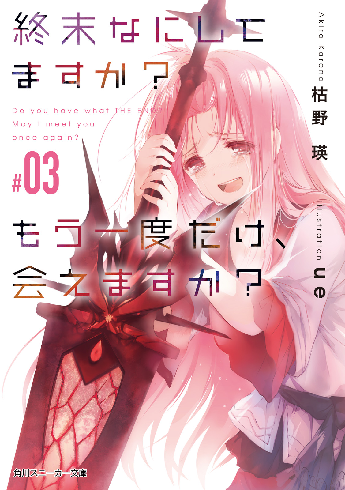
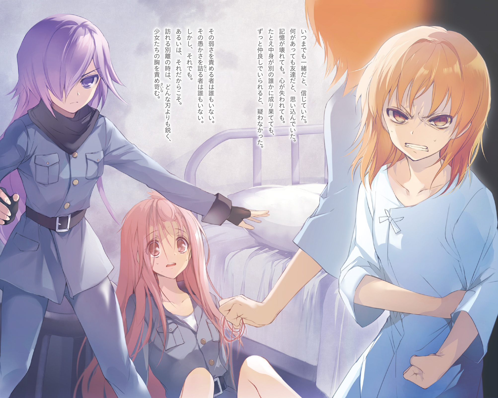
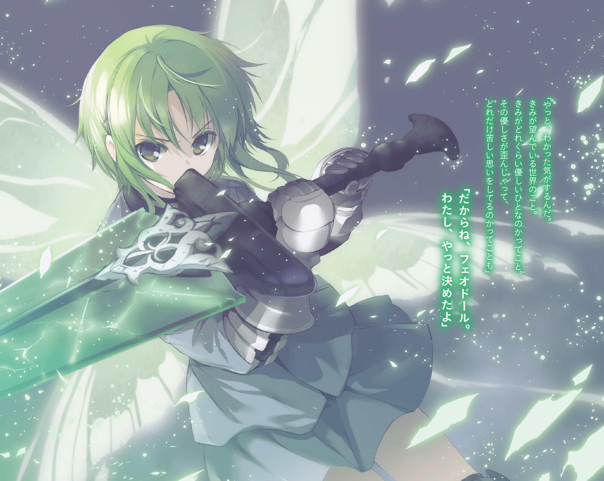
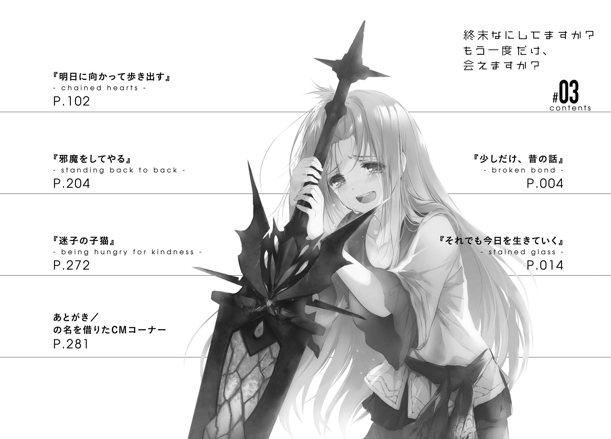
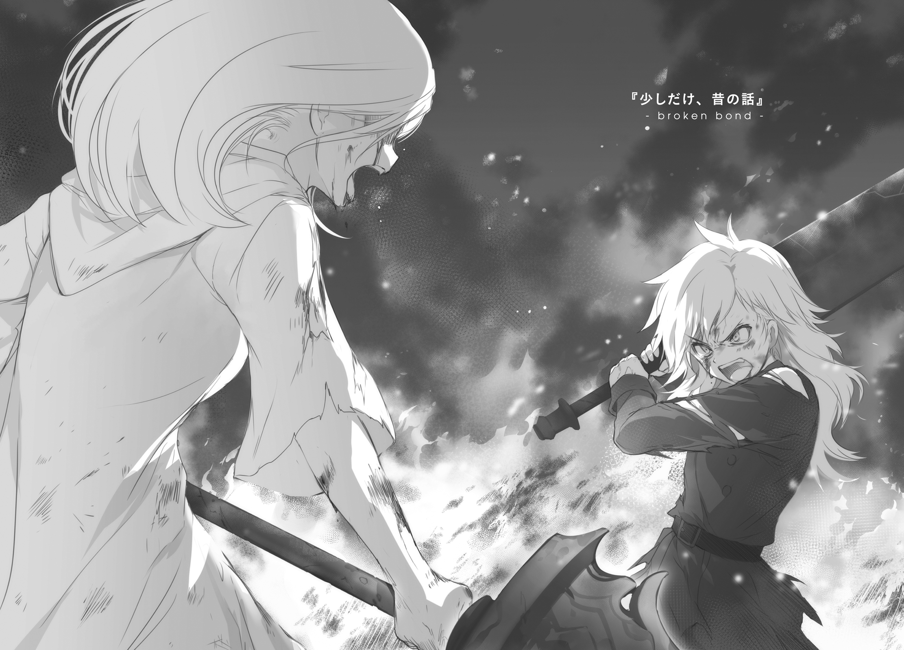
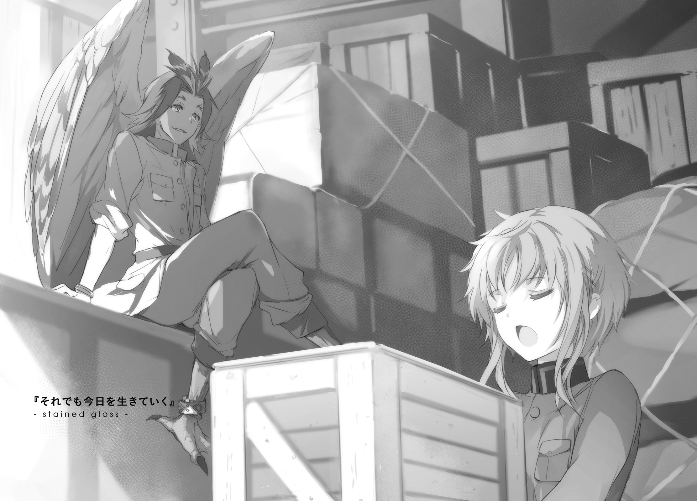
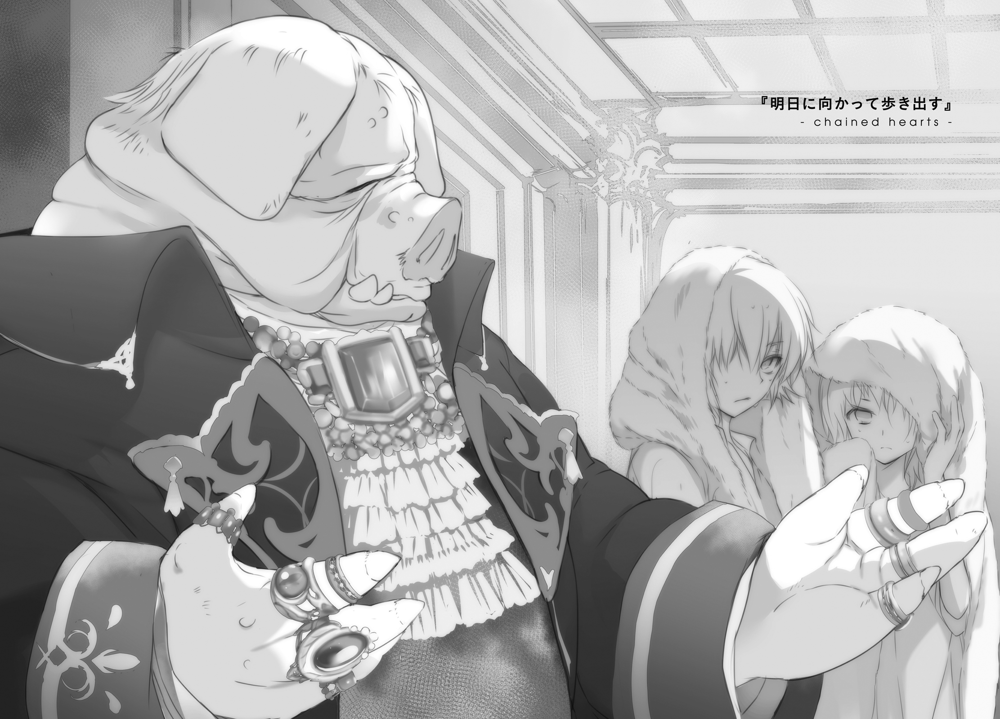
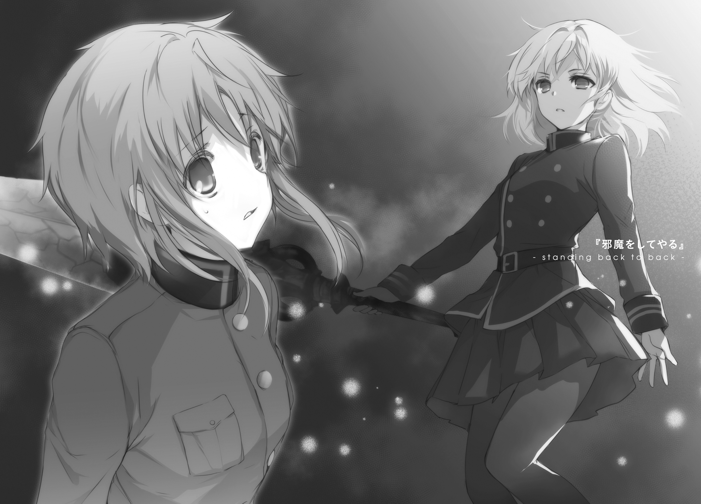
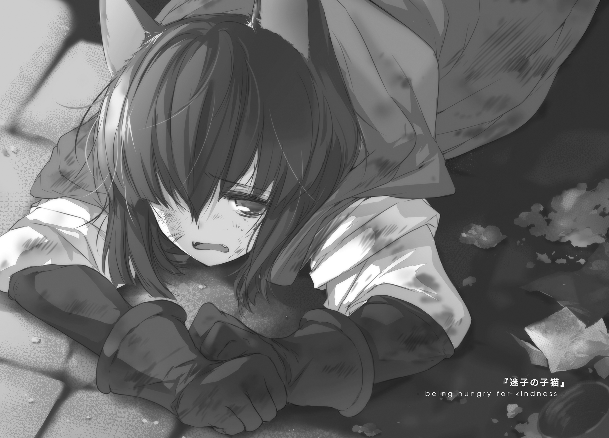

| 終末なにしてますか？ もう一度だけ、会えますか？#03 | |
| 枯野 瑛 & ｕｅ | |



終末なにしてますか？ もう一度だけ、会えますか？#03
枯野 瑛

角川スニーカー文庫
本作品の全部または一部を無断で複製、転載、配信、送信したり、ホームページ上に転載したりすることを禁止します。また、本作品の内容を無断で改変、改ざん等を行うことも禁止します。
本作品購入時にご承諾いただいた規約により、有償・無償にかかわらず本作品を第三者に譲渡することはできません。
本作品を示すサムネイルなどのイメージ画像は、再ダウンロード時に予告なく変更される場合があります。
本作品の内容は、底本発行時の取材・執筆内容に基づきます。
本作品は縦書きでレイアウトされています。
また、ご覧になるリーディングシステムにより、表示の差が認められることがあります。


これは少しだけ、昔の話だ。
具体的には、浮遊大陸群の共暦で四一五年の、春の出来事。フェオドール・ジェスマンと妖精の少女たちとの出会いからは、三十年弱の月日を遡っている。
ひとつの、争いがあった。
もちろんそれ自体は、さして珍しいことではない。当時は少しばかり荒れた時代でもあった。もう少し正確に言ってしまえば、少々大きな戦争が起きていたのだ。
時代の主役は６番浮遊島を中心に広がる自治空域、俗に言う『貴翼帝国』。老皇を弑して皇帝の座を奪った将軍が、ノリと勢いで──と周囲からは見えた──周辺の浮遊島や都市群へと侵略を始めたのだ。
都市群は都市群で、それぞれ勝手に、抵抗したり恭順を示したり商売を始めたり謀略に勤しんだりした。混乱が生まれ、広がり、収拾がつかなくなり、そして『浮遊大陸群の存続のため外敵と戦う』ための組織だったはずの護翼軍までが動き出した。
無数の思惑が空を駆け巡り、打算と感情が人々を駆り立てた。血が流れ、金が動き、命が消えていった。
その争いは、そうやって広がり行く戦火の、ひとかけらだった。
燃え上がる炎が、夜闇を払う。
横たわる飛空艇の残骸は、大小合わせて五隻。その全てが、激しく燃え続けている。
鋼と鋼の打ち合わされる、耳障りな音。
一度、二度。少しだけ間を空けて、もう一度。
刀身いっぱいに罅の入った奇妙な大剣──いわゆる遺跡兵装──を手に、二人の少女が斬り合っている。
遺跡兵装は、その見た目以上の威力を秘めた兵器だ。使い手の熾した魔力に呼応し、不死の〈獣〉に抗するほどの力を生み出す。そんなものを全力でぶつけ合えば、もちろん無傷ではいられない。傷つき、傷つけられながら、少女たちは消耗していく。
打ち鳴らされる剣と剣。押し合い、拮抗する力と力。
二人同時、弾かれたような勢いで後方に跳躍。互いに距離をとる。
「そこをどいて、ナサニア！」
ぼろぼろになった軍服をまとう少女が、血を吐くような叫びをあげた。
その手には、隙間からまばゆい光を放つ遺跡兵装。銘はムルスムアウレア。波打つような蒼と翠の色彩が、絶えず刀身の内側でのたうっている。
「あなたにだってわかってるはずでしょう、本当に倒すべき相手が何なのか！ 生きる資格がある者が、誰なのか！」
彼女はもちろん、黄金妖精だった。
黄金妖精は護翼軍の所有する兵器の一種であり、その用途は、浮遊大陸群に攻め込んでくる〈深く潜む六番目の獣〉との戦闘と定められている。その基本的な事情は当時も変わらず、それ以外の理由のために戦うことはもちろん禁忌とされていた。
この時代にも、妖精倉庫と呼ばれる部署は存在した。そしてやはり、それは、本来「倉庫」という言葉が示す意味合いとは少し異なる形で運用されていた。生きて動いて世話の必要のある兵器というのはつまり軍馬や軍鳥と同類であるということである。その解釈のもと、高級な軍馬と同じような扱いをもって彼女たちは管理されていた。住処は灰色の塀に囲まれていた。病気にならない程度に清潔を保たれ、体力を蓄えられる程度に食餌を与えられ、命令を理解できる程度に教育されていた。
そして、そんな環境下でも、──おそらくは軍馬や軍鳥でもそうであるように──彼女たちはそれぞれの心を育んでいた。
「それは、あたしたちが考えていいことじゃないよ、エルバ」
対峙するもう一人の少女が、同じく血の香りのする声で、呟くように答えた。
「悲しいのもわかる。悔しいのもわかる。これ以上つきあってらんないって気持ち、めちゃくちゃよくわかる。けれどそれでも、あたしらだけは、それを言っちゃいけないんだ」
「それが正しい判断だとでも、言う気!?」
「......その質問に意味はないよ。わかるだろ？」
相対する少女もまた、静かに魔力を熾す。
手の中の大剣、遺跡兵装パーチェムに縦横の罅が走り、淡い光が滲み出す。今にも荒れ狂いそうな暴威を刀身の内に秘めたまま、少女は構えをとる。
「正しさなんてものは、前提のほうを変えればいくらでも歪むもんだ。あたしは今、浮遊大陸群の未来を──それがどんなに醜いものであれ、未来が残るということのために戦ってる。けれどあんたはそうじゃない」
「醜いとはまた、ずいぶん控えめな表現じゃない」
頷きもせず、ただ目をわずかに細める。
「その未来では、私たちは、本当にただの兵器になってる。〈獣〉相手だけじゃない。私たちを所有する誰かにとって都合の悪いやつを、一方的に叩き潰すだけの便利な道具になってる。たったいま、私たちが、そうさせられたように！」
二人の背後には、大小合わせて五隻の、飛空艇だったものが炎を噴いている。
そのうちひとつは、護翼軍の攻撃艇。残りは帝国の軍用輸送艇と、その護衛艇。
火力炉ではなく呪燃炉を主動力とする飛空艇は、暴走したとて、それ自体が大きく火を生むことはない。火元となったのは、これら五隻が積んでいた荷物。そして、荷物に仕掛けられていた、万一の時に証拠を消し去るための爆破仕掛け。
大量殺戮兵器を前線に運ぶための輸送艇だと聞いていた。目的地に届けさせるわけにはいかないと、最小限の犠牲で大きな悲劇を防ぐためだと、そう言われていた。
結果は、どうなったのか。
自分たちが墜とした輸送艇には、大勢の民間人が乗っていた。様々な種族の者が入り混じっていたのと全体的に焦げていたのとでうまく見分けられなかったが、女性と子供が多かったように思えた。
なぜこんなことになったのか。ここにある情報だけでは判断ができない。偽情報をつかまされたのかもしれないし、連絡の行き違いがあったのかもしれないし、民間人の中に本物の殺戮兵器を運搬している誰かがいたのかもしれないし、単に暗殺したい相手が民間人に紛れていたのかもしれないし、帝国籍の艇を墜とせるのなら中身はどうでもよかったのかもしれない。
今さら真実を知る手段はなく、そしてその必要もない。
自分たちは、同朋たる浮遊大陸群の民を、殺させられたのだ。その事実だけは、後ろの真実がどんなものであったにせよ、変わらずにそこにある。
「こんなことをさせられて！ これからもさせられるっていうのに！ それでも納得できるっていうの!?」
叫びとともに、駆けた。
剣が──〈獣〉を殺すためのものであるはずの遺跡兵装が──交わる。
高く、重く、またあの金属音が弾ける。
そのままの姿勢、刃と刃を重ねたままで、力と言葉を互いに押し込んでゆく。
「......それでも、あたしら妖精は、軍に寄生する形でしか生きていけない」
「何を！」
「あたしも、あんたも、倉庫のみんなも、護翼軍の兵器としてしか存在できない。今ここであんたが馬鹿なことをしたら、後輩たちの未来も一緒に全部吹き飛ぶことになる」
「それでもいい。汚れた兵器として遣われる前に終わらせてやるのも、先輩の務めだ」
「それはただの傲慢だ、エルバ！」
「何とでも言いなさい、私はもう、妖精種の未来に希望を信じられないのよ！」
爆発めいた轟音をたてて、二人がそれぞれ反対方向へと吹き飛ぶ。
着地。靴底を突きこまれた土砂が、大型の炸裂弾でも叩きこまれたかのように爆散した。
迷わず、二人ともがその場で反転。開いたばかりのその間合いを、助走のためだけに踏みつぶす。激しく熾された魔力に賦活された脚力は、二人の体を、常識を超えた速度で前へと運ぶ。重心を前方へと放り棄て、少しでも速く、少しでも重い一撃を叩きつけるための、突撃の力へと全てを換える。
金属音。すれ違う。距離が離れる。身を翻し、再び突撃する。
続けて三度。四度。
二人の妖精兵が、互いに譲れない未来を懸けて、命を込めた刃を振るう。
今さらな事実に、ここで触れよう。
この二人は、同じ倉庫で育った、親友同士だった。
幾つかの戦場を共に駆け抜けもした。互いが互いを支え合い、ここまで生き延びてきた。おそらくは死ぬときも同じ、もし死別することがあるとしたら自分が相手を庇って斃れた時くらいのものだろうと、二人それぞれが同じように考えてさえいたのだ。
いつまでも、などと都合のいい夢はみない。せめてその命潰える時までは一緒にいようと。誓うまでもなくそう願い合えた、そんな二人だったのだ。
絶え間なく弾ける火花に混じり、涙の雫が散る。
それがどちらの眦から流れたものなのかは、誰にも分からない。
──これは、少しだけ昔の話だ。
だからもちろん、戦いはとうに決着している。
この時敗者となった少女は当然のこと、勝者となった少女もまた、それからそう時を経ずに命を失った。二人がそれぞれに案じた未来の行方を見ることなく、まぶたを閉じた。
この戦いがあったことを知る者は、もう、ほとんどいない。

１．笑顔の仮面
それは、とても古いおとぎ話。
地上にまだ人間なる種が栄えていた時代、子供たちを寝かしつけるために母親が読み聞かせるような、優しい民間伝承だった。
もちろんその手の物語の常として、細部には様々なバリエーションがあった。口から口へと伝えられるたびに、新しく文章にまとめられ製本されるたびに、伝承の詳細は少しずつ変化していった。しかしそれでも、要諦となる部分はほとんど変わることなく、ずっと伝え続けられていた。
いわく、たくさんの仕事を抱えて困り果てた靴職人のところに訪れ、少量のミルクと引き換えに仕事を手伝ってくれる小人がいるのだと。
いわく、それは体が小さいせいで、人間のように手早く仕事はできない。一晩をかけて靴の片方を作り上げるのがやっとなのだと。
伝承の中には、こんなものもある。それは悪戯を好み、ちょっとでも目を離すと色々なものをめちゃくちゃにして姿を消す。あるいは、たくさんの金貨を持っていて、地の底に隠していたり壺に入れて持ち歩いていたりする。楽しそうに逃げ回る彼らをうまく捕まえることができれば、大金持ちになれるかもしれない......
それは、人間たちの歴史にそっと寄り添っていた、優しく人懐こい隣人たちの記録。
──『レプラカーン』という名の、古き妖精たちの物語。
「......なるほど」
フェオドール・ジェスマン四位武官は、小さくうめいた。
軍服に身を包んだ、堕鬼種の少年だ。くすんだ色合いの銀髪、淡い紫色の瞳。背は高くも低くもない。人好きのする笑顔の上に、小さな眼鏡を載せている。
「よく分かった」
本を閉じる。
開店休業状態だった街中の貸本屋から借りてきたものだ。学生向けの入門書という体裁で、今はもう失われた古代の神話伝承について、わかりやすくまとめられている。
もともとフェオドールは、遠い歴史にもオカルト的な記録にも、さほど興味を持っていない。けれど、『レプラカーン』という字面からは、目が離せなかった。読まずにはいられなかった。そして、そこに描かれている古代の『レプラカーン』と、フェオドールが知る『黄金妖精』とを、比べずにはいられなかった。
体が（程度の差はあれど）小さくて。
人間がやるはずだった仕事を代わりに務めてくれて。
ちょっと要領が悪くて。
悪戯好きで。
そして、ちょっとでも目を離すと、あっという間にどこかに消えてしまって──
ああ、まったく。全部とは言わないまでも、主に性格的なところと性質的なところは、さすがによく似ている。
「つまり、ずっと昔からそうだったんだな、君たちは」
つぶやき、本の表紙を指先で撫でる。
誰かがやらなければいけないことを、代行する存在。
きっと、ただ役に立たせてもらうことと、そばにいることだけを代価に求めて。そして実際に、わずかなミルクだかだけをもらって幸せそうに笑っていたのだろう。
そして邪悪にして凶悪にして極悪な人間種たちは、彼女たちをとっつかまえて、黄金とやらを搾り取り、来る日も来る日も靴づくりをやらせていたに違いないのだ。
「滅びて当然だったんだよ、そんな連中は」
かつては肥沃だったという大地とともに、彼等はとうに滅びている。
得体の知れない侵略者、〈十七種の獣〉と呼ばれる暴虐なる者たちが、その大地をことごとく破壊し尽くした。潰し、削り、枯らし、腐らせ、消し去った。
かろうじて生き延びた者たちは、〈獣〉たちの牙の届かない場所へと住処を移さなければならなくなった。具体的には、空の上。百を超える数の浮遊島が造りあげた、大きな──しかしかつての地上に比べればあまりにささやかな──新しき世界へ。
それから流れた時間は、五百年。
浮遊大陸群は、決して楽園ではなかった。安全でもなかった。多くの犠牲を積み重ね、多くの涙を振り払いながらでなければ、この小さな新世界は維持できなかった。
そしてその上でなお、世界は削れ続けていた。
ひとつ、またひとつと、浮遊島は墜とされていった。ある島は空にまで届いた〈獣〉の脅威に屈して。またある島は、それとはまったく関係のない、そこに住まう者たちの行いの結果として。
誰もが、知識としては知っていることだ。
そして誰もが、事実として否定できずにいることだ。
世界はかつて、一度滅びかけて。
そして今も、滅びに向けて歩み続けている。悲しく笑う黄金妖精たちの命を搾り取り、薄氷の上の平穏を謳歌しながら。
「滅びて当然なんだよ、こんな連中は」
固めた拳に視線を落とし、フェオドールはもう一度、その言葉を繰り返した。
あの日から、十日ほどの時間が経っている。
その間の変化について、簡単に触れておこう。
まず、ライエル市を形づくる機械仕掛けたちは、順調に急速に劣化を続けている。
ずっと昔、この街が鉱山都市であることをやめたころに、多くの技術者たちがここを去っていた。39番浮遊島が〈獣〉に吞み込まれ、次はこの38番島だという話になった時に、残りの大半もまた逃げ去ってしまった。この市に残された者たちには、自分たちの足元を形づくる機械仕掛けを維持する手段がない。
壊れた機械は勝手に直ったりしない。一度限界を超えてしまえば、もはや帰る道はない。不調を無視し、故障を放置し、崩壊したものを切り捨てるという形でしか、人々はもうそこで生きていくことができない。
この街は、一月前、流通の要たる港湾区画の半ば近くを切り捨てた。そしてこの十日の間に、市街の二割近くを、機械部分制御不可であるとして危険区域に指定。市民の立ち入りを禁止した。
ライエル市はまだ死に終わっていない。けれど、確実に削れ続けている。
さらに別の話として。
常識を超えた強さで魔力を熾したラキシュ・ニクス・セニオリスは、人格崩壊だか何だかに陥り、ずっと眠り続けている。
意識を取り戻しそうな兆しは、まったくない。
そして、これは、当たり前のことだが。
リンゴは──ことあるごとにフェオドールの腹に全力の体当たりをぶつけてきたあの幼い妖精は、もう、どこにもいない。
整備資材、砲弾と火薬、食料、嗜好品各種、その他もろもろ。ひとつひとつ木箱の中身を改め、手元の物資リストと比較していく。荷札は間違っていないか。数量は記載されている通りか。配送のどこかの過程で、不良軍人によるちょろまかしが発生していたりはしないか。
今回護翼軍中央から運ばれてきた補給物資の量は、輸送飛空艇二隻分に届いた。
「──はい、確かに受け取りました」
手元の物資リストから顔を上げ、山積みになった木箱をぐるりと見回してから、フェオドール・ジェスマン四位武官は力強く頷いた。
「ところで、リストにあるこの『極秘』って箱、結局何だったんでしょうね」手元のリストを手の甲で軽く叩き「アイセア二位武官待遇に直接引き渡す、ってなってますけど」
「ああ、例のやつですな。黒くてでかくて、鎖でぐるぐる巻きの箱」
「うへえ、あからさまに怪しいですねそれ」
「怪しかったでありますよ実際」
輸送隊所属の蛙面人は、ぴるぴると舌を出し入れしながら言う。
「中身は、うちの艇にも知らされませんでしたなぁ。とにかく大事に運べ、中身については詮索するな、とだけ。そんなん具体的にどう扱えばよいのだというものでして、いやもう気を遣う気を遣う」
「あはは、ご苦労様です」
ここでフェオドールは声をひそめて、
「......噂じゃ、例の『大賢者の遺産』なんじゃないかって話でしたけど」
いかにも与太話ですよという体裁で、そんなことを言う。
罪のない噂話は、平均的な軍人の大好物だ。案の定、蛙面人はぎょろりと目を剝いて、その話題に興味を示した。同じように声をひそめ、周囲を一度見回してから、
「例の都市伝説ですな。ここ数年の護翼軍最上層部の忙しなさは、大賢者様が既にこの空を去られているが故だ......でしたか」
ここ数年の護翼軍は、どこかがおかしい。
表だっての話題にこそならないが、水面下では広く囁かれていることだ。
護翼軍は、浮遊大陸群全体の存続のための軍事力だ。これは大前提。そして少なくともこの点は、今も昔も変わってはいない。その上で、ここ二、三年の護翼軍は、迷走を始めている。コストのかかる兵器を解体したり、逆に有効度のわかりにくい新たな兵器に巨費を注ぎ込んだり。意図の不明な形で兵力を再編したり、それまででは考えられなかった各自治領域への内政干渉を行ったり。
迷走の直接の原因は明確で、護翼軍の意思決定システムそのものにある。
名目上、護翼軍の最高意思決定権は、五人の将官にある。そして、彼らのそれぞれが、護翼軍の大きな動きを決定する権限を持っている。
つまり、こういうことだ。浮遊大陸群全体の存続という目的を共有していても、五人がそれぞれに違う手段を心に描けば、当然、足並みは揃わない。ならば意思や意図のすり合わせを行えばよいのかと言えば、彼らの地位の高さゆえにそれもうまくいかない。護翼軍は決して巨大な規模の組織ではないが、それでも将官ともなれば、大都市の首長にも匹敵する権限と責任と不自由を持つことになるのだから。将官同士の合意を得るのは、都市同士の合意を得るに等しい。
そんなシステムの上でも、なんだかんだで護翼軍はこれまでやってこられた。その理由は何かといえば、やはり大賢者の存在をおいて他にはない。
大賢者。
おそらくこの浮遊大陸群で最も有名な、偉人中の偉人である。
いわく、〈十七種の獣〉によって地上のすべてが滅び去ろうとしていたその時、わずかな生き残りを空の上の大陸群に導いた救い主。いわく、浮遊島同士の争いが激化しようとしていた時代に護翼軍の設立を支え、それからずっと陰から見守り続けている、大いなる守護者。彼がいなければ浮遊大陸群は存在せず、彼がいなくなっていれば浮遊大陸群は維持されてこなかったとまで言われる、スペシャル重要人物。
護翼軍の名目上のトップが将官たちだというなら、実質上のトップは彼だ。彼は浮遊大陸群の歴史そのものであり、さらにはそれ以前、地上に栄えていた国々についてすら造詣が深い。彼が健在でありまとめ役として舵をとり続けてきたから、護翼軍はこれまでひとつの組織としてやってこられた。
だから。実際に護翼軍がばらばらになり始めた今、当然のように、人々の間にはひとつの噂が流れていた。
いわく、大賢者はもういない。
浮遊大陸群そのものと言ってもいいだろう偉大なる守護者は、どういう理由によってか、この空を離れた。我らはついに、自分たちの足で歩きださなければならない時を迎えたのだ......と。
「言われてますよね、大賢者はこの空を去る前に、ひとつの箱を遺した。その中には、最悪の災厄が詰め込まれている。しかしその災厄は、浮遊大陸群を本当の絶望から救う最後の希望ともなりうるものなのだ......とかなんとか」
「オチも色々予想されてますなぁ。〈獣〉にも効く夏風邪の病魔だとか、二日酔いによく効く代わりに死ぬほど苦い丸薬だとか、大昔に大賢者が惚れてた娘の似姿だとか」
「みんな想像力ありますよねぇ」
しみじみと頷きあう。
ろくでもないオチばかりが揃うのは、この手の罪のない噂話の常である。雑談のネタには、中途半端な現実味などいらない。荒唐無稽であることのほうが大切なのだ。
「今回のその黒い箱が、その遺産かもしれない。僕たちの手の届くかもしれないところに、神話に近い浪漫の産物があるのかもしれない。夢のある話ですよね」
「とはいえ、機密に鼻づら突っ込んで確かめるわけにもいきませんからな。謎は謎のまま、浪漫は浪漫のままにしておくのが一番ではありましょう」
両目をぐりぐり動かしながら、たぶん蛙面人は笑ったのだと思う。
フェオドールもまた、「ですよねぇ」と、朗らかに笑う。
げこ、と蛙面人は興味深そうに喉を鳴らし、
「フェオドール殿、最近、何か吉事でもあったのですかな？」
「え？」
「以前にお会いしたときより、ずっと明るい顔をしているように見受けられる」
返答に困る。
「......気のせいです。特に何もないですよ」
「で、ありますか」
貴殿らの種族は目が小さくてわかりにくいですな、と蛙面人が首をひねる。
離れたところで、顔なじみの上等兵が腕を振る。おーい四位武官、ちょっと手伝ってくれー。それを受け、フェオドールは「今行きまーす」と明るく手を振り返す。
「それじゃ、ここで僕は失礼します。後の手続きは、係の三位技官が担当になるはずですので、そちらにお願いしますね」
言って、少年は走り出す。
あれから、十日が経っている。
その日々のほとんどの間、フェオドールは、実に明るく振る舞っていた。
笑顔を絶やさず、誰に対しても明るく接し、仕事ぶりはそれまで以上に丁寧だった。
妖精の存在およびその特性については、現在もまだ極秘事項のままである。あの時突然にライエル市内で侵食を始めた〈重く留まる十一番目の獣〉を仕留めたのは、フェオドール・ジェスマン四位武官が極秘で預かっていた、最新の試作爆弾であるとされた。
いわく、リンゴを殺され、ラキシュを倒され、それでもフェオドールは〈獣〉に立ち向かった。爆発を含めあらゆる衝撃を吸収し侵食の速さへと換えてしまうはずの〈十一番目の獣〉に対し、それでも、手の中の爆弾を投げつけることを選んだのだ、うんぬん。
本人の知らない間にそんなストーリーが出来上がり、第二師団中に広められていた。
「大した子よねぇ、実際」
同期である蛇尾種の四位武官は、最近の彼について、感心したようにこう評した。
「大事な部下と、娘みたいに可愛がってた子を、同時になくしたわけでしょ？ でもその直後に、自分の危険を顧みないで、ちゃんと仇を討った。そして今は、ああやって精一杯に明るく元気に生きてる」
うんうん、とうなずいて、
「あれはきっと、生き残った彼がちゃんと胸を張っていないと、ラキシュちゃんたちが悲しむからよね。ほんとは泣きたいくせに、無理しちゃってさ」
「兵士として在ることを選んだ、ということでしょうな」
付き合いの長い狼徴種の上等兵は、痛ましげに耳を伏せてこう評した。
「戦場に立つならば、戦友との死別は避けられん。失うこととどのように向き合い、立ち向かっていくかは、それぞれが答えを見つけねばならぬこと。深い悲しみを背負いながら、それでも立ち上がり戦い続ける......」
感動を表すように、ゆっくりと首を振る。
「それが、苦しみの底から四位武官が見つけ出した答えなのでしょう」
「英雄など所詮、他人の命を踏み台にして成りあがった者の別称にすぎん」
付き合いの長い猫徴種の上等兵は、最近の彼について、忌ま忌ましそうにこう語った。
「どこまでが計算通りかは知らんが、全くよくやったもんだ。自分を慕ってくる娘を犠牲にしてまで、順調に手柄を重ねる。出世も早まることだろう。品位も良識も常識もかなぐり捨て、ただ上のみを目指す」
ふん、と不機嫌も露わに鼻を鳴らす。
「その我欲だけは大したものだと、認めざるを得んな」
「最近のフェオドール、君はどう思う？」
いきなり高いところから声をかけられ、抱えていた木箱の山を取り落としかけた。
「......そんなとこで何サボってるんですか、ナックスさん」
恨めし気な顔で、ティアット・シバ・イグナレオは声の主を見上げる。
「休憩だよ休憩。人聞き悪いことは言いっこなしだ」
積み上げられた大型木箱の山に腰かけた鷹翼種の青年──ナックス・セルゼル上等兵は、片目をつぶり肩をすくめた。
「俺たち有翼の種族はほら、骨格とか華奢にできてるし筋肉つかない体質だしで、力仕事には向いてないんだよね。世の中には適材適所って言葉があるわけだしさ」
「ふーん？」じっとりと責めるような目「それはあれですか？ 妖精は華奢じゃないし筋肉がっしりしてるから、力仕事を任せて安心って意味ですか？」
「いやそこまでは言わないけどさ」
弁解するように軽く手を振りながら、ナックスはティアットの手元を見る。
「言わないけど、実際君って、見た目より相当力持ちだよな？ その箱、そんなに軽いもんじゃないだろ？」
「まぁ、そですけど」
当の木箱を軽くゆすって姿勢を正し、両腕と胸とに重量を分散させる。
箱の中には、護翼軍で採用されている重火薬砲で広く使われる、共通規格の砲弾が詰まっている。いまティアットが抱えているのは、そんな木箱を縦に積み上げてみっつ。ナックスの言うとおり、なかなか重い。たぶんだが、単純に目方を比べるのなら、ティアット自身の体重よりもずっと上......のはずだ。たぶん。
「ちょっとだけ魔力を使って、全身を賦活してるんです」
軽く体をゆすってみせる。
魔力。生命力の裏技。死に近しい者のみが強く熾せる、形なき力へと繫がる無形の回路。そして受肉した死霊であるティアットら妖精は、本来の意味では生きてすらいない存在だ。ゆえに、魔力を扱う技術との相性はすこぶる良い......のだが。
「わたしってラキシュみたいな才能がなくて、すごく強い魔力ってのは熾せないんですよ。でも逆にそのおかげで、暴走とかの心配がほとんどないの。だから、こういう時には気軽に使えてけっこう便利」
「......持ってる力を十全に使いこなせてるってのも、立派な才能だろ？」
「コンプレックスまみれの凡人としましては、そういう正論で納得したくないところもあるのですよーだ」
拗ねたような口調でそう答えてから、一転して声を落とし、
「......ひとことで言って、見てらんないです」
「ん？」
「さっきの質問。わたしが、今のフェオドールについて、どう思ってるかって」
少し時間を空けてから、ああ、とナックスは小さく頷く。
「そういう感想になるってことは、君にも今のあいつの素顔、見えてるんだな？」
「くやしいけど、嫌ってくらいにはっきりね。あいつって噓つきのくせに、根っこのところは、ばっっっかみたいに素直だから」
はああああ、とこれ見よがしに重たく息を吐いてみせる。
「あの『真面目で誠実で好人物で眼鏡な四位武官』の白々しい演技が、以前にも増して完璧だもの。演技が完璧ってことは、それだけ、素顔の自分を抑えつけてるってこと」
もともとフェオドール・ジェスマンは、二面性を隠し持つ人物だった。真面目で誠実な顔はその片方でしかなく、その陰には意地悪で性悪で根性悪な本性が隠れていた。そして微妙に隠しきれずに、ちらちらと漏れていたりもした。
けれど今の彼には、その、ちらちらと漏れていた部分が、かけらも見えない。
それくらい徹底的に、今のフェオドールは、自分の心を押し殺している。
少なくとも、ティアットの目には、彼がそう見えている。
「でもそんなの、自分自身から逃げてるだけじゃない。どうせそのうち現実と向き合って、今よりずっと辛い気持ちになるだけなんだから」
リンゴがいなくなったこと。ラキシュが眠りについていること。もちろんこれらの事実は、ティアットの心にも大きく罅を入れている。しかしティアットは、フェオドールとは別の意味で、それを表には出さないことを選んだ──妖精兵として愛情に散ることを自ら望む者として、今ここで足を止めることは許されないと思ったから。
他の誰にも強いる気はないし、共感を求めるつもりもない。ティアット・シバ・イグナレオ一人だけの中にある、ささやかな矜持。
「ずいぶん力強く言いきるんだな。もしかして経験者？」
「......別に。こんなの、ただの一般論」
ばさり、と鷹翼種の翼が一度大きくはためく。木箱の上から飛び降りたナックスが、ティアットのすぐ隣に降り立つ。
この重い荷物を代わりに持ってくれたりするんだろうか、とティアットは一瞬だけ期待した。けれどもちろん、そんなことにはならなかった。
「ティアットちゃんはもう知ってるかもしれないけどさ。フェオドールってさ、子供のころにちょいと、大きな事件に巻き込まれたことがあるんだよ」
「事件？」
「そ、事件。そん時に親類縁者からただの知り合いまで、とにかく周りにいた誰も彼もを一度に亡くしてんだ。だから、こう言っちゃなんだけど、大事な誰かを失うことは、経験済み。また同じような目に遭ったからって、今さら折れて壊れたりはしない」
それが良いことか悪いことかは分からないけどね、とナックスは渋い顔で言う。
「折れそうになっても、壊れそうになっても、今さら立ち止まれやしない。そんなことは、あいつの過去が許さない......ってさ」
「──ナックスさんって、フェオドールとは、昔からの友達なんでしたっけ」
「まぁな、あいつが護翼軍に入った最初の年からだ。あいつが出世して個室をもらうまでは、ずっと同じ部屋に押し込められてた」
「じゃあ、その......もしかして、あいつの夢っていうか野望っていうか、そういうのを聞いたことあったりします？」
ティアットは、フェオドールの本気の叫びを、少しだけ聞いたことがある。それは何というか、あまり多くのひとに聞かれてはいけなそうな内容の......けれど間違いなく、彼の心が本当に求めている未来の姿だった。
世界を捨てることを決めたんだ、と、彼は言っていた。
世界を護るためにある軍に所属し、四位武官という地位につきながら、その立場と真逆のことを、宣言していた。あれは一体、どういうことだったのか。
「あん？」
顔を覗き込まれた。反射的に、目を逸らしてしまった。
「まぁ......いちおう、それなりにはな」
びくりと、ティアットの肩が勝手に震えた。
ナックスは意地悪く片目を閉じて、
「さすがに女の子の前じゃ言えない内容なんだけどな？」
「あ、そういうやつですか」
拍子抜けすると同時に、口元がほころんだ。
助かった、と思う。自分から尋ねておいてなんだが、冷静なままでこの話題を続けられる自信がなかったから。
「猫徴種の美女と仲良くなる、とかそういう感じですか」
「そうそう。艶っとした黒毛がいいとか、そういう話」
「身の程知らずの高望みですねぇ」
けたけたと笑い合う。
「まぁ、あれだな」ふ、とナックスは笑いを緩めて「過去の誓いも未来の夢も、過ぎれば毒にしかならないってやつだ」
その言葉は、ティアットの記憶を小さくくすぐった。聞いたことがある。確かその後ろには、こう続いたはずだ。
「ええと──我々は所詮、現在という点の上でしか生きていけないのだ、でしたっけ」
それは、小さかったころに大好きだった物語──何度も繰り返し観に行った映像晶石の中で、ささやかれていた一言。退役軍人だった主人公（ハンサムな爬虫種だった）に、かつての上官（渋い蛇尾種だった）が煙草をふかしながら送った、別れの言葉だ。
ナックスが小さく口笛を吹く。
「渋いもん、知ってるんだな」
「たまたまです」
答えて、ティアットは腕の中の木箱を、ひょいとまとめてナックスに押し付けた。
繰り返すが、それは砲弾の詰まった、見た目よりきっつい重量物である。
「うぇんぎっ!?」
よくわからない悲鳴をあげながら、それでもナックスはそれを取り落としたりはしなかった。両腕を伸ばしきり、派手に体勢を崩し、脂汗で顔面をびっしょりと濡らしながら、それでもしっかりと重量を支え切る。ふだんの振る舞いこそ軟弱めいているが、それでもさすがは軍属の上等兵といったところか。
「防湿倉庫の四番に持ってっといてください。それじゃ」
「ちょ、ちょっと待ってティアットちゃん、これ重さけっこう冗談にならない！」
「華奢で筋肉のないわたしでも持てたんだから、ナックスさんなら大丈夫ですよ」
「きみってときどき、言うことすごく図太くなるよね!?」
悲鳴をあげるナックスを背後に、ティアットはその場を後にする。
「背骨、俺の背骨がかなりやばい！」
......ぎゃあぎゃあ騒ぎながらも投げ出したりはしないあたり、なんだかんだ言って、彼もちゃんと軍人なんだなぁ......そんな、どうでもいいことに感心しながら。
２．浮遊大陸群の敵
空が青い。
雲が白い。
どこかから、気の早い春の花の香りが漂ってくる。
そして、窓辺から顔を突き出してぼんやりと空を眺めているフェオドールは、この上ないほど憂鬱な気分を嚙みしめていた。
ラキシュとリンゴが失われたあの事件について考えている。
姉が仕掛けたものではないかと、まずは疑った。あの、実に堕鬼種らしく性根のねじくれまがった性悪女が何を考えているのかは、同族にして親族であるフェオドールの想像も届かない。何を企み何をやらかしたとしても、改めて驚きはしない。
しかし同時に、どうにもそれらしくないという気もしている。今回の事件の詳細を聞き確かめてみれば、それはあまりに杜撰で偶発的で外連に欠けて、つまりは「姉らしくない」ように思えたのだ。
この直観が正しいと仮定するなら、あの姉とは別の誰かが、『エルピスの小瓶』を商売の、あるいは策謀の種として使っていたということになる。あまり考えたくない可能性ではあるけれど、だからといって無視するわけにもいかない。
「......といってもなぁ」
問題は、事件についての調査自体が難しいことだった。なにせ、『黄金妖精』と『小瓶』という二つの機密が関わった一件だ。どうしようもなく情報源は限られてしまう。
ティアットたちからの報告は受けている。なじみの情報屋にして捕り物の当事者の一人、ナックス・セルゼル上等兵から、もう少し踏み込んだ事情も聞いている。ティアットたちが捕まえてきたという、豚面種の商人および獣人の護衛たちの供述についても──ほとんど白紙だったが──書類に目を通した。それが全てだ。
「あの連中が釈放されるのを待つ......かなぁ......」
何分、『小瓶』の存在自体を公にできない以上、それを商取引しようとしていたということを罪に数えることはできない。よって、あの商人たちの表向きの罪状は、侵入厳重禁止区域への無許可での立ち入りや勝手な機械の起動、さらには建造物破壊と騒擾と軍務妨害などなどとなっている。
加えて、護翼軍はあくまでも外敵に抗するための軍であり、治安維持に属する権限を持っていない。よって、所属する軍人が悪さをした時に独居監房にブチ込むのとはわけが違うのだ。一般の犯罪者を捕まえておくなどという権利はない。「度重なる事件のせいでライエル市の拘留施設が麻痺しているため一時的に犯罪者が護翼軍に委託されている」という体裁を整えてはいるが、そんな欺瞞にはどうしても限界がある。おそらく遠くないうちに、彼らは市法に定められた通りの身代金を払い、自由を取り戻すことだろう。
そのことに対して、怒りはある。憎悪もある。法が裁けないなら自分でその腹を刺してやりたいという思いもある。しかし、フェオドールには目標がある。誓いがある。計画があり、そのために積み重ねてきた日々がある。だから、踏みとどまることができた。
「あいつらから、取引相手の正体についてもう少し聞き出せれば......」
「えどるー」
──べたあ、と何か小さくて温かいものが足に貼りついてきた。
見下ろす。
青空の色の髪をした幼い少女が、軍服の下半身に抱きついているのが見える。
「マシュ」マロ、と続けそうになった言葉を途中で吞み込んで「......リィエル」
その少女の名を、先日聞かされたばかりの新しい名を、呼んだ。
「ぁいあ」
リィエルは、嬉しそうに顔をあげた。よだれが軍服の裾についている。
「こら、離れなさい」
「やー」
軽く足を振るが、思いのほか強い腕の力でしがみつかれていて、離れない。
「えどるー、あそぶ」
「ごめん、今忙しいから」
「いつも、それ。つまんない」
あれからの十日、何度も繰り返されてきたやりとりだ。
リィエル──以前までマシュマロと呼ばれていたこの娘──は、この通り、まだこの第五師団にいる。そのうち、68番浮遊島だったかにあるという妖精たちの住処へ送られることになるのだろうが、少なくともそれは今日明日の話ではないらしい。
今の護翼軍基地は、リィエルにとって、とにかく退屈な場所であるらしい。顔を合わせるたびにこうしてフェオドールにまとわりつき、かまえとわがままを言う。そしてフェオドールは、多忙を理由にそれを突っぱねる。
噓ではない。実際、フェオドールがやらなければならないことは、数多い。
しかし、噓ではないだけだ。フェオドールが抱えている作業の全てが急を要するものというわけではないし、彼がやらなければいけないことというわけでもなかった。それでもフェオドールは多忙であることを求め、それを理由に、リィエルを拒み続けた。
この少女がそばにいると、どうしても思い出してしまう。意識してしまう。
リンゴのこと。
ラキシュのこと。
もちろん、幼い子供が、死別を理解できないのは当然だ。妖精だろうと他の種族だろうとその辺りの事情は変わらない。だから、リィエルが、二人の不在を悲しんでいないということ自体に対しては、思うことはない。
しかし、それでも。何ひとつ悲しみなど知らずに、無邪気にはしゃいでいるこの子の姿を近くで見ているのは、辛い。
一生懸命になって取り繕っている優等生の仮面が、溶けてしまいそうなくらいに。
「パニバルに遊んでもらえばいいだろ？」
「うー」
嫌そうな顔をされた。愛情表現を剣に頼りがちな彼女は、いまいちこの子に好かれていない。かわいそうにと思わなくもないが、もちろん自業自得ではある。
「じゃあ、ティアットは？」
「ううー」
もっと嫌そうな顔をされた。真面目で融通が利かない優等生気質である彼女もまた、やっぱりこの子にあまり好かれていない。自業自得だし、ざまあみろとか思う。
ならばコロンはどうなのか、という質問は飲み込んでおいた。彼女が今どういう状況にあるのかをフェオドールは知っている。目を覚まさないラキシュのそばから離れず、ずっと看病をしている......というより、ほとんど放心している。少なくとも、子供の世話を焼けるような状況にはない。
（そっとしておいてやるしかない......よな、あれは）
リィエルの前髪を、指先でくしゃりとやる。
片目をつぶって、うっとうしそうな顔をされる。
「あまり困らせないでくれよ。部屋に戻って、一人で遊ぶんだ」
「......うー」
不満にめいっぱいに頰を膨らませながらではあるが、聞き分けてはくれた。小さな背中がてってけと走り去るのを、言葉なく見送る。
兵舎の一階。先日まで予備資料室であったところから書類棚を全部運び出し、ベッドを運び込み、大慌てで形だけ整えた。そして出来上がったのが、いまアイセア・マイゼ・ヴァルガリス二位武官待遇が使っている部屋である。
「ラキシュはどうなるのか、っすか......」
手紙か何かだろうか。何やら書きものをしていた手を止め、アイセアは、くるりと車椅子の車輪を回してこちらへと向き直った。
「ちょい長い説明になるけど、構わないっすか？」
「はい、お願いします」
フェオドールは頷いた。
この女性は、妖精兵という機密存在について、どうやら非常に多くを知っている。そしてそれは、単に当事者であるからという枠に収まらないようだ──つまりティアットたちよりも体系的に、より深い事情まで把握している。
聞き出せることは、少しでも多く聞き出しておきたかった。
「あたしら妖精は、死を理解する前に死んだ、小さな小さな子供の魂のなれの果てっす。これは知ってるんすよね？」
「はい。彼女たちから、簡単にですが説明を受けました」
「その説明で納得したんすか？」
「いえ、納得は微塵もしていません。ただ、そういうものだと理解はしました」
「なかなか頼もしい吞み込み方っすねえ」
にははとアイセアは笑う。
似合わないな、と思う。
ほっそりとした、穏やかな風貌の持ち主なのだ。徴無しの異性に興味を持たないと公言しているフェオドールだが、この女性がときどき浮かべる物憂げな表情などには、意味もなく動揺させられたりもする。
だからこそ、その外見と嚙み合わないふだんの語り口調と笑い方とに、どうにも違和感が漂うのだ。
まるで、わざわざ他人を演じているように見えるのだ。
本来の自分自身を、作りものの笑顔の後ろに隠しているような。ここにいるのは自分ではなく、意地悪く笑う別の誰かなのだと、誰かに言い聞かせているような。
そんな少年の心中を知ってか知らずか、アイセアはペンをくるくると回しながら、
「そもそも魂ってのが怪しさ大爆発なオカルトワードなわけっすけど、そこんところも吞み込んでもらうとしてっすね。そのお子様ズ魂には、お子様の記憶や感情のかけらが、ちょっぴりこびりついてるんす。本来ほんとに小さな汚れみたいなものなんで、普通に暮らしてるぶんにはしばらく影響もないんすけどね」
そこで椅子を勧められ、フェオドールは腰を下ろす。
「普通に暮らしてるぶんにはしばらく、ですか」
「そう。基本的には時間をかけて、限定的な状況においては速度を上げて、それらの『前世のかけら』が、あたしたちの記憶や感情を......おおざっぱに言えば人格を、食い荒らし始めるんすよ」
「食い荒ら......!?」
動揺が、隠しようもなく顔と声に出る。
アイセアは構わずに説明を続ける。
「ちゃんと成体妖精兵として調整を受けていれば、この侵食の速度は大きく抑えられる。二十歳近くになるまでは目立った影響は出ない。そしてそもそも、そんな年まで長生きする妖精なんてものがほとんどいないから、敢えて問題視するようなことでもない......まぁ、最近、いくつか例外が増えたんすけどね」
言葉は濁されたが、フェオドールはその「増えた例外」とやらを推測できる。この五年の間、〈六番目の獣〉との戦いがなかったからだ。そもそもの戦場がなければ、兵器が使い捨てられることもない。
「ただ、調整を受けていても、特定の条件下では侵食がいっきに加速する。具体的には、妖精の基準から見てすら『異常』と言える桁の魔力を熾したり、それに触れたりすること。さすがに自力だけでどうにかなる話じゃないんで、超高位の遺跡兵装で魔力増幅フル稼働することってのと、ほとんど同義っすね」
「遺跡兵装」
その言葉を喉元で一度咀嚼して、
「ティアットたちはどうなんですか？」
「......あの三人なら心配ないっすよ」
三人。
四人ではなく、三人。
分かっている。ラキシュ・ニクス・セニオリスは、その数には含まれない。
「イグナレオとカテナは、どちらかというと低位の剣。コロンのプルガトリオはそこそこ高位っすけど、そこそこ程度じゃ今言ったみたいな事態には届かない。うちの倉庫に今ある剣の中だと、条件を満たすのは反則剣セニオリスと......あとはヴァルガリスとムルスムアウレアくらいじゃないすかね」
にゃはは、と、アイセア・マイゼ・ヴァルガリスは笑う。そう多く話したわけではないが、この笑い方は何かの本音を隠すためのものだと、フェオドールは理解している。
「その、人格の侵食......というのは、具体的にはどのように？」
「〝こころ〟が壊されていく......とでも言えばいいんすかね。個体差が激しいうえ症例がそんなにないんで、あんまり正確な説明はできないんすけども。新しい古いとかと関係なしに、記憶が次々と欠け落ちる。感情がうまく動かなくなる。知らない記憶とか、赤の他人の感情だとかが、状況と無関係に頭の中に沸き上がってくる。......特に激しく状況が進行していく最中は、瞳が赤く変わったりすることもあるみたいっすね」
瞳の色。
ラキシュの場合、どうだっただろうか。よく覚えていない。記憶に残っているのは、燃え上がるような赤い髪だけ。
「そうして記憶や感情が壊れていって、そのうち人格が維持できなくなる」
沈黙。
「生きていくうえで最低限必要なかけらすらなくなってしまったら、昏睡する。その後は、死体と同じ。体が生きていても、基本的に中身は空っぽっす。放っとけば、そのまま空気に溶けて、消えてなくなるっすよ」
「治す手段は」
沈黙。
わずかに、アイセアの瞳が濡れているように見えた。
あの日フェオドールは、ラキシュに対して、大切なことを告白した。そして彼女の言葉を、結局、聞きそびれてしまった。そんなものはいつでも聞けるだろうと、自分たちにはまだまだ時間があるはずだと、そう思っていたから。思いこんでいたから。
自分たちは、薄氷の上に生きている。そのことを、忘れてしまっていたから。
悔やんでも、嘆いても、カレンダーの日付は遡らない。失われてしまった相手とは、もう二度と、会うことが叶わない。
「君のせいじゃないっすよ」
労わるような、アイセアの声。
なぜかは分からないが、その声の優しさが、癇に障った。
「僕のせいじゃない、ですか。誰のせいでもない。それはそうですよね」
隠しようもなく、苛立ちが声に出てしまう。
こういう時、堕鬼種の舌は、必要以上になめらかに回る。なめらかすぎて、自分自身でも何を言っているのかが分からなくなる。心にもない言葉か、あるいはそれこそが心の奥底に眠る本音なのか。その判断もつかなくなる。
「大手を振って誰かを恨めるなら、誰もこんなに苦しんだりしない。諦めて受け入れるしかない。全部最初から決まってたことで、誰が何をしたって変えようがなかったんだって。決まった運命には、誰も逆らえないんだって。それで納得するしか──」
「フェオドール君」
舌が、止まる。
舌だけだ。額のあたりにこびりついた衝動的な熱は、引いてくれない。
「──何ですか」
「自分も騙せない下手くそな噓は、感心できないっすよ」
静かな声。
「どうして、いえ、僕の言葉の何が噓だと？」
「何がも何も。ティアットから聞いたんすけど、自分で言ってたんすよね？ 誰かのために命を遣う、そういう生き方や考え方が許せないって。じゃあその時点で、妖精を殺してるのは運命なんかじゃないって、君は気づいてるはずっすよ」
反論は。
本能的に脳裏に浮かんできた、いくつもの反論の言葉は。
全て、棘のように喉に引っかかり、外には出てこなかった。
「運命なんてものがそもそも本当にあったとしてもね、そいつはそれなりに手ぬるいっすよ。あたしらの戦いには、なんだかんだ言ったって、ちゃんと退路がある」
知っている。
「戦いたくなければ、戦わなきゃいい。命令に従いたくないなら、逆らえばいい。それでも命を投げ出す妖精がいるのは、その子がそうしたかったから。命と引き換えにしてでも守りたいものがあるから、そうする。つまり......何があの子たちを殺したのかと問うなら、あの子たち自身の意志だとしか答えられない」
ああ、それも、よく知っている。
「妖精は本能的に死を怖れない、てのは間違いじゃないんすけどね。それでも長く生きていると、心が生き物の真似事を始める。自分の未来が鎖されるということ自体に強い不安を抱き始める。それを乗り越えて死を受け入れるのは、簡単なことじゃない。それを、運命なんて、それっぽいだけの言葉で片づけて欲しくはないし......」
それも知っている。これまで自分は彼女たちの心の在り方を、覚悟を、見てきた。聞いてきた。触れてきた。だから、
「ラキシュと......リンゴに命を託されたんだってことから、そんな安い詭弁で逃げて欲しくもないっすね」
そう咎められれば、もう、逃げ場がない。
自分も騙せない下手くそな噓。ああ、その通りだ。堕鬼種の血が泣いている。もし両親や姉がこの会話を聞いていたら、大爆笑していたに違いない。
「僕は」
「......もう一度言うっすけど、君のせいじゃないっすよ」
優しいのか厳しいのか、区別のしづらい声のままで、アイセアは続ける。
「強いて言うなら、あの子たち自身のせい。そのことが許せないというなら、それでもかまわない。けれど、できれば、責めないであげてほしい。前にも言ったっすけど、これはあたしの、個人的なお願い」
まだ熱の引かない頭の奥から、それでもフェオドールは、精一杯に強がった言葉を絞り出す。
「約束は、できません。僕は、どうしても、あの子たちを受け入れられない」
「ん」
アイセアは優しく、そして寂しげに微笑む。
だから徴無しは苦手なんだ、と、フェオドールは唐突に再確認した。
正確には、徴無しで年上の女性というやつがピンポイントで苦手だ。噓とか本当とかそういったレベルのやりとりの届かない、なんというかこの、問答無用で包み込んでくるというか圧し包んでくるというか圧し潰してくるというか、この独特の雰囲気。こいつを向けられると、どうにも平静が保てなくなる。
思えばラキシュにも、そんなところがあった。もちろん年齢だけを比較するならフェオドールのほうが上ではあったが、包み込むような雰囲気には実年齢以上の年季が入っていた。そして自分は、なんだかんだで、充分彼女に心を惑わされた。
「......すみません。今日はここで失礼します」
顔を伏せて視線を切り、立ち上がる。さほど勢いをつけたつもりはなかったが、椅子ががたんと大きな音を立てた。
「ういうい。またいつでもいらっしゃいっすよ」
いつの間にかアイセアの笑顔は、いつもの人懐っこいものに──年齢に似合わない、悪戯っ子のようなそれに戻っていた。こちらに向けた手を握ったり開いたりしているのは、いったいどういう挨拶のつもりなのか。いかにも演技じみたその仕草の向こう側に、いったいどういう本音を隠したのか。
扉のノブに手をかける、
「ああ、そうだ、違う話になりますけど」
その寸前に、思い出したように最後の質問を投げかけてみた。
「今回の補給物資と一緒に届いた『極秘』の箱、あれ一体何なんです？ アイセアさんたちが直接受け取って、塩漬け樽に収めたって聞きましたけど」
「ん？ 気になるっすか？」
「それはまぁ」
つとめて平淡な声で。あくまでも世間話だという体裁で。
「アイセアさんに届くってことは妖精兵がらみの装備の可能性がありますからね。けっこう大きな箱だったって話ですし、中身がティアットたちの使う、例の遺跡兵装とやらだったりしたら、僕の立場も無関係じゃないわけですし。知っておく必要があります」
ちらり、と階級章を見せつけたりもしてみる。
「そいつは確かにそうっすねぇ」
アイセアは少し考えるような仕草を見せて、
「でも大丈夫。あれは、フェオドール四位武官とは直接関係のない、ごくごくありふれた、ふつーの極秘機密っすよ」
「あー、そうですか」
つとめて軽く答える。
「じゃあ、気にしないでおきますね」
「およ。意外と淡白な反応」
「興味だけで機密に鼻づら突っ込むわけにもいかないでしょう？ 知るべきじゃないことを知りたがってはいけない。そのくらいの処世術は弁えてますよ」
さらりと噓を吐く。
扉のノブに手をかけて、開いて、
どてん。
妙な音を聞いた。
目の前の床に、尻が転がっていた。
その尻はちょうど、今の今まで部屋の会話の盗み聞きをしていた曲者が慌てて逃げ出そうとして足をもつれさせてしまい、頭から床に突っ伏したばかりのような形をしていた。
「ぶぎゅう」
ついでに言えば、その尻からは、ティアットの（あまり女の子らしくない）悲鳴が漏れ聞こえてきた。
「......はぁ」
嘆息ひとつ。後ろ手に、扉を閉める。
「あ、え、と......お、おはよう？」
片頰と膝とで床に突っ伏し、尻だけを天井に向けて突き出したその姿勢のまま、ティアットは的外れなことを言い出した。
「そろそろ夕方だよ」
「そ、そか、そうだね、うん。じゃあ、こんばんは？」
「まだ夕方だよ。というか、早く起きなさい。いつまでも年頃の女の子が続けてていい格好じゃない」
「それは、その......」
たっぷり逡巡の時間をかけてから、ティアットは「はい......」と妙にしおらしげに頷き、のそりと身を起こした。
「僕らの話、聞いてた？」
「ん......ごめん」
室内を振り返る。アイセアは『困った子っすねぇ』的な笑みを浮かべたまま、肩をすくめていた。とりあえず、彼女のほうには、先ほどまでの話をティアットに聞かれて困るような事情はないらしい。
「......別にいいよ、隠さなきゃいけないような話はしてないし」
そして、それはフェオドールにとっても同様だった。
「以前から君にははっきり言ってる通り、僕は君たちの在り方に対して不満を持ってる。どうにかしてやりたいと思ってる。ブチ壊してやりたいと考えてる。そいつを再確認してきただけだからね」
「ブチ壊すって、どうやるの？」
「どうにかする。どうにかして、君たちの運命──いや、前提を覆す」
「いや、だから、それをどうやるつもりなの」
「まだ分からない。けれど、近いうちに必ず見つけ出す」
こんなところで、ティアットと長話をする気はなかった。だから、そこで言葉を切って、眼鏡の位置を正すと、すたすたと廊下を歩き出す。
会話を続ける気がないのは、ティアットのほうにとっても同じであったらしい。少女の気配は追ってくる様子もなく、少しずつ背後に遠ざかっていく。
ただ、最後に一言だけ、小さなつぶやきだけが、聞こえた。
「救ってくれなんて、誰も言ってないのに」
──誰に聞かせるためのものでもなかったはずの、その一言。
それを受けて、フェオドールもまた、誰に届けるつもりもない言葉を、つぶやき返す。
「そんなことすら言葉にしないからめんどくさいんだよ、君たちは」
──いつかは、この浮遊大陸群と敵対するつもりだった。
──そう遠くないうちに、計画を始動しなければいけないと思っていた。
浮遊大陸群に住む、終末を忘れた全ての人々のことが嫌いだった。自分たちがどれだけの奇蹟の上に生きているのかを忘れ、どれだけの犠牲の上に明日を許されているかも知らずにいる連中のことを憎悪していた。
そして、思い知らされた。自分もまた、そういった連中の同類でしかなかったと。
いつかは、とか、そう遠くないうちに、とか、考え違いも甚だしい。それこそが、破滅と向き合うことを遠い未来のことだと思いこんでいるバカヤロウどもの典型的思考だ。
日常に溺れていた。
恥知らずにも、いつまでもこんな日々が続けばいいなんてことを考えていた。
そんなことはありえないし、そもそも許されないのだと、知っていたはずなのに。
（リンゴ）
あの小さな手のひらの熱さを、覚えている。
髪の毛を引っ張られた時の痛みも、全力体当たりを受けた内臓がひっくり返りそうになった時の苦しみも、覚えている。
それら全てを突然に奪い去られた時の、灼熱の絶望を、覚えている。
（マシュマ......リィエル）
たったいま背中を見送ったばかりの少女のことを考える。
今はまだ幼い妖精。十年もすれば成体となる。軍によって処置を受ければ成体妖精兵として戦場に向かえるようになる。そしていつかは、ラキシュのように、その身を焦がし尽くして、いなくなる。あるいはその前に、リンゴのように、その身を燃やし尽くして、いなくなる。
いつか、きっと。あるいは、そう遠くないうちに。
──ああ。
見上げた空には、やけに輝きの強い太陽。
「眩しいな」
手のひらをひさしにして、目を細める。
そうしてみても、太陽の光はとても強い。直視ができない。そこに太陽があるとわかっているのに、その姿を確かと認めることができない。
「......うん、そうだな」
誰に言われるでもなく。誰に問われるでもなく。自分自身でも何に対する相槌なのかを把握せずに。それでいて、そのことに疑問すら抱かずに。フェオドールは頷く。
「そろそろ始めろ、ってことなんだろうな」
指を曲げる。手のひらが、拳へと化ける。
天に向けて、その拳を、高く高く、差し上げる。まるで空そのものに対して、戦いを挑もうとでもいうように。
慎重に慎重を重ねて、これまで準備を進めてきた。エルピス集商国が滅びてからの、フェオドール・ジェスマンの五年を、すべて注ぎ込んできた。走り始めるのに足りるだけの足場は作れているはず。これ以上、優しい日々に立ち止まっている必要もない。
きっと、もう、始めてしまうべきなのだろう。
世界に敵対する、最初で最後の戦いを。
３．還り来る者
医務室の隣の小部屋に、小さなベッドと椅子を運び込んだ。備え付けの棚には、緊急時に備えた最低限の医薬品が並べられている。
後には何もない。
最低限必要なものだけを揃え、それ以上の調度を置かない。ある意味において住人にふさわしい形に整えられた、それがラキシュ・ニクス・セニオリスの病室だった。
意識を失ったあの日から、少女はずっと、ここで穏やかに眠り続けている。
寝息のひとつも聞こえてこない。
胸元に触れても鼓動が感じられない。
けれど触れてみれば確かにその体はほのかに温かく、表情は穏やかだ。
失われたというわりに、あまりに屍らしくないその姿。もしかしたら人格破壊などというのは何かの間違いなのではないか、そのうちまた目を覚まして恥ずかしそうに笑ってくれるんじゃないか──そういう希望を抱いてしまう者がいたとして、いったい誰に責めることができるだろう。
「コロン」
ベッドのすぐ傍ら。小さな椅子に腰かけうなだれていたコロン・リン・プルガトリオが、名を呼ばれてゆっくりと顔を上げた。
桜色の髪が一筋、やつれた頰の上をさらりと滑り落ちる。
「......なんだ、パニバル」
「もう遅い。部屋に戻って、自分のベッドで寝たほうがいい。すごい顔になってるぞ」
振り返る。パニバル・ノク・カテナが、窓を開いている。
少し冷たい──けれど気持ちのいい空気が、花柄のカーテンを揺らしながら、部屋の中へと飛び込んでくる。
窓の外は暗い。ああ、本当にもう遅い時間なんだなと思う。
他の都市より進んだ技術が集まっていたこのライエル市では、今も、雷気を利用した照明が使える。それは蠟燭やカンテラなどよりはるかに力強く、太陽のように部屋の中を照らし出してくれる。便利なものだ。しかし部屋が暗くならないと、夜の訪れそのものがわかりにくくなってしまうのか。厄介なものだ。
「もう少し、ラキシュのそばにいたい」
言いながら、自分の目の下に指で触れてみる。よくわからないけれど、確かに、少しくぼんでいるような気もする。
「そう言い続けて、もうどれだけ経つ」
「わかってる。でも、ほんとうに、あと少しだけだから」
「その言葉も何度か聞いたよ」
困ったように言って、パニバルはコロンの隣に腰を下ろした。
「残酷な言い方になるが、君がここに居続けたところで、ラキシュが帰ってきたりはしないんだ」
「うん」
「私は怖いんだ。このままじゃ、コロン、君までラキシュに続いて私たちの前から消えてしまいそうで」
「うん......」
覇気のまるで感じられない声で、呟くようにしてコロンは答える。
「心配かけて、ごめん」
「謝りたいのはこちらのほうなのだがな」
パニバルは力なく微笑んで、コロンの頭を抱き寄せた。抵抗はない。ぎゅう、とパニバルの胸元にコロンの目もとが押し付けられる。
押し殺したような嗚咽が、コロンの口元からあふれ出す。
コロン・リン・プルガトリオは、〝快活な少女〟だ。いつも元気いっぱいで、周りが手を焼くほどに活動的で、難しいことを考えるのが嫌いで。年を重ねて体は大きくなったけれど、根っこのところは幼い子供だったころと何も変わらなくて。
周りの多くの者が彼女についてそう思っていたように、彼女自身にもそういう自覚はあったし、むしろ積極的にそういう自分であろうと考えている節があった。
けれど、どんなものにも、限界というものがある。元気が尽きることもある。動けなくなることもある。嫌な考えが頭の中でぐるぐる回って止まらないこともある。
コロンが、快活で居続けられなくなることだって、ある。
「......そう、長い別れにはならない」
ぽんぽんとコロンの頭を叩きながら、パニバルが囁くように言う。
「私達の熾す魔力が〈重く留まる十一番目の獣〉に通用することを、ラキシュが証明してくれた。このままいけば、来たる決戦の日には、ティアットと君と私の三人で妖精郷の門を開くことになるはずだ」
コロンの肩が、ぴくりと揺れる。
「そうなれば、少しだけ時間差はあるけど、私たち四人ともが同じように終われる」
「......うれしくない」
「ものは考えようだ。嬉しくはないかもしれないが、その分、寂しくもない」
「かんがえたくない」
「わがままだな。実に君らしいが」
「むう」
パニバルの胸に柔らかく抱かれたまま、コロンは目を閉じる。
「終わるために、ここにきたんじゃない」
「そうだな。私達の足元の道を、見極めるためだ」
「道を、さがすためだ」
「むぅ、見解の相違だな。少し寂しいぞ」
コロンは思う。自分たちは、ばらばらなのだと。
そもそも四人の成体妖精兵がこの浮遊島に派遣されてきたというこの一件を、当の自分たちは、それぞれに違う解釈をもって捉えていた。違う目的をもって受け入れていた。それでも肩を並べてやっていけると思っていたのに、そうはいかなかった。
パニバルは、自分たちの道を見極めるためにここに来たと言った。
それに対し、コロンは、道を探すためだと答えた。
もしここにティアットがいたとしたら、後ろの子たちの道を拓くためだと答えていただろう。そして、もしラキシュの意識があったなら、道をちゃんと歩くためだと答えていただろう。
その差異を、寂しいと──ああ、そうだ。寂しいと感じる。
「この話、フェオドールが聞いていたら、どう言っていただろうな」
唐突に出てきた名前に、少し戸惑う。
「ん......そだな」
「怒っていたかな」
「あいつは、いつも何かに怒ってる」
「違いない」
あっはっは、と。表情と声だけででも、パニバルは笑ってみせる。
ところで、ここに一人の少女がいる。
厳密には「いる」という表現は不適切ではあるが、とにかく存在している。
忘我の淵の向こう側を、少女は彷徨っていた。
そして少女の中には、得体の知れない怒りがあった。その怒りだけが、おそらく全てを失っているであろう彼女の、唯一の持ち物だった。
その少女は、死者だった。
遠く、遠く、何かを見ていたように思う。
それは、何やら珍妙な、廃墟のような場所だったように思う。
そこに、誰か、燃えるように赤い髪をした小柄な誰かがいたように思う。
けれど、そのどれもが定かではなかった。
理由はわからない。わからないけれど、なんとなく、感じられることはある。あれらは、遠い昔、〝自分たち〟が繫がっていた場所だ。
長い時をかけて、幾度もの魂の流転を繰り返すうちに、遠ざかってしまった場所だ。
繫がりは、まだ、切れてしまったわけではないのだろう。だから見えている。
繫がりは、もうすぐ、切れてしまうのだろう。だから見えづらくなっている。
──ああ、それにしても。
小さな疑問が、溶けたような意識の隅に浮かぶ。
この〝自分〟は、いったい、何なのだろう。
死者ではあるはずだ。そのことは直観している。それが妄想や勘違いの類でないことも理解している。けれどそれだけでは、色々なものの辻褄が合わない。道理に背いている。
死者は何もかもを失っているはずなのに、この心の中には、行き場を持たない奇妙な怒りが蟠っている。死者は何をすることもできないはずなのに、なぜか、「思う」などということが許されている。いったい、どういうことなのか。
そんな疑問と戯れているうちに、ふと、視界の隅にたゆたう、小さな光に気づいた。
疑問がひとつ増えた。ここには何もないはずなのに。一切の異物を受け入れない、「自分」しか存在しない場所のはずなのに。この淡い光の塊は、いったいどこから現れたというのだろう。
あんた、何よ？
苛立ちつつも尋ねてみたけれど、返事らしい返事はなかった。
その代わり、光は歩き始めた。こちらに向かって、まっすぐに、一切の躊躇なく。その段になって、その光が、人のような形をとっていることに気づく。
距離が詰められれば、光はより強く輝いた。あるはずもない眼底に痛みを覚えたような気がして、少女は心の目を細めた。
そうしている間にも、光は歩き続ける。同じ歩幅。同じ速さ。迷いなく。惑いなく。
ぶつかる。そう感じた少女は心の目を固く閉じて、大きすぎるその光を、視野の外に追いやった。多少の衝撃を覚悟し、幻の全身をこわばらせた。
そして、おそらくは、その光は少女を飲み込んだ......のだろう。その瞬間に心を鎖していた少女自身には、その瞬間に起きたことを、もう理解できない。
理解できることは、ただひとつだけ。
その瞬間のさらに後、〝自分〟に何が起きたのか、だけだ──
──ぎしり、と、ベッドの発条が小さくきしみをあげた。
コロンは顔を上げた。
パニバルが首を巡らせた。
二人の少女の見ている前で、音の主はゆっくりと身を起こした。
まずコロンの顔に兆したのは、ありえないことが起きたことによる、軽い混乱。次いで、想像もしていなかった状況を目撃したことによる、純粋な驚愕。
「ラ......」
それからたっぷりと数秒の時をかけて、瞳に、頰に、喜色が差してゆく。春を迎えたばかりの花のように、満面の笑みへと、ほころんでゆく。
「ラキ......」
ラキシュが目覚めたのだ、と。コロンはようやく、その結論に至った。
パニバルの胸の中から抜け出し、両手を広げてベッドの上へと全力ジャンプ──しそうになったところを、ギリギリで理性が止める。コロンは小柄だが、小柄なりにそれなりの体重を持ち合わせている。ふだんならまだしも、ずっと昏睡していた寝起きの相手に叩きつけていいものではないはずだからと。
だから抱きつくにしても、やり方を考えなければならない。縦方向にはあまり衝撃がないように、斜め下から滑り込むように肩と首に腕を回して関節を
「待て」
「ぐへっ!?」
完全に不意を衝かれた。
パニバルの手がシャツの襟首を摑み、強く後ろに引いたのだ。
首を潰されるような声──あるいは首を潰された声そのもの──を吐き出しながら、床上に尻を落とす。
「なにをする！」
怒りというより戸惑いを込めて、そう抗議の声をあげた。
パニバルの返事はない。それどころか、こちらを見てすらいない。視線はまっすぐに、ベッドの上に半身を起こしたラキシュの顔を見ている。
「......パニバル？」
名を呼んでも、やはり返事はない。その代わりに、
「何かがおかしい」
静かな警戒の声を聞いた。
何が、と問いかけようとした。ラキシュが目を覚ました。何よりもそのことを喜びたいタイミングに、一体何を気にしているというのか。けれどできなかった。パニバルの表情が、それを許さなかった。
ラキシュが──まぶたを閉じて、また開く。何度かそれを繰り返す。
両の手のひらを、自分の目の前まで持ってくる。握って、開く。まずは左。次いで右。
ぺたりと、自分の体に触れる。
その一連の仕草は、確かに、おかしい。軽い混乱状態にあって、状況が把握できずにいるのだろう......というのは、見てすぐに分かる。そこまでは受け入れられる。けれどそれだけだとしたら、もう少し、周囲に注意を向けてもいいはずだ。
今のラキシュは、なんというか、自分自身が何者なのかを把握しようとしているように見える。まるでそれが、慣れ親しんだ自分の体ではないかのように。
「ラキシュ」
慎重に、パニバルがその名を呼んだ。
ゆっくりと、ラキシュの顔が、こちらを向いた。
「具合は、どうだ」
言葉による返事はない。その代わりに、ぼんやりとしていた瞳孔が、ゆっくりと焦点を得るのを見る。目覚めてなお半ば以上が夢の中にあった表情が、少しずつ覚醒に近づく。
その瞬間に至り、ようやく状況を、理解したのだろう。
ラキシュの顔に、憎悪にも似た、激しい警戒の色が顕れる。
「え」
ラキシュ・ニクス・セニオリスは......いや、その名を掲げるより以前、ただのラキシュだったころから、彼女は柔和な少女だった。温和で、気弱だった。その彼女が、怒りや憎悪といった激しい負の感情に顔を歪めるところなど、コロンは一度も見たことがなかった。十年に届く付き合いの中で、一度もだ。
なのに、これはいったい、どういうことなのか。
「あなたは！」
叩きつけるような、叫び。
同時に、雷火の迅さで、手刀が奔った。狙いはコロンの喉。速さは、尋常な兵士では反応もできないほど。必殺と言って良いだろうその一撃は、しかし反射的に身を引いたコロンを捉えきれない。体に少し遅れて動く桜色の髪のひとふさだけが、ラキシュの手に触れる。
ラキシュは迷わず、その髪を握りしめ、
「ぎゃっ──!?」
力任せに、あるいは激情任せに、引きちぎった。
ベッドから飛び降りる。ずっと寝込んでいたのに急に動いたからか、あるいは別の要因が重なっているのか......苦痛に顔を歪め、体を折る。
「やはりな」
呆然とするコロンを庇うように、パニバルが半歩ほど前に出る。重心を沈め、いかなる攻撃にも対応できるように構えをとる。
ラキシュの目は、パニバルを無視し、まっすぐにコロンに向けられたままだ。
「......あん、た、は......そう......思い出せ、ない......けど、覚えている......」
絞り出すような、濁った声だった。喉の使い方をよく思い出せていないのだと言われれば、そのまま信じてしまえそうな。
「あんた、は......私の、敵......」
ひゅっ、という小さな音をコロンは聞いた。
それが自分の口から出た悲鳴だということに、少し遅れて気がついた。
「ちょっと悪趣味な冗談、という風ではないな」
いつも通りに落ち着いた、あるいはそう装った、パニバルの声。
「どういうつもりなのか教えてもらってもいいか、ラキシュ。それとも──」
腕を伸ばし、コロンを庇うようにして立ち、パニバルは尋ねる。
「──君が何者なのかを、まず尋ねるべきか？」
強い風、
カーテンが大きくはためいた。
ラキシュが動いた。萎えていたはずの足で大きく跳躍、開け放たれていたままの窓の向こう──夜闇の中へと身を躍らせる。
後を追おうと、パニバルが身を沈める。
が、そこで動きが止まる。
コロンの指が、その裾を強く摑んでいる。
「コロン」
「ごめん......」
引き留めるべきではないのだろう、追わせるべきなのだろう、コロンも頭ではそう理解している。けれど、そうできない。ここに一人で取り残されることに、耐えられない。
足が震えている。立ち上がれない。
「ごめん......一人にしないで......」
震えが止まらない。まるでこの体が、立ち上がりたくないのだと訴えているかのように。今のあのラキシュの背中を、大切なはずの友人の姿を、追いたくないのだとでも言うかのように。
パニバルの目が、コロンと、開いたままの窓との間を泳ぐ。
「どちらにせよ、もう見失ってしまった、か」
静かにパニバルは言い、コロンの腕をとると自分の肩に担ぐ。
「いいだろう、一人にはしない。が、座っているわけにもいかないぞ。この状況は明らかに異常だ、少しでも早く先輩たちに報告しなければな」
よっ、と小さく気合いの声。コロンの体が持ち上げられる。立ち上がらせられる。
「......パニバル、基本やさしいけど、容赦ないよな」
「良い教育を受けて育ってきたからな。歩けるか？」
「ん。なんとか」
二人、体を寄せ合って、部屋を後にする。
医務室の隣、急ごしらえのその病室は、実に十日ぶりに無人となった。
４．輝く瞳
フェオドール・ジェスマンの計画とは、つまりどのようなものなのか。
それは、五年前にエルピス国防軍が──彼の義兄が率いていた組織が試みようとしていたものと、よく似ている。よく似ているが、根本のところが大きく違う。
エルピス国防軍の計画は、「〈獣〉の脅威を浮遊大陸群に思い出させる」ことを目的としていた。そのために、制圧可能と判断された〈獣〉を自ら浮遊大陸群に持ち込み解き放ち、被害を演出しようとした。
しかし、それらの〈獣〉が想定以上の猛威を振るったため計画は失敗した。二つの浮遊島が〈獣〉に吞まれ、人々はその恐怖を改めて心に刻みはしたが、だからといって行いを改めることはなかった。事変の前も後も、変わらず〈獣〉の恐怖に抗うことのできる戦力は護翼軍ひとつしか存在しなかったからだ。
フェオドールは考えた。そして結論した。
あの時の国防軍は、そして義兄は、みっつの間違いを犯していたのだと。
ひとつは、軍という大きな単位で理想を実現しようとしたこと。なにせ大きな集団には、多くの価値観が混在する。多くの価値観が混在する場所では、ひとつの理想をそのままの形で共有することが難しい。仲間がひとり増えるたびに、複雑な部分は単純化され、デリケートな部分は読み替えられ、覚悟を求められる部分は利害計算に書き換えられる。理想の言葉は形骸化し、個々の欲望を正当化するための免罪符に成り果てる。
ふたつめは、ことの順序を間違えたこと。護翼軍に代わる〈獣〉と戦う相手として、自分たちエルピス国防軍を設定したことだ。それでは、護翼軍というシステムを否定するための戦いになどならない。最高にうまく成功したとて、自分たちが新たな護翼軍として受け入れられることになるだけ。
そしてみっつめは、自分たちの行いの正しさを信じていたこと。たとえ欺瞞に満ちたものであれ、満足している者から現状を取り上げる行為は、恨みと憎しみを買う。悪と呼ばれる。それが当たり前だ。その当たり前を受け入れようとせず、善きものであろうとした。だから、正反対の立場の者の正しさに叩き潰され、最も無様な悪へと成り果てた。
だからフェオドールは結論した。
誰もが武器を持つべきなのだ。誰もが戦う権利と舞台を持つべきなのだ。誰もが死と隣り合わせであるべきなのだ。誰もが浮遊大陸群の現実と向き合うべきなのだ。
その過程で、数えきれない戦いが起きるだろう。理不尽な死がばらまかれるだろう。いくつもの浮遊島が墜ちるだろう。その血と涙に直面して初めて、人々は知るだろう。自分たちは、平穏を手にしてなどいなかったのだと。生きているということは、まだ死んでいないという幸運は、本来どうしようもなく尊いものなのだと。
そしてその道を示す者は、現在の世界を破壊する者──救われることのない悪としての、自覚と矜持を持つべきなのだ、と。
それが、十二の時のフェオドールの結論であり、決意であり、誓いだった。
そして、フェオドールは知っていた。
11番浮遊島、コリナディルーチェ市で起きた最初のエルピス事変の顚末を、処刑される寸前の義兄の口から聞かされていた。
「護翼軍は、市内に出現した〈月に嘆く最初の獣〉を殺しきってみせたらしい。それだけの必殺兵器を、彼らは隠し持っていた」
焦点の合わない視線と、半ば熱に浮かされるような震える声。混乱と後悔と罪悪感に塗れたそれは、いつもの自信と確信に満ちた義兄と同一人物にはとても見えなかった。
「そして、彼らは〈最初の獣〉の亡骸を回収した。運ばれた先については巧妙に隠されていたが──まず間違いなく、大賢者のところだろう」
忘れるはずがない。
忘れられるはずもない。〈月に嘆く最初の獣〉と、不死不滅であろうそれを殺しきってみせた超兵器。エルピス国防軍の計画を実質上破壊してのけたのは、そのふたつだ。そして今、その両方が、護翼軍の手の内にあるのだ。
──だから、あの日、護翼軍の兵士となることを選んだのだ。
どれだけの時間をかけても、どれだけの犠牲を払っても、護翼軍の擁するそれらの秘密を暴いてみせる。手にしてみせる。そして、願いを果たしてみせる。
義兄は正しい理想を掲げながら、手段を間違えた。義弟たるフェオドール・ジェスマンの憧れを、裏切った。
だからその間違いを、他でもない自分がこの手で正すのだと──
零番機密倉庫。通称、塩漬け樽。
幾つかある機密倉庫の中でも、最もヤバいものを集めてある場所だ。
もちろん、この護翼軍基地全体の中でも最も厳重な警戒下にある。場所は第一兵器庫地下で、当然だが侵入ルートに使えるような窓はない。壁は強固な鋼鉄製で、ちょっとトンネルを掘ってみた程度の手では入れない。出入り口はひとつきり、やたら重たい金属製の扉に、ガチガチにかけられた五つの錠前と警報装置。
トラブルを起こさず中に入るためには、鍵を預けられた何人もの位官の立ち会いのもと、警備室にも話を通したうえで、正面の扉を開かなければならない。
そのためにハンコを貰わなければならない書類の数は実に十一枚、処理に最低でも三日はかかる。ここの最高権力者である一位武官ですら、勝手な出入りは許されないのだ。
そしてもちろん、フェオドール・ジェスマン四位武官も、そうそうその中に気安く立ち入れるような立場にはない、のだが。
（......よし）
息を止め、足音を殺したまま、フェオドールは通路を駆ける。
この一画については、この五年の間に調べ尽くしてある。目をつぶってでも、などと言うとさすがに言いすぎではあるが、油断をしなければそれなりに走り回れる。
見回りは二十分に一度、一度やり過ごせばしばらく時間がある。
警報は、仕掛けと場所さえ把握していれば、ちょっとした細工で黙らせられる。
五つの錠前を破るための合鍵も、全て準備済み。
扉の開閉の音を抑えるための潤滑油も用意したし、もちろん痕跡を残しにくい揮発性のものを選んだ。あと必要なものといったら、肝心なところでミスをしない繊細さと慎重さと大胆さと、そしていくばくかの幸運くらいだろうか。
（落ち着け......落ち着け......落ち着け......）
何度も自分に言い聞かせながら、何十度も脳内で練習してきた手順を繰り返す。
わずかに軋みながら、扉が開いていく。最低限の隙間だけを確保すると、フェオドールはさっさと体を部屋の中へと滑り込ませる。
音を立てないように細心の注意を払いながら、扉を閉める。
「──ふぅ......」
全身の力が抜け落ち、その場に倒れてしまいそうだった。
安堵の息を、深く吐く。
緊張に荒ぶる心臓が落ち着きを取り戻すまで、少し待つ。だらだらと流れ落ちてくる汗を、あごの下でまとめてぬぐう。
（寿命が縮んだ......）
護翼軍第五師団では、ほぼ慢性的に、人手が不足している。どれだけ厳重に警備をしていても、生身の眼の数が足りなければ、どうしても隙ができる。その隙に無理やり体をねじこむような挑戦だったが、とりあえずここまでは、うまくいったようだ。
少し暗闇に目を慣らしてから、持ち込んだ小型の灯晶石を燈す。最低限の光に照らし出される部屋の中を、ぐるりと見回す。
それほど広くはない。が、決して狭くもない空間。
大型の棚がいくつか並んでいて、そこに、大小さまざまな大きさの木箱が積み込まれている。手近な箱の側面に灯りを近づけて、ラベルを読む。『アケリィ潜入諜報員名簿』、興味を惹かれなくもないが、目当てのものではないのでひとまず視線を引きはがす。
足音を殺しながら、次々と木箱を改めてゆく。『ティン・パーク事件証拠品』『至天思想典原本』『背反時計設計概念図』。どこかで聞いた覚えのあるものもあれば、まったく知らないものもある。
おそらくはそれぞれに意味は異なっているのだろうが、これらはそれぞれに、今ある世界にとって危険と判断されたもの。中には、都市や浮遊島のひとつやふたつをまるごと破壊しかねないものも混じっているはずだ。
（大した数だなぁ......）
第五師団がこの地に居を構えることになったのは、エルピス事変の最中、〈十一番目の獣〉が39番島を喰らい尽くした前後のことだった。兵舎や倉庫なども、もともとは何かの教育施設だったところを買い上げ、大急ぎで改装したものだと聞いている。
あれからのわずか数年で、ここまでの数の禁忌が集められている。
おそらくは、よその師団が抱えていたものが運び込まれてきたりもしているのだろう。しかしそれを計算に入れた上でも、数が多いという印象は動かない。
よく考えてもみれば、いまこの浮遊大陸群に生きる雑多な種族は、もともとあの広大な地上に散らばって生きていたのだ。その全てを狭いところに押し込めているこの浮遊大陸群という世界は、もちろん非常に不安定なはずだ。いつ自分たちで争い合い、崩壊を起こしてもおかしくない。
わかりやすい〈獣〉という外敵のせいでその危険が目立たなかっただけで、そういう意味での破滅もまた、いつも自分たちのそばにあったはずだ。そしてこれらの「危険物」たちは、その証とでもいえるものなのだろう──
足を止めた。
目の前、一抱えほどの大きな木箱に、『エルピスの小瓶』と書かれたラベルが貼りつけられている。
「よし」
やはり衝撃を嫌ったのだろうか、木箱には釘が打たれていない。革手袋をはめ直し、フェオドールは慎重に蓋を開ける。緩衝材の海の中に手を突っ込んで、保護紙に包まれた球状のものをみっつ引っ張り出す。保護紙をはがす。
目当てのものを見つける。紫色の塊を内包した、小さな硝子玉。
「よしよしよし」
ずいぶんと大げさに梱包したものだとも思うが、この硝子玉の危険性を考えれば、そうおかしな話でもない。『エルピスの小瓶』、すなわち〈十一番目の獣〉。内に封じられたものが解き放たれればすべてが終わるのだと思うと、どれだけ緩衝材を敷き詰めても不安は拭えないのだろう。
だが、フェオドールは知っている。実際には、この硝子は見た目よりも厚く頑丈だ。
多少手荒に扱ったところで何の問題もない。それこそ大規模な爆発の中心に置くか、相当な高所から硬い地面に叩きつけるかでもしなければ、割れるどころか罅を入れることすらできはしない。
「ま、梱包が大げさなのは、僕にとっても好都合だな」
大きさを似せた石の玉をポケットから取り出し先の保護紙に包む。緩衝材に沈めて、木箱の蓋をもとのように戻す。
粗末なすり替えだ。多少目ざとい者がこの箱の蓋を開ければ、すぐにも見抜かれてしまうだろう。しかしこの部屋には、ふだんは誰も立ち入らないし、立ち入れないのだ。近日中に盗難が気づかれる可能性は、極めて低い。
さて、ここまでは順調。問題はここからだ。
ここで気を抜いてしまい、脱出に失敗してしまったのでは元も子もない。侵入の痕跡を丁寧に消して、こっそりと自室に戻るまでは、一切の油断が許されない。
扉を再び開く前に灯晶石の光を閉ざそうとして──
ふと、気づく。
部屋の片隅。幾重にも鎖の巻かれた、黒い大きな木箱が置かれている。
大きくて、細長い。中に成人男性が一人横たわって、なお余裕がありそうなサイズ。黒という色も相まって、まるで棺のようにも見える。
ぞわり、と背筋を何かが伝った。
口元が勝手にひきつった。
「これ──」
聞いていた話と、外観が一致している。
これが、おそらくは、先ごろに話題に出たアレだ。
補給物資とともにこの浮遊島へと運ばれた、極秘機密。アイセアが直接受け取って、それからすぐにここに運ばれたという、得体の知れない何か。その正体は大賢者の遺産だという噂もありはしたが、もちろん真偽はまったくわからない。
しかし、それでもフェオドールには、この中身について、限りなく確信に近い推測がある。
「──これが、大賢者の遺産」
足音を殺して近づき、側面を改めてみる。
木箱の側面に貼りつけられたラベルは、黒く塗りつぶされている。その横に、少し乱れた汚い字で、『死せる黒瑪瑙』と書き直されていた。
容れ物の大きさからして、まさか本物の黒瑪瑙が入っているということもないだろう。中身に縁のある言葉を使った暗号名、だろうか。
鎖の隙間から、蓋に手をかけてみる。開かない。
持ち上げようとしてみる。分かってはいたことだが、かなり重い。こっそり持ち出すのには、さすがに無理がありそうだ。
箱を破って中身だけを取り出すのはどうか。悪くはないが、それでも、かなりの時間と道具が必要になる。しかるに、『小瓶』をくすねることだけを考えていたフェオドールの今の手持ちの装備では、木箱破りにはどうにも心もとない。そしてもちろん、次の見回りがこの部屋の前に来るまで、あまり多くの時間は残されていない。
「今は無理、か」
ここにこれが存在していると確認できたのは、あくまでも予定外の収穫だったのだ。あまり欲をかくものでもない。後ろ髪を引かれる、というよりむしりとられるような思いとともに、脱出を決める。
近いうちに必ずまたここに来てやると、心の中で固く誓いながら。
入念な準備が功を奏した。帰りにも、ミスらしいミスをせずに済んだ。
警備の目を搔い潜り、フェオドールは、塩漬け樽からの脱出に成功した。
夜道を独り歩いている最中、大きく腹が鳴る。
緊張を絶やすわけにはいかないここまでの時間が、フェオドールの腹から大きくエネルギーを削り取っていた。ことの最中に鳴らなかっただけありがたいというものではあるが、
「......はぁ」
小瓶のこと。あの黒い箱のこと。
考えたいことと、考えなければいけないことがある。けれど、空腹のせいで頭がうまく回らない。甘いものがほしい。
人気のない道をぶらぶら歩みつつ、いつもの癖で、ポケットの中を漁る。当たり前だが、食べられそうなものは何も入っていない。絶望が心を満たす。世界とか滅びればいいのになどと、ごく自然に思う。空腹時にはろくなことを考えない。いやもちろん、満腹時にも似たようなことを考えてはいるのだけど、それはそれ。
既に遅い時間だ。食堂や購買部は当然閉まっているし、ポケットの中に『小瓶』を突っ込んだままであまりあちこち出歩きたくもない。私室に戻れば買い置きの飴があるはずだから、ひとまずそれで場をしのごう。大丈夫。朝が来れば食堂が開く。そして明けない夜はないはずなのだから──と、
「ん？」
妙に騒がしいと思った。
何人かの兵士たちが廊下を走り回る音。何かを早口で言い合っているのも聞こえる。距離があるせいで細かい内容までは聞き取れないものの、誰か不審人物が追われているらしいということくらいは把握できた。
不審人物。
まさかばれたのか。心臓が口から飛び出そうになったが、どうやら自分のことではないらしいと気づき、ほっと内心で胸をなで下ろす。
自分ではないなら、また物取りの類でも出たのだろうか。
最近になって数を減らしたが、もともと、そういう手合いは珍しくなかった。軍施設内には、民間には出回っていない装備や機材が、あれこれと転がっている。多少ならずリスクを覚悟する必要はあるが、それを容れるだけの実入りはあるということなのだろう。
あるいは、破壊工作員の類だろうか。〈十一番目の獣〉との大きな戦いが近づいてきている今だが、ありえない話ではない。世の中には無数の思惑がある。護翼軍は浮遊大陸群の守護者だが、浮遊大陸群の全てに存在を歓迎されているわけでもない。守られている側が身勝手なことを言い出すのは、いつどこの場でもありうることなのだから。
「......誰でもいいけど、あまり無茶はしないでほしいなぁ」
フェオドール自身、護翼軍に潜り込んだ毒虫のような身の上である。境遇の近い者としてその不審人物氏を応援したい気持ちもあるが、警戒が引き締められてこれから動きにくくなったらどうしてくれるんだと苛立つ気持ちのほうが強かった。つまり、逃げのびるなら逃げのびるで、さっさとしてほしい。
足を、止める。
風が草葉を揺らす、ざわめきにも似た音の波。その中に紛れて、気づくのが遅れた。
気配がひとつ。近くに、潜んでいる。
敵意。害意。隔意。殺意。そのどれでもなく、けれどそのどれにも似ている何かが、どこかから、自分に向けられている。
まずい、と思った。
フェオドールは、単純な荒事が苦手だ。
剣の扱いは知っている。体術の基礎もかじってある。それらをうまく駆使し、全身を使った詐術も併用することで、武術の真似事を装うことには慣れている。そこらの達人が相手であれば、勝てる──とは言えないまでもそれなりの戦いを演じられる自信がある。けれど、それはいわば、劇場型の強さ。準備を整えてから臨む、一対一の決闘の場でしか使えない。こっちの話を聞かず、それどころか動きを見もせず力任せに殴りかかってくる手合いには、詐術なんぞ役にたつはずもない。不意打ちをかけられたならなおさらだ。
そしてまっとうな力比べに持ち込まれれば、剣の修練も体力づくりも大して積み重ねてきていない貧弱な堕鬼種なんぞに、勝利の目などあるはずもない。
状況を再確認。遅い時間。人気のない道。一人きりで歩いている自分。軍の敷地内であるということにさえ目をつぶれば、暴漢の出現条件としては申し分ない。
ここは一気に駆け抜けるか、それとも大声を出して助けを
がさり、
その音を聞いた時にはもう遅かった。
振り返る暇もない。右後方の死角から強烈な衝撃を受け、受け身をとる暇すらなく路上に叩きつけられる。呼気を読まれでもしたのか、肺の中が涸れているタイミングを狙われたせいで、とっさの悲鳴すらあげられない。
（く......っ）
肩の痛みをこらえて、身をよじる。まず視界に入ったのは、清潔そうな白い病衣。夜闇の中ではとても目立つ。そして次に目に入ったものは、明るい橙色の髪──
（......え？）
その瞬間、理性は、その襲撃者が何者であるかを理解した。その直後、感情がそれを否定した。そんなはずはない、そんなことはありえない。だってそうだろう、彼女がこんな場所に来られるはずがない。彼女がこんなことをするはずがない。そして、彼女がこんな表情をするはずがない。懸命に理屈をつけて現実から目を逸らす。が、
「ラキシュ......さん......!?」
頭の片隅の冷静な部分が、ほとんど残っていない肺の中の空気を絞り出すようにして、勝手にその名を呼んでいた。
構わず、襲撃者の手が、こちらの体を押さえつけようとしてくる。闇と姿勢と混乱の中、体が動くに任せる形で抵抗する。軍人として重ねてきた訓練と経験が、なんだかんだで役に立つ。
襲撃者の膂力は、明らかにフェオドールよりも上。技も巧みで、そうそう隙を見せてはくれない。しかし体格だけは、間違いなく、小柄な少女のそれだった。その一点きりの優位にしがみついて抵抗する。互いが互いを組み伏せようとする二人は、抱き合いもつれるようにして地面を転がる。
（がっ......）
脇腹を、硬い石に打ち付けた。反射的に、全身の力が抜ける。拮抗していた戦況が崩れる。額と額がぶつかり合う。荒い息を唇の近くに感じる。全身の体重をかけて肩を押さえつけられる。襟を摑まれ、締め上げられた。
自分はこのまま死ぬのだろうか。
それも悪くはないかもしれない。
脳裏によぎった弱気とは裏腹に、身体が勝手に抵抗を続けた。力の入らない両腕を巡らせ、侵入者の頭を摑むと、強引に角度を正して視線を交わらせる。
目前に、赤く血走った柑子色の瞳。
視線が、絡み合った。
「き、みは......っ」
いま自分の瞳は淡く輝いているだろうと、フェオドールは確信する。
フェオドールは堕鬼種だ。そして堕鬼種という種族は、人間種を惑わすものであるとされていた。悪しき言葉と呪われた瞳を武器に、高潔な者たちを次々と破滅に引き込んでいたと言われている。しかし、人間という種がまるごといなくなってから五百年余り、現代を生きる堕鬼種はすっかり錆びついてしまった。「悪しき言葉」に相当するものであろう舌先三寸はまだしも、「呪われた瞳」にあたる邪視の力は、当の堕鬼種たちが存在を忘れそうになるほど、弱り切ってしまっていた。
今やこの力は、無数の条件を満たした上でなければ使えない、ちょっとしたかくし芸程度のものに成り果てた。条件とはつまり、周囲が明るくないこと、息がかかるほどの至近距離で視線を交えなければならないこと、対象の精神構造がかつての人間種のそれと大きくかけ離れていないこと、術者が力を精妙にコントロールできる精神状態にあること、などなど。それだけのおぜん立てを整えるなら、同じ労力をかけて詐欺をしかけたほうがよほど効率が良いというものだ。
だからフェオドールも、こんな力のことは、できるだけ考えないようにしていた。
使いづらくて、使い慣れてもいなくて、効果も不安定。こんなものを使わなければならないような策は立てるべきではないし、頼らなければならないような状況になったならもう詰みだ。ずっと、自分に言い聞かせてきていた。
「君は、僕の、友人、だ......！」
その瞬間、二人ともが、凍り付いたように動きを止めた。
心臓が高鳴る。
背筋を何かが走り抜ける。
開かれた瞳。交わされた視線。それらを伝い、フェオドールの中にあった何かが、少女の内側へと注ぎ込まれていく。どくり、どくりと。音のない音を立てて。
少しずつ、わけのわからない充足感と脱力感が、体中に満ちてゆく。
フェオドールはこの感覚を知っている。
（まさか、うまくいった......のか......？）
幼少時、この力をなんとか使いこなせないものかと、試行錯誤してみた時期があった。しかし何度試しても、成功率は、決して一割前後より高くならなかった。静かな場所で落ち着いて試みてさえそうだったのだ。
「う......」
襲撃者の、戸惑いの声を聞いた。
「あな、たは......」
ラキシュ・ニクス・セニオリスの声だった。
少なくとも、そう確信できてしまうほどに、よく似た声だった。
「......苦しいよ、ラキシュさん」
そう言って、友好的に少し微笑んでみせた。演技の必要はない。噓でもなんでもなく、締め上げられたままの首が実際に苦しかった。
長い逡巡の時間を経て、襲撃者は、手から力を抜く。
身を起こす。
フェオドールの腹にまたがり、空を仰ぐ。
堕鬼種の瞳は、他者の認識を少し改竄するくらいのことしかできない。今の彼女の意識の中には、このフェオドール・ジェスマンに対し、「親しい友人だったような気がする」程度の思いが芽生えているはずだ。
「あなたは......誰なの？」
静かに問われた。
「ここは、どこなの？」
答えを待たず、続けざまの質問。
尋ねたいのは自分のほうだ、とフェオドールは思った。
前世の侵食とやらにやられた妖精は二度と目覚めない、そう聞いていたのだ。そんな状況にまでラキシュを追いやった自分への怒りで、眠れない日々を送っていたのだ。
その彼女が、今こうして、言動こそ奇妙かつ危険なことになってはいるものの、とにかく起きて元気に動いている。
まさか、
「......思い出せないのかい？」
少女の質問には答えずに、自分の質問を返した。
記憶喪失、という言葉が脳裏に浮かんでいる。映像晶石などの創作物語でちょくちょく見かける、定番の悲劇的展開だ。その悲劇がラキシュの身に降りかかってきたというなら、それはとても悲しいことだ。
そして同時に、とてつもなく喜ばしいことでもあると思えた。
少なくとも、眠り続けて消滅を待つだけの昨日までに比べれば、よほどましだ。過去だとか思い出だとか絆だとかは確かに大事だろう。喪失の痛みは耐えがたいものかもしれない。けれどそれでも、新しいそれらを今これから積み重ねていけば、いつかはその痛みも癒えるはずだと──
「──あ」
遠く、松明の火が揺れるのが見えた。
フェオドールが気づくのにわずかに遅れて、少女もまたそちらを見た。
無言のまま少女の全身に走った気配は、おそらく警戒と後悔。
「待──!?」
制止は間に合わない。弾かれたように、少女は走り出した。
今さらながら、フェオドールは思い出す。いまこの基地内では、不審人物が追われていたはずだということ。そして今自分の目の前にいる──目の前から消えようとしている彼女は、誰がどう見ても不審な行動をとっていること。
「ちょっと待ってラキシュさん、」
言葉は途中から力を失い、
「いったい何がどうなって──」
最後まで言い終えられる前に立ち消えた。
白い病衣の後ろ姿は、見る間に夜闇の奥へと溶け込み、にじむように消えてしまった。
「──何がどうなってるんだよ」
問いに答える声は、どこからも返らない。
痛みと痒みを混ぜ合わせた不快感に、小さく顔をしかめる。さんざん地面を転がったせいで、あちこちに擦過傷が出来ていた。
自分の体を改め直し、ついでにポケットにしまいこんでいた『小瓶』の無事を確認する。やはり丈夫にできている。もしいまの格闘の衝撃で割れていたりしたら、自分はいまごろ紫色の彫像になっていたことだろう......改めて考えると、ずいぶん恐ろしい話だが。
先ほどの格闘の音を聞きつけたのだろう、松明の火が近づいてくるのが見える。今は見つからないほうが都合がいい。そう判断し、急ぎ、その場を離れる。
別のことを考える。
彼女はなぜ、逃げているのだろう。
何から逃げているのだろう。
どこへ行こうとしているのだろう。
これからどうするつもりなんだろう。
今の十数秒は、いったいどういう奇蹟がもたらした時間なのだろう。二度と会えるはずのない彼女に、いったい何が起きたというのだろう。
並べられた疑問を、ぼんやりと頭の中で弄ぶ。答えは出てこない。思索が答えの方向へと向かわない。
季節に似合わない、妙に冷たい風が吹く。
フェオドールは小さく体を震わせた。

１．冷たい雨の降る街
ラキシュ上等相当兵が脱走した。
この報は、当然のことながら、慎重に扱われなければならなかった。
本来であれば脱走兵なんてものは、他の兵士たちへの見せしめのためにも、大っぴらに捕まえられ罰を与えられるべきものだ。しかし妖精兵たちに関しては事情が違う。確かに彼女らを軍敷地の外で自由にさせておくことはできないが、その理由は単純に、純粋に、彼女たちが危険な存在だからだ。軍が所有し管理しているという体裁があって初めて、ある程度の権利をもった人がましいモノとして存在を許されているからだ。
そして同時に、彼女たちのその特殊性について公にすることはできないという事実がある。手の空いた兵士たちを総動員しての人海戦術、とはいかない。上等相当兵の脱走に対しては、上等兵の脱走にふさわしいレベルの対応しかできない。
総団長室の空気は重い。
そこに集まる者たちの表情に、一様に、焦りと戸惑いが色濃く浮かんでいる。
「僕が行きますよ」
ティアット、コロン、パニバル、アイセア、そして総団長である一位武官。その場の全ての視線が、今の発言者であるフェオドールに集まる。
「......いま、『僕が』と言ったか？」
軽く手を上げ、パニバルが尋ねてくる。
「それだと、一人で行くというように聞こえるんだが」
「そう言ったんだ。僕が一人で行く。おそらくそれが現状の最善手だ」
「ラキシュは市街地に逃げ込んだはずだ。それに、時間も遅く視界が狭い。これはどう考えても、人手が必要になる状況だろう」
「それは間違っていないけれど、少なくとも君たちは連れていけない」
コロンが、びくりと肩を震わせる。
「理由を聞きたい」
「先ほどの話じゃ、今のラキシュさんはなぜか君たちに対してあまり友好的じゃないんだろ。戦闘前提の追跡じゃないんだ、彼女を変に刺激はしたくない」
パニバルは「うむう」と悔し気な声を漏らし、黙り込んだ。
「かといって、君たち以外の兵士を使うというのも無い話だ。細かい事情の説明もできないし、そもそもただの『上等相当兵』の捜索に割り当てられる数なんてたかが知れている。下手をすれば、意味なくラキシュさんを刺激するだけになりかねないしね」
「それは道理だけど」
部屋の隅、壁に背をもたれたティアットが口を挟む。
「だからって、きみ一人で何ができるって言うの？ 真っ暗で何も見つけられませんでした、で済ませられる話じゃないのよ？」
「正直、そうなる可能性はけっこう高い。でも、打てる手がまったくないってわけじゃない。僕もこの街にはそれなりに長いんだ、使えそうな目や耳に心当たりはある」
「ふむ」
被甲種の一位武官が、いつものように、軽く頷いた。
「武力で抵抗されるかもしれないわけだが、一人で対処できるのか？ 連絡係くらいは連れていったほうがよくないか？」
「そこはそれ。一人でならどうとでも無力化できます」
とぼけた顔で、そう答えた。
つい先ほどに不覚をとりかけたばかりではあるが、まったくの強がりというわけではない。不意を衝くなり薬を使うなり。充分に警戒と準備ができるならば、戦力の差を埋める手立てなどいくらでも用意できる。
「そうか」
とぼけた声で言い、被甲種は頷く。
「監督責任の所在から言っても、おまえがおまえのやり方でやるって言うなら、特に問題はない。だが、言ったからには結果を出せよ？」
「尽力します」
姿勢を正し、一礼。
「それでは、フェオドール・ジェスマン四位武官、これより捜索任務に取り掛かります......と言いたいところですが、その前にひとつだけ、確認しておきたいことが」
「何だ」
「いえ、尋ねたいのは一位武官にではなくて」
フェオドールはまっすぐに、一人の女に眼を向けた。
少年の視線を追うように、その場の全員の注目がそこに集まる。
その女は顔を軽く伏せたまま、ここまでずっと沈黙を保っていた。心なしか顔が青ざめているように見える。もちろん、状況を考えれば無理もないことではあるのだが。
「アイセア二位武官。以前伺ったお話だと、人格が侵食され一度昏睡した妖精は、もう二度と目覚めないとのことでしたが」
「......そうっすね」
力なく、頷く。
「それでは、今のラキシュ上等相当兵は、前例すらない未知の状況にあると解釈してよろしいですか」
「そう......だと言えれば、だいぶ気が楽になるんすけどね」
にゃはは、とわざとらしく笑う。
わざとらしいと誰もが感じ取れてしまうくらいに、精彩を欠いた表情を浮かべる。
「基本的には死体と同じ、と話したと思うんすけどね。実際には、一度眠った状態からもう一度起きあがるケース。これまでにも、まったく無かったってわけじゃないんすよ」
言葉の表面だけをとれば、希望の感じられる話だ。もしかしたら──という甘い期待が、どうしようもなく、湧き上がってきてしまう。
それでも、語り続けるアイセアの表情は、どこまでも冷たく重い。
「霊体である妖精は、いわば心が本体みたいなものっすからね。心が壊れれば動かなくなるし、そのうち消えてなくなる。けれどそれは、逆を言えば、中身の心がそれなりに形を残していれば、体のほうは問題なく動く......ということでもあるわけっす」
それなり、という言葉に力がこもっていた。
「本人の心は、とっくに壊れている。砕け散って、パーツも欠けた硝子細工っす。けれど......前世のほうの記憶や感情がそこを補えば、体のほうが『自分は生きている』と錯覚するくらいの形を取り戻してしまうことは、あるんすよ」
「それは、つまり」
息を吞む。
「ラキシュさんの体を、別人になった心が動かす──ということですか」
「そういうことっす。や、察しが良い子が相手だと話が早くて助かるっすね」
にゃはははは。空っぽの笑顔。
「ただ、単純に前世の誰かさんが生き返った、と決めつけられるものでもないんすよ。死者はあくまでも死者、一度は全てを喪ったはずのモノっすから。故人の人格が原形を残したまま蘇るなんてことは、めちゃくちゃ珍しい話。少なくともあたしの知る限り、過去に一例しかなかったはずっすよ」
一本だけ、指を立てる。
「パニバルから聞いた話からすると、今のラキシュは自分が何者なのかも把握できていないくらいに不安定だ。ということは、あの子の記憶も感情も、二人分のものが混ざり合っている公算が高いっすね」
少し考える。アイセアの今の言葉を咀嚼する。ラキシュたちの姉のようなものであるこの女が、いま自分に何を伝えようとしているのかを、飲み下そうとする。
吐き気を感じる。
「今の彼女は、ラキシュさんの心を材料に使った、モザイク画みたいなものだと？」
「......にゃはは」
悲痛に歪んだアイセアの表情は、もう、笑顔としての体裁すら保てていなかった。口先だけでかろうじていつものおどけた貌を装っていた。
（否定しないってことは、その解釈で正解ってことか）
胸の奥のむかつきを、どうにかこうにか抑え込む。
「言うまでもなく、不安定ということは、いつ崩れてしまってもおかしくないということでもあるっす。ラキシュと前世の誰か。二人分の心の残滓と欠損がうまく嚙み合っている間にしか、そのモザイク画としての『彼女』も存在できない。もし何かの拍子でバランスが崩れれば、ただそれだけで──」
がたり、小さな音を聞く。振り返れば、その場に頽れそうになるコロンを、パニバルが抱き支えているのが見える。
「あーっと......済まないが」明るい声を作ってパニバルは言う「私たちは退出させてもらえないか。少々息苦しい話が続いたし、少し外の空気を吸ってきたいのだが」
「ああ、今日はもう休んでいいぞ。疲れてるだろ」
「感謝する」
一位武官に向かって軽く頭を下げ、肩にコロンを担ぐようにして、パニバルは部屋を辞する。
フェオドールはその背中を無言で見送ってから、改めて自分もまた扉に向かう。
「ねえ」
足を止めた。
気づかず伏せていた顔を上げて、ティアットの次の言葉を待つ。
「その......もし、ラキシュが......ラキシュじゃないラキシュが見つかったら、そのね、なんていうか、ええと、うまく言えないんだけど......」
ティアット自身、何を言っているのかわかっていなかったのだろう。いつも無駄にはきはきしている彼女にしては珍しく、言葉を濁している。
「わかってる」
「......え、今のでわかるの」
本気で驚いた顔をされた。
「たぶん、僕も同じことを考えてる。彼女を見つけたら......まぁ......なんていうか、うまく言えないんだけど、できる限りのことをするというか」
どうにも曖昧で、中身のない返事。フェオドール自身、自分が何を言っているのか、いまいちわかっていなかった。
「わかった」
「え。今のでわかったの」
少々本気で驚いた。
ティアットは悔しそうに頷くと、
「任せたから」
「......ああ」
どうにも返す言葉が見つからなかったので、曖昧な返事だけをしてから、
「それでは、フェオドール・ジェスマン四位武官、脱走兵捜索の任務に向かいます」
「おう、行ってこい」
一位武官の言葉を背に受けて、総団長室を後にした。
雨が降り出した。
宿舎玄関前の傘立てから誰かの私物であろう安い傘ひとつを拝借し、雑囊を肩にひっかけて、フェオドールは暗い街中へと向かう。
実際のところ、普通に探しても、彼女を見つけられる自信がないわけではなかった。
なにせ彼女は、病衣一枚きりをまとっただけで、靴を履いてすらいなかった。そうでなくとも目立つうえ、あまり遠くまでは離れられないだろうと予想ができた。つまり、捜索範囲はそう広くない。
本来、迷路のように入り組んだこの街並みは、本来ならば逃亡者のほうに有利な地形だ。が、この近辺に関して言えば、フェオドールに完全な地の利がある。基地を抜け出してこそこそと買い食いに耽った日々は、きっと、今この時のためにあったのだ。噓だが。
もちろん、彼女が魔力を熾して空を飛べば、これらの手がかりはまとめて無意味なものになってしまう。しかしそれでも、彼女たちの創り出す幻翼はぺかぺか光ってとても目立つ。むしろ足だけで逃げられるよりも追いかけやすくなるだろうと踏んだ。
もちろん、ゴーストタウン化の止まらないこのライエル市においては、そもそも目撃者がまともに見つかる保証はない。が、それでも、そう分の悪い賭けにはならないだろうというのがフェオドールの目算だった、のだが。
（なんだ、これ）
街に入った辺りから、奇妙な感覚がつきまとっている。
目にも耳にも鼻にも異常はない。しかし、五感のどれにも属さない、それらとまったく別の、フェオドールの内側に棲みついた何かが、奇妙な確信を伝えてくる。
こっちに、いる。
怪しげな導きではあったが、あえて逆らうことはせず道を行く。大通りを少し歩いて歯車屋の角を右に曲がり、道なりに進んで三つめの油圧門を左上に入り、でこぼこした路地裏でちょっとしたアスレチックを楽しみながら南東二番、記念館地区の方へと向かう。
（──ああ）
見つけてしまった。
橙色の髪に、白い病衣の少女。
道端の壁に背もたれ、膝を抱えて座っている。
その頭上には小さな庇があり、雨粒に直接打たれることはない。しかし、ここに来るまでに降られていたぶんについてはどうしようもなかったらしい。濡れて肌に貼りついた病衣はいかにも冷たく、そして重そうに見えた。
その姿を見ていると、孤独という言葉がどうしても浮かんでくる。
「......寒くない？」
さんざん迷った末、フェオドールは、そう声をかけた。
こちらの気配に気づいてはいたのだろう。驚いた風もなく、少女は、うつむいていた顔をゆっくりと上げた。
「寒いわね」
雨音にかき消されそうな小声で、ぽつりと、答えてくる。
その横顔が誰のものなのか、一瞬、わからなかった。顔立ちそのものは、自分のよく知るラキシュ・ニクス・セニオリスのもの。なのにその表情は、フェオドールの見たことのないものだった。
少女の持ち前の雰囲気だった温かさや優しさはどこかに消えている。代わりに漂っているのは、氷か鋼にも似た冷たさだ。ぬいぐるみを探していたはずが、大理石で彫られた彫像を見つけた。そのくらいの違和感がある。
砕けたラキシュの心のかけらと、失われていた前世の誰かの心の残滓が、溶けあい混ざり合い奇蹟的に作り上げた、モザイク画の人格。
フェオドールは眼鏡を外して上着の胸ポケットに収めると、
「どこに行くつもりだったのさ？」
重ねて、そう尋ねた。
「どこでもよかった。だからここにいるのよ」
ラキシュらしくない、どこか投げ出すような口ぶり。
ゆっくりと、距離を縮める。すぐ傍に立ち、傘を差しかける。
少女はちらりとこちらを一瞥だけして、すぐに視線を彼方に戻した。
「さっきはごめんなさい」
「え？」
「摑みかかったこと。さっきまで、ものすごく頭がぐちゃぐちゃしてたのよ。逃げるために、あなたの上着を奪おうとしてた......はしたない話だけど」
「......ああ」
納得する。少女の着ている病衣は大して丈夫ではないし、何より目立つ。それ一枚きりを着ての逃避行というのは確かに無謀だ。そして、上着の一枚も羽織れば、少しはましになりそうだというのは、よく分かる考え方だ。
そんなことを考えながら、視線を少し落として少女の体を見る。
病衣はところどころが破れ、その隙間から、少女の素肌が覗いて見えていた。
そんな状況ではないとは知りつつも、どうしても目が泳いでしまう。徴無しの女の子は趣味ではないのだと何度も自分に言い聞かせ、必死になって真顔を作ると、顔を背ける。
再び、少女の視線が、一瞬だけこちらを見た。表情が変わらないので、どう思われたのかがいまいち分からない。妙な誤解をされていなければいいのだけど──などと考えながら、上着を脱いで、少女の肩にかけた。
「え」
「──失礼するよ」
少女の目前にかがみ込み、その白い足に触れる。
「え......ちょ、ちょっと、何？」
「君たちの種族、特に体が強いってわけじゃないんだろ？ ......ああ、やっぱり。ひどいことになってるじゃないか」
素足のまま、ここまで走ってきたせいだろう。足の裏の皮が、盛大に破けている。妖精種族は痛みに頓着しないとかいう話ではあったが、傷を放置してよいかというのはそれと別の問題だ。このまま放置しておけば雑菌が入って化膿する。少なくとも、大抵の生き物はそういうふうにできている。
雑囊から、水の入った瓶を取り出す。続けて、消毒薬と清潔な布。
「何......してるの？」
「見れば分かるだろ、応急手当てだよ。少し痛むけど、がまんして」
水で傷口を洗う。小さな悲鳴とともに、少女の体がわずかに震えた。続けて消毒薬を塗りつけて、布で覆う。包帯で固定する。
「ひとまずこれでよし、と」
立ち上がる。
「どういう、こと？」
座ったままの少女の視線が、こちらを見上げている。
「どうもこうもないよ。君をこんなところに放っておくつもりはないからね」
「......ああ。そういうこと」
寂しげに、納得の表情を見せた。
「わかったわ、行きましょう」
「へ？」
「さっきの場所。護翼軍の基地なんでしょう？」
「戻るの？」
「もちろん嫌──なんだけど。私が戻らないと、あなたが困るでしょ？」
言って、少女は自分の肩を見る。フェオドールの上着の肩には、護翼軍所属四位武官の地位を表す徽章が縫い付けられている。
「こんなことを言うと妙に思うかもしれないけれど、私、今、どうかしてるの。すごく色々なことを忘れてる。自分の名前も、どうしてここにいるのかも。護翼軍が嫌いなことは覚えてるけど、その理由は思い出せない」
ぽつりぽつりと、どこか自嘲するように、少女は語る。ときどき、くすくすと自嘲そのものの笑みを交えながら。
「もうひとつ。あなたが信用できるってことも、覚えてる」
ずきり、心の奥が痛んだ。
それは違う、と叫びそうになってしまった。
「......うん」
「私の中身は、それで全部。空っぽなの。何もできないし、どこにも行けない。だから、そんな私なんかのために、あなたに迷惑をかけたくないの」
「......君たち妖精は、いつもそうだ」
「え？」
「自分のことは後回しで、他人のことばかり気にかけてる」
言って、フェオドールは少女の手をとる。
ひょいと抱え上げ、問答無用で背負う。
「きゃっ!?」
妙にかわいらしい悲鳴の声は、あえて無視。
「......僕らのせい、でもあるんだろうな。君たちが放っておけなくなるくらい、危なっかしく頼りなく見えてるんだろうし」
「ちょっと？」
抗議めいた声は聞こえるが、特に抵抗らしい抵抗はない。ならばこのまま行くとしよう。地面に落ちていた傘を拾い上げ、「悪いけどこれ持って」と少女に託す。
──雨の降る街の中。
ひとつきりの傘の下。
軍服の上着を羽織った少女を背に乗せて、フェオドールは歩く。
耳元に感じる吐息とか、背中に感じる温かさとか、そういうものからはとにかく気合で意識を逸らす。今はとにかく、そんなものに心惑わされている場合ではない。しっかりしろ自分。まじめにやれ自分。お前はやればできるヤツのはずなんだ。
「......ここって、変な街ね」
少女の声が囁くようにぼやく。
「足の下、金属板だし。道がごちゃごちゃしてるし」
「ああ、確かにね」
言い訳のしようもない話だ。
38番浮遊島ライエル市。鉱山都市として生まれ、機械技術の集う場所として発展し、そして〈十一番目の獣〉に近く滅ぼされる街として廃れた。土や木材や石ではなく、金属板と螺子と発条と雷気線で組み上げられたゴーストタウン。少なくとも、浮遊大陸群に一般的な街の在り方だとはいえないだろう。
「壁が、いきなり煙吐いたりするし」
「ああ、慣れない人は驚くよね、あれ。巻き込まれた？」
「ちゃんと避けたわよ。......尻もちはついたけど」
妙に照れた声。恥ずかしいなら、言わなければいいのに。
「って、あら？」
「今度は何」
「道が狭くなってきてる。大通りに出るなら、逆の方向だったんじゃない？」
「こっちで合ってるよ」
「護翼軍に戻るんじゃなかったの？」
「君は戻りたくないんだろ？」
「そうだけど、でも、それじゃあなたの立場が悪くなる」
「そんなもん、見つかりませんでしたって言っときゃいいんだ。要は、わざと逃がしたことがバレなきゃいいんだよ」
フェオドールの肩をつかむ手に、力がこもる。
「バレたら終わりってことじゃない！ わざわざそんなリスク背負わなくても......」
「〝君〟を犠牲にしたくない」
言葉を遮り、そう返した。
「......正直を言って、僕にも、今の君をどう扱うのが正しいのか、わかってないんだ。危険な存在として拘留するべきかもしれないし、その手間も省いてさっさと消去するべきなのかもしれない」
黄金妖精は、危険な存在だ。ひとかけらの愛情だけを理由に、あっさりと自分自身を爆弾として使い捨てることができる。そのことをフェオドールはよく知っている。
心の揺れ動きひとつだけで、全てを破壊してしまいかねない少女たち。
そして、いま自分の背にいるこの少女は、肝心のその『心』が不完全なのだという。ばらばらに壊れてしまった人格を──ラキシュと誰かさんの思いの欠片を、寄せ集めてそれなりに形を取り戻しただけの存在なのだという。つまり、いつどんな理由で暴発してもおかしくないわけだ。
もうひとつ不安材料を付け加えるなら、体がラキシュのものである以上、爆弾としての性能も、おそらく凄まじいものであるだろう。何かの拍子で魔力が暴走すれば、密着しているフェオドールは当然のこととして、この辺りの街並みもまるごと消えてなくなってしまうだろう。
「だったら！」
「正解がわからないなら、やりたいようにやるだけだ。僕は、君の幸せを優先する」
短い沈黙。
「ねぇ」
「うん」
「今さらだけど、あなたの名前、聞いてもいい？」
「......フェオドール。フェオドール・ジェスマン」
フェオドール。
少女がその名前を口の中で転がす。
本人としては独り言のつもりなのだろうが、なにせその唇はフェオドール当人の耳のすぐ近くにある。
少女の吐息に混ざってかすかに聞こえる、自分の名前。
なんというかこう、心臓が跳ねるというか、とにかく落ち着かない。
「僕は」
邪念を断ち切るように話しかける。
「......僕は、君のことを、何と呼べばいい？」
短い沈黙のあと、
「変な質問」
楽しそうにくすくすと笑う声。
「あなた、私の知り合い......というか、たぶん親しい人だったんでしょう？ だったら、名前くらい、知ってるはずじゃないかしら？」
「それは......そうなんだけどね」
──今の彼女は、ラキシュさんの心を材料に使った、モザイク画みたいなものだと？
先ほどアイセアに投げかけた自分の言葉が、いまになって蘇ってくる。
そして、改めて嚙みしめる。いかに姿が変わっていなくても、声が同じであろうと、触れている背に感じる温かさと柔らかさまでもが記憶の通りであっても、ラキシュ・ニクス・セニオリスはもういないのだという事実を。
「ラキシュ......」
「っ!?」
息が詰まる。
「......って、さっき、あなたに呼ばれた。その前に会った妖精の女の子たちも、そんな名前を言ってた気がする。つまりそれが、私の名前。合ってる？」
「あ......ああ......えと......」
ごくりと唾を飲んで、覚悟を決める。
何の覚悟なのかは、自分でもよく分かっていないけれど。
「ああ、そうだよ」
頷きもせず、視線を行く手に固定したまま、ただ言葉だけでそう答える。
彼女はもう、ラキシュ・ニクス・セニオリスじゃない。
そういう名前の少女は、純粋で純朴で繊細でたくましくて友達を大事にして友達からも大事にされていてリンゴにマシュマロにティアットにコロンにパニバルという特大問題児どもの面倒を見ていた大人物は、もうどこにもいない。
そう、頭では分かっているのに。
「君はラキシュ。成体妖精兵で、僕の部下だ」
「妖精」
ぽつり、その言葉の語感を確かめるように。
「そう......そうよね。私は、妖精」
「思い出した？」
「そうね。できれば、忘れたままでいたかったけど」
「どうして」
「......よく覚えてないけど、たぶん私、妖精ってものが嫌いだったのね。自分が何を救ってるのかも知らずに使い捨てられる兵器。いま考えても、ぞっとしないもの」
ぷっ、と小さく吹き出してしまった。
「そんなにおかしなこと言った？」
「いや。そうじゃない。ちょっと嬉しくてさ」
「喜ばせるようなことを言った覚えもないのだけど」
「そうでもないさ。君が、そう答えてくれたこと。そういう考え方をする妖精もいるっていうこと。どうせ最初から、僕の理想を押し付けるだけのつもりでいたけどさ......やっぱり、同じことを考えてる人がいるっていうのは、心強いよ。うん。勇気が出る」
雨の音が、こころなしか強くなった。
この傘の下だけ世界が切り取られてしまったような、その狭い中に二人きりで取り残されてしまったような、そんな錯覚が身を包む。
「もしかして、フェオドールって、変な人なの？」
「自覚がないわけじゃないけど、今の君にそう言われると、ダメージでかいなぁ」
距離にして五百マルメルも歩いただろうか。隣の区画の比較的大きな通りの隅に、目的地となる店はあった。
真新しい、家具屋の看板が出ている。
戸を押し開くと、退屈そうに商品にはたきをかけていた豚面種がこちらを見た。種族が違っていてもはっきりとわかる、うさんくさいものに向ける目。
無理もない。なにせ、衣服の乱れた若い徴無しの男女が、雨に濡れながら入ってきたのだ。とりあえずワケありだということは誰にだって分かる。
「すみません、今日はもう閉店してます」
「知ってる。けど至急取り寄せてほしいんだ、巨人種サイズの硝子机、コリナディルーチェ式彫刻の施されたやつを半ダース」
「は」
豚面種が意表を衝かれた顔（たぶん）になる。
「......その数となりますと在庫が足りませんので、おおよそ二月ほど待っていただくことになるですが」
「それは困るな、急いでいるんだ。なんとか四十日以内に都合をつけられないか」
「畏まりました、店長に確認して参りますので、こちらでお待ちくださいです」
隣の部屋を指し示しつつ、豚面種は奥へと引っ込んでしまう。
「どういうことなの？ 硝子机？」
背中の少女をその場に下ろす。
店内に他に客がいないこと、通りにも人影が見当たらないことを確認し、フェオドールは少女の耳元に口を寄せる。
「店長を呼び出す符丁だよ。看板とは違うものも扱ってる店なんだ、ここは」
「......違法ということ？」
「どちらかというと、お得意様以外お断りみたいなやつかな。客と秘密を共有してるわけだから、ルールを破りでもしない限りは無茶な注文にも便宜を図ってくれるし、事情に深入りしようともしてこない。だから、ええと......きみのことも、って痛ぁっ!?」
太ももをつねられた。
「こら。名前で呼びなさい」
冷たく低い声。
以前に聞いた話を思い出す。彼女たち妖精にとって、名前はとても大切なものなのだという。特に、他人の名前をつけるということは......つまり他人と同じ名で呼ぶということはタブー視されているのだという。
果たしてこの少女のことをラキシュの名で呼ぶことは、許されるのだろうか。今さらながら、そんなことを気にしてためらってしまう。
「お願い。自分が何者なのか、もう、見失いたくないの」
「──わかったよ」
うめくように、頷く。
「ラキシュさんのことも、ここでなら、安心して相談できる。今夜のねぐらだけじゃなくても、この後のことも併せてね」
「そう」
心底から嬉しそうに、その少女は笑顔を浮かべた。
ところで、豚面種という種族は、徴無しの諸種族とはまた違う意味で、あまり他の種族の者たちに好かれていない。
理由はいくつかある。容貌が（美醜の基準がばらばらであるはずの浮遊大陸群諸種族のほとんどにとって）醜いこと。非常に強い同族意識の裏返しで、他種族に対して排他的な気質を持っていること。短い寿命ゆえか、精神性を軽んじ即物的な欲に忠実な気質を持つこと。そこから派生して、他種族と相容れにくい独特な倫理観を持っていること。
平たく言えば、種族まるごと、自分勝手なのだ。どうせ自分は長く生きることはないのだからと、長期的にものを考えない。知識や信用を積み立てるということを好まない。周囲の迷惑や心証を考えずに振る舞う。
数が多いということと、強引な手口を遣うことで、あちこちの都市で富を築いては同胞だけで固まって大きなコミュニティを作っている。ほとんどの浮遊島において、彼らの存在を抜きにして経済を語ることはできない。
かつてこの空に存在していた経済国家、エルピス集商国を滅ぼしたのは、公式には軍の暴走だということになっている。しかしフェオドールは知っている。軍が進めていた重要計画を私欲のままに歪め、取り返しのつかない悲劇の結末へと突き落としたのは、あの国にいた豚面種の商人たちだった。
義兄の、家族の、故郷の、大切だった全てのものの仇。
五分後、応接室。
タオルを借りて体を軽く拭き、柔らかいソファの上に座る。
「貴方が同志フェオドール・ジェスマンですカ」
テーブルの対面。じゃらじゃらとした宝飾品の塊が、流暢な大陸群公用語で喋る。
金糸をふんだんに縫い取った天鵞絨地の上着。でっかい金紅石から菫青石やらを大量にあしらった重そうな首飾り。ぶっとい指のそれぞれにはまった、ぶっとい金色の指輪──およびそこに飾られた下品なまでに大きな宝石──の数々。
よく観察すれば、それは数々の宝石を身に着けた、脂肪の塊であることが分かる。
さらにもう少しよく見れば、それがやや小太りの豚面種であることまで理解できる。
「徴無しだという話は聞いていましたガ、思っていたより随分と若いですネ」
宝飾品の塊改め小太りの豚面種が、意外そうに言って首を小さく傾げた。
「そう見られるだろうと分かってたから、これまで仲介人を通してしか接触しないようにしてきたんだよ。......で、そう言うあなたが、ギギル・モゼグ本人？」
複雑な思いを抑え込みながら、フェオドールは尋ねた。
このギギル個人は、あのエルピス事変に直接関わっていなかった。つまり、両親たちの仇ではない。それを頭で理解していても、豚面種の商人を前にすると、感情がどうにも落ち着かない。眼鏡の位置を正し、平静の表情を保つ。
「ええ、その通りですとモ」
悪趣味としか言いようのないレベルで宝飾をまとう目の前の豚面種──スペサルティン広域商会代表ギギル・モゼグ──の、潰れた豚のような顔がゆっくりと縦に振られる。
「急な来訪で、影武者の都合がつかなくてデスネ。この者たちが同席しますガ、気にはなさらぬヨウ」
ギギルとフェオドール、それぞれの背後に、屈強な黒服の獣人が静かに立っている。
「ものものしいね。何かあったのかい？」
「最近、旧エルピスに登録していた商人が命を落とす事件が続いていましテ。暗殺者は徴無しだという噂もありまス。そういう事情でス」
「ふぅん」
まぁ、驚くにはあたらない。なにせこいつらは、どこでどれだけ恨みを買っていてもおかしくない連中だ。
「構わないよ。僕らは気楽な仲良しグループってわけじゃない。お互いを最大限警戒するくらいでちょうどいい」
「ご理解いただけて幸いでス」
楽し気に頷く。
「改めてはじめましてなんてのもなんだし、挨拶は省略するよ。いきなり押しかけた件については申し訳ない、最近いろいろと事情が変わってきたんだ」
「伺いましょウ」
野卑で粗雑そうな風貌に似合わず、ギギルの落ち着いた対応には確かな知性が感じられる。こういうのも種族間ギャップというのだろうか。多少の戸惑いを瞳の奥にしまい隠し、フェオドールは平静を装って話を続ける。
「今日の用件はふたつ。ひとつはこの子をしばらく預かってほしい」
視線がフェオドールの隣に座る少女──ラキシュに集まる。
「え？ 私？」
「徴無しの雌ですカ」
ギギルはわずかに顔をしかめる。
「もちろん安全に、かつ丁重に。問題あるかい？」
「いエ。ですが、意図は説明していただけるのでしょうナ？」
「護翼軍の切り札のひとつだ。特殊な生まれをしているらしくて、まだメカニズムの解明されてない古代の超兵器を起動できる」
噓は吐かない。だが、必要以上の情報を与えたりもしない。今必要なのは、目の前の豚面種の興味を惹き、この少女の価値を認めさせることだ。
「ほゥ」
ギギルは感心するように頷く。一方で当のラキシュは「は!?」と目を丸くする。
「ちょ、ちょっとあなた、いきなり何てことを！」
黄金妖精という兵器の存在は、軍内部の機密になっている。気軽に外に持ち出せるものではない。そんなことはフェオドールも承知している。だが、
「その兵器は、〈獣〉に対して決定打になりうるものだ。既に多くの実戦で効果は証明されている。そしてこれが重要事項なんだが、〈十一番目〉相手にも有効だということがつい先日証明された」
「ちょっとちょっとちょっと！」
「......ほほゥ」
豚面種は興味深そうに、ラキシュの全身をじろじろと見回す。
「この子は、その才能のせいでこの島まで強制徴用されてきた。で、ついさっき逃げ出したとこを僕が確保したってわけだ。言うまでもなく、僕らのやろうとしていることに、この子の協力はとても有用だ」
「なるほド」
豚面種の短い首が縦に揺れる。
「ちょっと、話を勝手に進めないで、少しくらいは説明しなさいよ！」
ラキシュが身をねじり、詰め寄ってくる。
「あーっと......今は話を先に進めたいところだし、そういうのは後でまとめてにさせてくれないかな」
「ごまかさないで。私を何に利用しようとしてるのかくらい、先に言いなさい。利用すること自体には、目をつぶるから」
「そんなことを言われても」
ちらりとギギルのほうを見る。どこかおどけたような仕草で肩をすくめられる。
「......簡単に言えば、この豚面種は僕の協力者だ。僕のやろうとしていることに賛同......じゃないな、価値を見出して、援助してくれている」
「そういう言葉を遣うと、なかなか美しい関係に聞こえますナ」
ふふふ、とギギルが肩を揺らす。
「やりたいことって、何よ」
「護翼軍が独占している、対〈十七種の獣〉戦力を剝奪する。具体的な方策のひとつとして、君を......君たち全員を護翼軍から奪うつもりだ」
「......え」
驚いた顔のラキシュが、呆けたように、目をぱちくりとさせる。
「これ以上、便利な道具として使い捨てさせたりはしない。君たちは僕が守る」
「あ......うん、そうなの......」
覇気を奪われたように、どこか呆けたようなラキシュが顔をひっこめると、ソファの上に座り直す。尻がずぶずぶと沈む。
何が楽しいやら、ギギルがくつくつと押し殺したように笑っている。
「とにかく、この子は、護翼軍の脱走兵だ。それと、事情があっていろいろと記憶を失ってもいる。僕が匿うにも限度があるし、信用できるところで保護したい。とまぁ、ここに押しかけさせてもらったひとつめの理由は、それだ」
「なるほド。もうひとつというのハ？」
「木箱を静かに破る道具を、用意してほしい」
言って、フェオドールは要件を説明する。いわく、先日護翼軍基地に運び込まれた木箱をひとつ、こっそり持ち出したい。サイズは標準的な成人男性が一人収まりそうな程度。
「ふム？ 空き巣でも始めるのデ？」
「似たようなものかな。狙いは零番機密倉庫、潜入ルートは下調べ済みだ」
「......零番、何ですト？」
「零番機密倉庫」
「それは、いわゆる、塩漬け樽のことデ？」
「よく知ってるな、その通りだよ」
太い指が、豚面のこめかみをぐりぐりと揉みほぐす。
「............いつものことですが、随分と無茶を言いますネ」
「最終目標が一番の無茶だからね」
「違いありませんナ」
ぐひぐひ、と喉を鳴らして豚の顔が小さく笑う。
豚面種の笑顔は、なんというか、夢に見そうであまり直視したくない。
「それで、その箱の中身ハ？」
「不明。内容を知っている者はごくごく一部に限られているし、僕もまだ確信できる形でまでは情報を集められていない」
「そんな正体の知れぬものに、樽に入るリスクを負うだけの価値があるト？」
「ある。僕の推測が正しければ、そいつは引き金になりうるシロモノだ」
ほお、とギギルが深い息を吐いた。
思い出したように紅茶のカップを取り上げ、中身を飲み干す。
「ようやく始まるわけですカ。それは喜ばしい......急いで他の準備も始めなければいけませんナ」
くっくっく、と含み笑いなんぞを交わし合う。その様を見て、
「話の内容はわからないけど、ろくでもないってことだけはわかるわね」
じっとりとした半眼で、ラキシュが小さくつぶやく。
「ご明察。君はいま、ろくでもない企みに利用されようとしてるんだよ」
「そうみたいね。ま、どうでもいいことだけど」
さしたる興味もなさそうな口調。
「......いや、あのさ。僕が言うのもなんだけど、君はそれでいいの？」
「ろくでもないことでも、大事なことなんでしょう？ あなたが必死になってしようとしてることなんだから」
からかうように、少し意地悪く唇を歪めて、少女は笑う。
それは、間違いなく、魅力的な笑顔だった。
そして、かつてのラキシュならば──危なっかしいほど純朴だったあの少女であれば、決して浮かべることのなかっただろう種類の表情だった。
（......畜生）
ラキシュ・ニクス・セニオリスは、本当に、もうどこにもいないのだ。
ふんわりと包み込むようなあの笑顔は、もう二度と、見ることが叶わないのだ。
そう思うと、胸の奥が、強く痛んだ。
２．眠れない夜
その夜、ティアット・シバ・イグナレオは、なかなか眠りに入れずにいた。
ラキシュのことは、フェオドールに任せる。
そういうことに決まっても、心はそう簡単に割り切れない。ケガしてないかな、おなかすかせてないかな、悪いやつにつかまったりしてないかな。心配の種は尽きず、ティアットはベッドの中で何度も寝がえりを打った。
「眠れないのか？」
隣の二段ベッドから、パニバルの小さな声。
「ごめん。うるさかった？」
「いや。私も考えごとをしていた。きっと、君と似た内容のを」
なるほど、と思った。
「無事だと思うか？」
「わかんない。そう信じたいとは思うけど」
「そうだな。フェオドールのことだ、捜索にはベストを尽くしてくれるとは思うが」
「......そだね」
そこについては、完全に同意できた。なにせ相手はフェオドールだ、要らない世話を押し付けてくることについては（ティアットの中だけで）定評がある。手を抜くことはまず考えられないし、たとえやめろと言われたとしても勝手に捜索を続けそうだ。
だから、気になるのは、今のラキシュがどういう状況にあるか。いざフェオドールが彼女を見つけた時に、どんな姿をしているのだろうということだ。そしてもうひとつ、その時のフェオドールがどういう反応をして、どういう行動を起こすのか。
彼はきっと、彼がもっともラキシュのためだと思う行動をとる。ティアットが彼にそう求めたように。彼がティアットにそう答えたように。
「ねぇ、パニバル」
「ああ」
「あいつ、本当にラキシュを連れて帰ってくるかな」
パニバルの返事まで、少し間が空いた。
「彼は優秀だ、手腕は信用していいと思う......が、そういう意味の話ではないのか？」
「うん、まぁ。もし無事なラキシュを見つけても、逃がすとか匿うとかしそうだなって。『君は軍に戻っちゃいけない、このまま自由になるべきなんだ！』とかなんとか、カッコよさげなこと言っちゃってさ」
また、少し間が空く。
「いかにもやりそうだな」
「でしょ」
もそり、と隣の二段ベッドの下で気配が動く。
「それなら、それでいい」
「コロン。起こしちゃった？」
「ねむれてなかった。わるい夢、みそうだったから」
なるほど、とまた思った。
自分もパニバルも眠れなかった。ならばコロンもまた同様であっても、何も不思議じゃない。自分たちは、昔からずっと、何をするにも一緒だったのだから。
「いまのラキシュは、あたしたちのこと、覚えてなかった。なら、あたしたちはこのまま、あたしたちだけで戦場にいこう。きっと、それが一番いいんだ」
声はまだ少し震えていたけれど、力がこもっていた。
「コロン」
「だって、そうすれば、あたしたちはラキシュを守って戦える」
ティアットは言葉を失った。
パニバルもまた、何も言わなかった......きっと、やれやれと楽しそうに呆れたような、例の笑みを浮かべているんだろうなと思う。
先日の、ティアットが一人で〈十一番目の獣〉に挑もうとした時のことを思い出す。あの時、コロンは怒った。生きるも死ぬも一緒だぞと、四人で戦うために肩を並べてこの浮遊島に来たというのに、一人きりで死地に向かっていたのだから。
もしラキシュがどこかに無事でいると仮定できるのなら、ちょうど逆の状況だということになる。つまり、彼女ひとりが戦場から離れた安全な場所にいて、死地には自分たち三人だけが向かうということだ。
「......そだね。それも、悪くないかも」
ティアットは小さく鼻を鳴らした。
思い出す。いつだったか、フェオドールに、ラキシュの恋人にならないかと持ち掛けたことがあった。
あの時とはずいぶんと状況が変わったが、もしかしたら、少し似た感じの未来には行きつけるかもしれない。自分たち三人が守るこの浮遊島に、フェオドールとラキシュが身を寄せ合って生きていってくれるなら、それはそれで望ましいことのはずだと思える。
「少しだけ悔しいかな」冗談めかしてパニバルが言う「最近、フェオドールとはそれなりに親しくなれたのだがな。他の誰かに全て託すとなると、嫉妬めいた気持ちも湧く」
「え。何それ、初耳」
「君たちが留守の間に、剣と心とを交える機会があってね。互いのことをかなり詳しく知ることができた。プライバシーのためにも、内容までは話せないが」
「......へええ」
自分でもびっくりするくらい冷たい声が出た。
「ま、いいんじゃないの、誰が誰と仲良くても。うん」
「ははは。やはりティアットは可愛らしいな」
「何それ意味ぜんぜんわかんない」
「言葉通りだ、女の子らしくて実に結構なことじゃないか」
何それますます意味わかんない。と、そう言い募ろうとしたところで、
「──ぅにゅ」
また別の方向で、もそりと気配が起きあがった。
夜闇を切り抜いたような小さなシルエットが、子供用の即席ベッドから起きあがる。そして、ティアットの寝ている二段ベッドの下段──今はもう誰もいない、先日まではラキシュの場所だったところへと近づいて、「といれ」と呼びかけた。
寝ぼけているのだろう。
ティアットは小さくため息を吐くと布団の中から這い出し、ベッドの上段から飛び降りた。音もなく着地。振り返るリィエルの頭の上に、ぽんと手を置く。
「トイレね、行きましょ」
「ん......てあっと？」
リィエルは、半分眠ったままの目をごしごしやると、
「あきしゅは？」
「......もう、いないから」
「んー」
よくわかっていない顔でリィエルは小さくうなって、それからちっちゃな右手を突き出してきた。連れていけということらしい。
ティアットはその要望に応え、手の中に温かな柔らかさを感じつつ、部屋を出る。
廊下は明るかった。地上の灯りではない。窓の外、空を見上げると、大きな銀色の月が真円に近い形で浮かんでいた。
──もう、いないから。
たった今放ったばかりの自分自身の言葉が、耳元に反響する。
そう。ラキシュはもういない。
自分たち三人がどんなに激しく戦おうと、どんなに強く願おうと、ラキシュの幸せのためにできることなんて、今さら何ひとつない。
そんなことは分かっている。分かっているのに、それでも。
「てあっと、ないてる？」
「泣いてない」
目もとを軽くぬぐって、廊下を歩き出す。
３．総団長室
深夜、護翼軍に戻ったフェオドールは、まず、ラキシュ当人を見つけることはできなかったと報告した。
そして、状況から判断して、市民の誰かに保護された可能性があると付け加えた。
「捜索の難度は高いということがわかりましたが、同時に、事態の緊急性は下がったと判断し、報告に戻りました」
「一日二日放っておいても行き倒れにはならなそう、ってことね。妥当な結論だ」
一位武官は頭をがりがりと搔いて、その報告を受け入れた。
「妥当過ぎる気もするがな」
フェオドールは内心だけで舌を打つ。この一位武官はのんびりとした気質の持ち主に見えるが、決して鈍くない。慎重に組み立てたはずの報告の中から、わずかな虚偽の気配をかぎ取ったらしい。
しかし、気配だけだ。確信に至っていないならば、いくらでもごまかせる。
「不安材料はもちろんありますが、現状の判断材料からは、この結論が自然かと」
「まぁ、その通りなんだがな。これからどうするつもりだ？」
「許可が頂ければ、明日以降に聞き込みを含めた捜索を続けようかと。刺激しないよう慎重に進める必要が生まれましたから、多少の時間が必要と見ています」
「......ま、それも妥当なところだな。しょうがない。他の仕事は別のやつにふっとくから、しばらく、そちらに集中してくれ」
「了解です」
胸に手を当て、礼をする──と、フェオドールの視界が小さくかすんだ。
「っ......」
「ん、どうかした？」
「いえ、少し眩暈が」
軽く首を振る。
「働きすぎか？ 今日はもういいから、さっさと休め」
それは違うと思った。そこまで無理をした覚えはないし、逆にこの程度で調子を崩すほど軟弱でもないつもりだ。だからこの異常は、別の何かのはずなのだ。
タイミング的に考えられる原因は、先ほどラキシュ相手に仕掛けた、堕鬼種の『瞳』あたりだろうか。今まで一度もまともに成功させたことのない力が、偶然とはいえ、これ以上ないというほどうまく働いてしまった。そのことが、自分の体に何らかの負担を強いていた可能性は否定できない。
情けない話だと思う。他ならない自分自身の持つ能力であるはずなのに、それが自分にどういう影響を及ぼすのかもわからないとは。
「ありがとうございます、そうします」
ラキシュのこともあるし、あまりゆっくりと休んではいられない。けれど、無理をして倒れてしまってはそれこそ意味がない。
夜明けの前まで、少しくらいは仮眠をとろうと心に決めて、部屋を退出する──
「失礼します！」
寸前に、目の前で扉が開いた。
血相を変えた馬頭種の上等兵が飛び込んでくると、
「ライエル市北東地区で、中型建造物の倒壊が報告されました！」
「......またか」
「またであります！ 中規模の爆発も観測されていたようで、地下施設の蒸気圧力弁が限界を迎えていたものと予想されています！」
「それもまたか、だな」
一位武官が忌ま忌ましげにうめくのも、当然ではあった。ライエル市は機械仕掛けの街であり、ある程度の自己修繕機能こそ備えているものの、やはり人の手によるメンテナンスなしでは存続できない。そして、機械が劣化し崩壊するに合わせ、それに頼って維持されていた街もまた失われていく。
毎日少しずつ、この街は削れていっている。
「市民への被害は？」
「未確認ですが、重傷者が出ている模様です。ニルレロッド三位武官が救出と避難誘導を始めていますので、事後になりますが許可を頂きたいと」
「まぁ、しょうがないな。こいつも広義の〈獣〉の被害のうちだと言いはりゃ、文句も来ないだろ、がんがんやっちまえ」
浮遊大陸群全体の存続のために存在している以上、護翼軍の活動には、多くの制限がかかっている。特に特定の都市の利になるような動きは厳しく戒められている。
「は、了解しました！」
馬頭種の上等兵が、早足に部屋を出ていく。
「......続きますね、こういう事件」
「市内に腕のいい技師がもういないんだ、仕方がないだろう。どうにかしたいところではあるが、さすがに市政の問題は我々が考えることではないしな」
「そう......ですね」
重いため息が重なる。
「では、僕も失礼します」
一礼し、今度こそ部屋を退出する。
扉が閉まる。
（ひとまず、これでよし）
表情に出さないまま、内心だけで胸をなで下ろす。
ひとまず一位武官はフェオドールの報告を受け入れた。多少の違和感は抱かれたかもしれないが、それだけならば問題ない。ラキシュの身はしばらく安全なはずだし、フェオドール自身もまだ自由に動くことができる。
わずかに気がゆるんだか、喉の奥から、大きなあくびが漏れ出した。
（......やっぱり、少し、寝よう）
口元を押さえ、目もとにわずかな涙をにじませて、フェオドールは廊下を歩きだす。
４．朝早く
ちょっとだけ、懐かしい夢をみた。
その夢の中のティアットは、廊下の角に身を隠して、大好きな二人の背中を見ていた。
黒髪の青年技官と、青空の色の髪の妖精兵。
二人は愛し合っていた！ ......と、当時のティアットは何の疑いもなく信じていた。黄金妖精には女性しかいない。そして、妖精倉庫という狭い世界で育っていた当時のティアットたちは、それまで恋愛というものを映像晶石の中の物語を通してしか見たことがなかった。だから、寄り添うようでいて、微妙に距離をとったあの二人の後ろ姿は、まるで映像晶石の中の光景を切り出して現実に持ち込んだように思えていた。
『だから、なんで俺なんだよ。世間知らずのお前らは知らないかもだがな、世の中、探せばいくらでもいい男はいるんだぞ？』
『いい男はいるかもしれないけど、きみは一人しかいないし』
『いや、だからなんで俺にこだわるんだよ』
『むしろそこは、わたしのほうが聞きたいんだけど。女の子の恋心を、そこらに見つかるようないい男で簡単に取り換えが利くようなものだと思ってるわけ？』
『......臨機応変はどんな戦場にでも通用する大切な戦術でな？』
『追いつめられるとすぐ屁理屈でごまかそうとするの、よくないと思う』
ケンカをしているようにも見えた。
睦みあっているようにも見えた。
そのどちらでもなく、あるいはそのどちらでもあるような、二人にしか分からない何かの交感を行っているようにも見えた。
あれが、あれこそが、男女の恋愛というものなんだ──憧れとともに二人を見つめているうちに、幼いティアットの中には、そんな思い込みが宿っていた。
いつかは、自分たちも、もしかしたら。
あんな風に誰かのことを想って。想われて。寄り添いながら、ぶつかり合いながら、関係を築いていけたりするのかもしれない。
そんな風に......夢をみていたのだ。
「......無理だったなぁ」
目を覚ましてすぐに、あっはっはと笑いたくなった。
子供のころの夢は、純粋で単純で、そして身の程知らずなものだ。年を重ねて世界と自分自身を知るにつれて、それがどれだけ無茶な願いなのかが少しずつ理解できるようになってしまう。
ティアットは、憧れの先輩のようにはなれなかった。
大人っぽくもなれなかったし、兵器としての強さも身に付けられなかった。
だからたぶん、あんなふうな素敵な恋をすることだって無理に決まっているわけで。
（こういうことばっか考えてると、また恋愛脳とか言われちゃうんだろうなあ）
あくびを嚙み殺しながら、部屋の中を見回す。同室の妖精たちはみな、それぞれに独特の寝相を披露しながら寝こけている。
いつもなら誰よりも早起きのはずのコロンがまだ熟睡したままというのが少し意外ではある。それだけ、寝付くまで時間がかかってしまったということなのだろう。朝食までにはまだ時間があるし、このままにしておいてあげよう。
二度寝をするような気分でもなかった。こっそりベッドを抜け出して、カーテンを閉めたまま着替えて、厚めの上着を羽織って、部屋を出た。
透明感のある冷たい空気が全身を包む。
雨は、夜のうちに止んでいたらしい。水場に向かい、顔を洗う。キンキンに冷えた水を顔に叩きつけていると、目もとにへばりついていた眠気が洗い流されていく。
ぷは。顔を上げて、タオルに顔を突っ込んでわしわしわし。
「......あれ」
道の向こう、体練服に身を包んだまるっこい何かがジョギングしているのが見える。
よく見ると、そのまるっこいものは被甲種だった。そしてさらによく見ると、それは護翼軍第五師団総団長だった。
被甲種は全身を堅牢な甲羅に包まれていて、手足は短い。ついでに言えば顔立ちはどちらかというと暢気な感じがして可愛らしい。つまり、全体的に見て、鈍重そうな印象を与える姿をしている。
そんな被甲種が軽快に道を走るという一種異様な姿を、ティアットは生まれて初めてその目で見ることとなった。
「......早起きって、するものなのね......」
自分の目が焦点を失っているのを自覚しつつ、ぽつり呟く。
そうこうしているうちに、その丸い体練服姿は目の前にまで近づいてきて、
「おはよう。どうかしたか、理解できないものを見たような顔をして」
「え。あ、いえ。おはようございます、別に何でもないです」
慌てて目を逸らした。
「ずいぶんと早いが、眠れなかったか？」
「それは......まぁ、当たらずとも遠からずと言いますか、遠からずされど当たらずと言いますか、微妙なところでして......」
「なんだそりゃ」
水場で汲んだ水を派手に被り、火照った肌（というか甲羅）を冷やす。
「そうそう、どうせだから今言っちゃうけど、ラキシュ上等相当兵はまだ見つかってないとさ。長期戦になりそうだから根気よく攻めることになるそうだ」
「そう......ですか......」
そんなところだろうな、と予想はしていた。
そして、コロンたちとの夜中の会話のせいか、落胆も......ほとんどせずに済んだ。
「あの。それと別に、いくつか、質問をさせていただいてよろしいでしょうか？」
姿勢を正し、少し硬い声で、ティアットは尋ねる。
「......改まって聞いてくるってことは、軍属の上等相当兵としての質問か？ それとも、ティアットという個人としての質問か？」
タオルで頭をわしわしやりながら、一位武官が問い返してくる。
「あ、えと」
少し悩む。
「どちらなのか、よくわかりません」
「そいつはまた厄介そうだな」
一位武官が振り返る。どこからともなく煙草を取り出し、「いいかね？」と一度尋ねてから、燐寸を擦って火をつける。
「言ってみろ」
「フェオドール・ジェスマン四位武官のことなんですが」
「ああ。あいつがどうした？」
「どうして軍人になったのか、ご存じですか？」
「そういう質問か」
ゆっくりと煙を吸って、吐く。
帯のように紫煙がたゆたい、そして溶けるように消える。
「むろん知ってる。位官に任官する時に過去や思想の調査もしたしな。だが、さすがにそのへんをぺらぺら喋るつもりはないぞ？」
「あいつ、本当は、浮遊大陸群を守るつもりなんてないんじゃないですか？ むしろ、なんていうか、その逆の悪いこと考えてたりしてるんじゃないですか？」
「......ほー」
楽し気に、煙草の先端が小さく揺れる。
「どうしてそう思う？」
「本人から聞きました」
思い出す。
あの夜、〈十一番目の獣〉に吞まれかけた巨大戦略艇『ウルティーカ』のすぐ傍らで、彼と交えた剣と言葉とを。
「この浮遊大陸群には、守られる価値のないものも多すぎるとか。そういうものまで命を捨てて守ろうっていうなら、君たちは自分の敵だ、とか」
「ほほー？」
一位武官が、くりっとした目を見開く。
「それはまた、らしくもなく過激なことを言ったもんだな」
「あいつは......たぶん、致命的にねじくれてるだけで、すごくいいやつだと思うんです。とことん意地が悪いだけで、優しいやつでもあると思うんです。めちゃくちゃ不真面目なだけで、誠実だし堅実でもあると思うんです、けど」
「あー、わからんようでよくわかる形容だな」深く頷き「続けて」
「どうして、あいつがわたしたちのことにそんなにこだわるのかが、わからないんです。誰かのために命を遣って戦う、っていうのが気に入らないらしくて」
「そこを気に入ってない奴なら珍しくもないさ。ほとんどが、はっきり態度に出さないだけでな。だがまぁ──確かにその件についちゃ、あいつは多少特別な立場だし、感情的になる理由もわかる」
ティアットはごくりと唾を飲み込むと、
「その、理由というのは一体」
「んー......」
首を傾げ、たっぷり時間をとって悩む。
「どうしてそこまで知りたがる？」
「それは......」
今度はこちらが考える番だった。
知らなければいけない、ような気はしている。なにせあいつはこちらの事情を色々と知ってしまったのだ。こちらも同じくらいには知っておかないと不公平だと思う。
いやしかし、これは、必要性を訴える理屈としてはいまいちだ。そもそも自分たちは上等相当兵と四位武官、そしてまっとうな（？）堕鬼種と妖精兵。不公平なのは当たり前、公平を望むほうがおかしいという関係なのだから。
けれど、それでも知りたいと思えてしまうのは、どうしてなのか。
「不公平だから、です」
たくさん考えたのに、結局、それしか言葉が出てこなかった。
噓も言えない。自分の心もよくわからない。自分の頭と要領の悪さに泣きたくなる。
「すみません、こんな理由じゃ、だめですよね」
「んー、なるほどねえ」
一位武官は短い指を一本口元に立ててから、
「まぁ、教えちゃうか。広まると色々と問題のあるアレだから、他には内緒でな？」
「へ？」
「あいつの出身は、エルピス集商国だ」
────記憶が逆流する。
「エル......ピス......って......」
「ついでに言えば、その義理の兄が、エルピス軍のお偉いさんでな。例の事変の際の首謀者ってことになってた」
呼吸が止まる。
エルピス集商国。もちろん覚えている。忘れるなんてことはあるはずがない。六年前、浮遊大陸群に〈十七種の獣〉を持ち込むという最大級の愚行をやってのけたところだ。当時のティアットは幼かったせいで細かい事情までは把握していなかったが、調整直後の成体妖精兵として、コリナディルーチェでの戦線に参加した。
そして......今思い出しても胸が締め付けられるような戦いを、経験した。
「あいつの義兄は、それこそ命を張って、浮遊大陸群を変えようとしたわけだ。手段も立場も違うとはいえ、本質はおまえさんたちのやろうとしていることと大差ない......となりゃ放っとけないわけさ、やっこさんは」
「それって」
からからに乾いた舌で、どうにか質問を口にする。
「危険人物ってことじゃ、ないですか。軍属にして、位官になんかしちゃって、大丈夫だったんですか？」
「拒む理由にはならないさ。そりゃ、義兄の遺志を継ぐとか言い出してたらさすがに無理だよ？ でも『義兄は間違ってた、その過ちを自分が正したい』『浮遊大陸群の未来を良いものにしたい』って言って志願されちゃあさ、どうしようもない」
それに実際あいつ、文句なしに有能だしねぇ......と一位武官は肩をすくめる。
ティアットは納得できない。
「そんなの、噓に決まってるじゃないですか！ あいつ、堕鬼種なんですよ!?」
「ま、そうだな。確かにあいつは、うまい噓を吐く」
「だから！」
「だが同時に、あいつは、噓の扱いがド下手だ」
どういう意味。
ティアットは一瞬黙り込む。一位武官は続ける。
「......根が素直なやつだからな、出来のいい虚言を吐いた時には、自分自身でそいつに振り回される。御しきれるような噓に留めておこうとすると、露骨に出来が悪くて誰にも信じられない。
そんなあいつが吐いた言葉が、大陸群の未来を案じている。だったら、信じてやろうって気にもなるだろう」
「それは......」
わかっている。フェオドールはいいやつだ。
一度は、ラキシュの恋人候補にいいかもなどと思ったくらいなのだ。彼の言葉はともかく、心は信じてもいいと思っている。
けれど、それでも──あるいは、それだからこそ。彼の本心と、本当の望みが何であるのかが、どうしてもひっかかる。
「......わかりました」
もちろん、その場はそう答えるしかなかったのだけど。
「これで、公平な立場にはなったか？」
「それは......ちょっと、わかりません、けど......でも」
「なんだ頼りないな」
「すみません、でも、いろいろとわかった気はして......います」
「そうか。だったらいいんだ」
うん、と一位武官は頷き、
「ま、上司に疑惑のタネがあるのは落ち着かないってのは分かるがな。そのタネの面倒を見るのはさらに上司の仕事だ。おまえさんはこれまで通り、あいつとはケンカを楽しんでいてくれ」
被甲種の顔には、まるでぬいぐるみのような愛嬌がある。そんなものに免じてと言われても、いまいちピンとこないというか緊張感がないというか。
「楽しんでなんて、ないです」
反論の声にも、いまいち力が入らない。
頭の中がぐちゃぐちゃしている。
一位武官が去った後、もう一度、冷たい水で顔を洗ってみた。けれど、心中のもやもやは消えない。
「......エルピス集商国」
その名前を、もう一度舌の上で転がしてみる。
もちろん、フェオドール個人が悪いわけではない。けれど彼の傍には、忘れることのできない特大の罪が転がっていた。そのことを、知ってしまった。
一人で考えを整理したいと思った。
自然と、足が護翼軍基地の外へと向かう。初めてフェオドールに会った場所、見晴らしの良い廃劇場上へと向かおうというのだ。とりあえずティアットの知る限り、あそこが一番考えごとに向いた場所だから。
「......ん？」
見慣れた後ろ姿を見つけた。
私服姿ではあったけれど、間違いない。フェオドールだ。
丁度いい、と思った。あいつに聞きたいことは山ほどできたし、言ってやりたいことだってある。ひっ捕まえて、眺めのいいところで質問攻めにしようと思う。
走り寄ろうとした。
違和感が、その足を止めた。
フェオドールの動きが、どこかおかしい。きょろきょろと、妙に人目を気にしているように見える。加えて、急かされるような早足だ。そして向かう先は、先ほどまでのティアットと同じ──護翼軍基地の外だ。
「何あれ」
ラキシュを探しに行くのだろう。だから、外へ向かうということについては理解できる。しかし、後の挙動不審はいったいどういう理由によるものなのか。
少しだけ迷った。
自分の髪をちょっとひっぱってみる。明るい緑色。たぶん、色の少ないあの街中ではとても目立つだろう。上着のフードをかぶって隠す。
そして、足音を忍ばせて走り出す。
「──きみがいけないんだからね。こんな時に、そんな怪しい動きするから」
フェオドールは勘が良い。近づくとすぐに気づかれてしまう。
だから、充分な距離をとり、物陰から物陰に身を隠しながら、後をつける。
その十分後。
街の込み入った地域に踏み込んだとたん、ティアットはあっさりと、フェオドールを見失ってしまった。
５．偽りの赤
「......ん？」
フェオドールは振り返る。
誰かが見ているような、いや、誰かに追われているような、そんな気がした。
けれど、改めて周囲を探ってみても、それらしいものの気配は感じられない。
「勘違いか」
気を取り直し、改めて歩き出す。
早朝である。
ギギルは味方だが、仲間と言えるほどの信頼関係を結んだ相手ではない。信頼はしていいのかもしれないが、信用していいのかは分からない。そんな相手に預けてしまったラキシュのことが心配で、落ち着いて仮眠がとれなかった。だから、太陽が昇るよりも早く目を覚まし、すぐに護翼軍基地を飛び出した。
（騒ぎにはなってないから、暴走とかはしてないんだろうけど......）
ひと晩経ったいま改めて考えてみても、危険な賭けをしているものだと思う。だからといって、もちろん、今さら降りるつもりはないけれど。
少し、頭が重い。
（睡眠時間がとれなかっただけじゃなくて、夢見も悪かったしな......）
ぼんやりと、思い出す。見たこともない場所で、見たこともない誰かと、見たことのない剣で斬り合う夢だった気がする。焦りとか、憎しみとか、悲しみとか、そんな感じのネガティブな感情がいろいろと渦巻いていたような気もする。
気がする、というのは、細かいディテールをもう思い出せないからだ。夢というやつはいつも、見ている最中には真に迫るリアリティを持っている。そのくせに、いざ目を覚ましてしまうと、あっという間に溶けて消えてしまう。そういうアレだ。
とにかくそいつのせいで、爽やかな朝の目覚めが台無しにされてしまった。
「道ヲ・オ探シデスカ」
そんなことを考えているうちに、知らず足を止めていたらしい。迷子とでも思われたのか、観光案内用の自律人形に話しかけられてしまった。
「いや、大丈夫だよ」
軽く手を振って追い払う。自律人形は軽く頭を下げると、「ヨイ一日ヲ」などと言い残しつつ路地を去っていった。この街が観光地としての価値を失ってだいぶ経つ。それでも彼らは、最初に与えられた役目を、今も守り続けている。
気を引き締めよう、と思う。
もう、危険な賭けは始まっているのだ。引き返すことはできないし、つまずくことも許されない。できることはただひとつ、ひたすら前に進むだけ。
自分の頰を軽く叩いてから、フェオドールは歩みを再開する。
赤い。
それが、ラキシュの部屋に通されたフェオドールが、最初に抱いた感想だった。
半分麻痺した頭が、ゆっくりと状況を把握し始める。
この赤は、ドレスの色だ。
透き通るように鮮やかな、ワインレッド。
袖のない、大胆なデザイン。背中もやや大胆に開いている。それでも不思議と、下品だという印象を感じない。裾には、赤い絹と白いレースを重ねたような、可愛らしいフラウンス。両腕には肘までの黒手袋、足には同じ色の長靴下。
総じて、なんというかこう、そう、目の毒だ。
「......あら、おはようフェオドール」
読みかけの本を閉じ、ドレス姿のその少女が、くるりとこちらを振り返った。
緋色の長い髪──これはウィッグだろう──が、ふわりと舞う。頰にかかったそのひと房を、煩わし気に手で払う。
「ラキシュ......さん？」
「ええ、そうよ。他の誰かに見える？」
「他の誰かにしか見えない」
複雑な気持ちで、フェオドールはそう評した。
もともとラキシュは（というかあの四人全員に言えることだが）飾り気のある娘ではなかった。軍服姿の時は言うに及ばず、私服もひどく純朴で......どちらかというと野暮ったい印象を与えるものだった。
そんな彼女が、どこの貴族のお嬢様かという、洗練された装いをしている。なんというかこう、妖艶と言えなくもない雰囲気を醸し出したりもしている。
はっきり言って、別人にしか見えない。
「昨日の服じゃあんまりだからって、ギギルさんが用意してくれたのよ。こういうのは似合わないからいいって言ったのに、聞いてくれなくて」
ぷぅ、と小さく頰を膨らませる。
「それで、あなたの目から見て、この格好はどう？ おかしくないかしら？」
「......すごく似合ってる」
フェオドールはもともと、それなりに裕福で権力も持ち合わせた家の出である。社交の舞台にはちょくちょく引っ張り出されていたし、この手の装いそのものについてはそれなりに見慣れていると言っていい。
そのフェオドールが、思う。
なんというか、こう、その、これも、とても新鮮で、良い。とても良い。うん。
「見た目の印象を変えるって意味では完璧な変装だと思う、うん」
「そうなの？ なら、いいのだけど」
直視している気恥ずかしさに耐えかねて、目を逸らす。
そのついでに、辺りを見回してみる。
いい部屋だ......と思う。
もともとは、誰かの私室だった場所なのだろう。目を休める薄茶色の壁紙に、ずいぶんと高価そうな木製の調度。壁には大きな本棚が並び、クローゼットの上には硝子製のケースに入った飛空艇の──二世代ほど前の傑作巡航飛空艇『アンジェヴィン』の模型。よく見れば、あの艇の最大の特徴である排熱孔の配置から壁面の塗装まで、実に細かく再現されている。すごいなこれと感心しかけたところで、今はそういう時ではないと思い直す。
窓は、高いところに採光と換気のためのものがひとつあるだけ。壁の作りもしっかりしていて、防音も期待できそうだ。つまり、身を隠すための場所としては申し分ない。
「ええと......何か不自由なことはない？ 部屋が落ち着かないとか、食事が足りないとか、そういう......」
「また難しいことを聞くのね。少なくとも、ここの待遇に不足はないわ。ギギルさんには本当に良くしてもらってる。ちょっと退屈だけど、そこはしょうがないし」
「というと」
「不足があるのは、私自身の内側。一晩かけていろいろ思い出そうとしてみたけど、カタチがあるような記憶はぜんぜんなの。代わりに、感情......っていうか衝動っていうか、そういう曖昧なものばかりが沸き上がってきて」
こめかみに指を当て、ラキシュは言葉を探す。
以前の彼女にはなかった仕草だが、今の彼女には、不思議と似合う。
「......長い夢をみて目覚めた後、みたいな感じかしら。大切な体験をしたはずなのに、その内容を思い出せない。けれど、その夢を通して感じていた気持ちだけは、不思議なくらいに胸に残ってる」
ばくん、とフェオドールの心臓が鳴った。
今のこのラキシュが思い出せる過去があるというなら、それは、本来のラキシュのものかもしれないのだから。
「ひとつめは、腹が立ってるの。ものすごく。護翼軍のことがどうしても赦せなくて、そのためなら何もかもを壊してしまいたいくらい」
「怖いな」
「そ、怖いの」
肩をすくめる。
着ているもののせいか、その仕草がやけに上品に見える。
「あなた、昨日までの私のことを知ってるのよね。だったら分かる？ 私のこの気持ちが、どこから来てるのか」
フェオドールは、自分の知るラキシュ・ニクス・セニオリスのことを思い出す。
彼女は護翼軍に対して怒りを抱いてなどいなかった。あの穏やかな少女は、いつだって、何に対してだって、しょうがないなあと許す側に立っていた。
「......いや。僕は、何も知らない」
その感情がラキシュの記憶でないなら、残る答えはひとつだけ。そのことには当然気づいていたけれど、フェオドールは噓を吐いた。
「そう。......しょうがないわね、気長に向き合っていくしかないかしら」
あまり深刻さの感じられない口調でそう言って、ラキシュはさりげなくフェオドールとの間合いを詰めてくる。
「思い出せる気持ちは、もうひとつあるのだけど」
何かを納得するようにつぶやく。
フェオドールは決して大柄なほうではないが、小柄なラキシュと比べるならば充分に長身だ。二人の間の距離がなくなれば、当然、少女はこちらの顔を見上げることになる。
「......触れてもいいかしら？」
「いや、何でさ!?」
思わず、半歩退いてしまう。
「不思議なの。私の意志というより、この体が、あなたに近寄りたがってるみたい」
とんとん、と少女の指先が自身の胸を叩く。
「そばにいると落ち着くの。まるで、ひとつであるほうが自然みたいに」
まるで恋の告白のような台詞だが、少女の表情にそれらしい兆しは特にない。これらの言葉は彼女にとって、自身で把握できていない不思議な現象という、文字通りの意味のものでしかないのだ。
「ねぇ、昨日までの私たちの関係って、どんなものだったの？ もしかして、互いに発情し合うような感じだった？」
発情て。動物か。
何かにつけて顔を赤くして甘酸っぱい恋愛話にこじつけようとしていたあの純真な少女が、ずいぶんとまぁ吹っ飛んだ方向に変わってしまったものだ。
「......いや、それはないよ。僕は徴無しの女の子に興味がないんだ」
「ああ、そうなのね」ラキシュはどこか寂し気に微笑む。「わかる気もするわね。徴無しは、誰も彼もが破綻者ばかり。ろくな者がいないもの」
自身も徴の無い身だろうに、またどこかで聞いたようなことを言う。
「で、改めて聞くけれど、触れてもいいかしら？」
「いや、だから何で!?」
「言ったでしょう、あなたのそばにいると落ち着くから」
「いや、やめておいたほうがいい。君は忘れてしまったかもしれないけど、他人と適切な距離を保つというのは人生においてとても大切なことなんだ」
思わず真顔になってしまう。
「屁理屈はいいから。記憶をなくして不安なかわいそうな子に、安らぎくらい与えてやろうって気持ちにはならないの？」
「僕の知るラキシュさんは、そういう図々しいことは言わない子だったかな!?」
後ずさり。距離をとる。
違うんだ、と叫びたくなった。
君のその気持ちは、恋でも愛でも発情でも、まして信頼の類のものですらない。
そばにいれば落ち着く。ひとつであるほうが自然と感じる。それはただ、昨晩に堕鬼種の持つ瞳の力がたまたまうまく働いたからだ。
瞳に捉えられたこの少女は今、フェオドールのことを、信頼できる親友だと思い込まされている。本来の彼女の記憶や経験、性格や性質などとは一切関係のない、異物としての心のかけら。
それが、彼女の抱く感情の謎の全てのはずだ。
その贋物の好意につけこむことは簡単だ。今なら、フェオドールが何を求めても、この少女は迷わず応えてくれるだろう。おそらくは、遥かな昔、堕鬼種の先祖たちが人間種たちを惑わし、堕落させたように。ここにいるラキシュの心の行方は、今、フェオドールの手の中にある。
簡単だからこそ、思う。それだけは、決してしたくないと。
「私の見立て、いかがでしたかナ？」
豚面種の表情は、本来、他の種族の者には分かりにくい。けれど、今のギギルの顔がどういう類のものなのかは、豚面種ならぬ身のフェオドールにもよく分かった。最高の仕事をやり遂げた者に特有の、満足の笑みだ。
「いずれ変装が必要になると判断しまして、用意させていただきましタ。装いの選択はこちらデ。我ながら良い仕事をしたものと自負していますガ」
「似合ってるのは認めるけどさ」
その一点については、うめくように頷くしかない。
「変装っていうのは、目立たないためにやるものだろ？ あんなに、その、可愛いっていうか、目を惹くような服装は逆効果なんじゃないの？」
「外出の要がある時には、別の服を用意しまス。今のあのドレスは、私の趣味です」
なんだ、それ。
「豚面種なのに、徴無しの娘の飾り方なんてよく分かったね」
「おや、ご存じなかったのですかナ？ 我らは昔からそういうものなのですヨ」
「どういうものさ」
「起源が鬼種に近いものであった、ということでス」
鬼種とは、遥かな古代に地上に栄えたあの「人間種」より派生して生まれた種族であるとされている。
それらは全て、元々は、人間種の一族だった。だが、悪意や習慣や呪いといった原因で肉体ごと別の種族へと変わり果ててしまった。そして例外なく、元は同族であったはずの人間たちに牙を剝き、怪物の一種として扱われていたのだと。
その誕生ゆえにか、鬼種に属する種族のほとんどは、人間種によく似た姿をしている......即ち徴無しだ。例えば、堕鬼種であるフェオドールがそうであるように。
「我ら豚面種の容姿は男女問わずにこのようなものではありますガ、古代には人間種の雌を好んで娶っていた雄も少なくなかったと言いまス」
身内自慢でもするように、どこか楽し気に言う。
「故にか、今も我ら豚面種の中には、可愛らしい徴無しの雌を好ましく思う者もいるのですヨ。まァ、あまり良い趣味だとは認められていませんがネ」
それはつまり、獣人種の女性のほうが好みだとフェオドールが標榜しているのと、似たような系統の話なのだろうか。
だとすると、なるほど、肩身が狭い思いをしているのかもなと思う。
「ご希望の装束があるようでしたら、仕立てることもできますガ」
「いや、いいよ。というか、ずいぶんと楽しそうだね」
「それはもちろん。めったにない機会ですからナ、堪能させて頂いておりますとモ」
腹を揺らして笑う。
「しばらく、ラキシュさんのことを任せることになると思う。大丈夫かな？」
「当然。我が微力を助けとして使えることを、嬉しく思っていますとモ。......ああ、それと、昨夜に話に出たもののことですガ」
ギギルが軽く手を叩く。
護衛の一人が無言のまま歩み出て、フェオドールに黒い革袋を差し出してくる。
「これは」
受け取らず、まず尋ねる。
「本職の金庫破りが使う小道具を、まとめてみましタ。本格的な技術を修めなければ扱えないようなものは省きましたが、ただの木箱を破るのであれば、これで充分でしょウ」
「......ああ」
確かに、そんなものを頼んでいた。『死せる黒瑪瑙』などと書かれたあの箱の中身を引きずり出すための、本格的な装備。
「昨日の今日だっていうのに、ずいぶんと早いね」
「裏の商売においテ、仕入れの早さは大切な武器でありますからナ」
「頼もしいな、まったく」
手を伸ばし、受け取る。
ずしりという確かな重み。内側の道具が動きこすれ合う感覚が指先に伝わるが、音はまったく外に漏れださない。
袋を開き、中身を確認する。錐。鋏。糸状鋸。金梃。何か液体の入った瓶と、何種類かの布きれ。その他あれこれ。
「特に扱いの難しいものは外しましたガ、用心のたメ、十日程度かけて手に馴染ませてから使ってくださイ」
「いや」
首を振る。ギギルの言いたいことはもちろん理解しているし、その正しさに納得もする。しかし、今のフェオドールは、そこまで悠長に構えていられない。
「他の仕込みは終わってるんだ。今日中にでも早速、使わせてもらうよ」
６．ベーコンとサラダとオレンジジュース
「......ぐぬぬう」
手負いの熊が唸るような低い声を漏らし、ティアットはその場で足を踏み鳴らす。
「なんなのよこの街！ ほんとなんなのよ！」
フェオドールの背中を見失い、それどころか帰り道すら分からなくなってしまった。勢い込んで始めた追跡劇だが、なんとも間の抜けた幕切れを迎えてしまったものだ。
ライエル市の機械仕掛けの街並みは、他の都市に比べて、見通しも悪いし歩きやすくもない。道は遠慮なく上下左右にまがりくねるし、梯子や油圧門を使わないと抜けられない通りもある。時折壁から吹き出す排蒸気が視界を遮ってくれたりもする。そんなこんなの理由が並ぶ、とにかく、誰かの背中を追うには向いていない街だ。
それでもいちおう、彼が南東二番地区、いわゆる第二坑道開通記念館地区のある方向へ向かっていたことは分かった。
そして、それだけしか分からなかった。
「ふんがっ」
苛立ちのまま、近くの壁を殴りつける。がごん、という派手な音とともに小さなへこみができる。予想以上の怪力。どうやら無意識のまま、ちょっとだけ魔力を熾してしまっていたらしい。
「......おなかすいたなぁ」
朝食も摂らずにここに来たという事実が、重くのしかかってくる。
急いで道を戻るか？ いや、今からではたぶん食堂の閉まる時間に間に合わない。
辺りを見回してみる。
当たり前のことながら、知らない景色だ。あのこんちくしょうの背中を追うことだけを考えて歩いているうちに、人気のない──これは街中どこへ行っても似たようなものではあるが──裏路地に入り込んでしまっていたらしい。
多少の不安はなくもない。治安とか悪かったりするのかなぁと思う気持ちもある。もし強盗とかに襲われたら面倒くさいなぁなどと考えたりもする。いやもちろん、今さらこんな寂れた街にそんなものが出てくるはずもないけれど。ついでに、刃物やら火薬銃やらを持った程度の一般人に襲われたところで、なんとでもできる自信はあるけれど......
「もしかして、リッタちゃん？」
突然、ぽんと背後から肩を叩かれた。
驚いた。
「ひゃばっ!?」
よくわからない悲鳴をあげて、軽くその場で飛び跳ねる。
ぐろおうぎゅぎゅぎゅおうおう。衝撃で、それまで沈黙を保てていた胃袋が、名状しがたい音をたてて鳴る。「はうあ」と慌てて両腕で押さえ込んだものの、飛び出てしまった音はいまさら返らない。その上、今でもまだ、ぐるるると不満げに唸り声をたてている。
振り返る。
びっくり顔の女性が立っている。
目立つところに徴はない。年は、自分よりもだいぶ上......そして、自分の知る年上の女性たちよりもさらに少し上、二十代の後半といったところだろうか。
明るい銀髪に深い紫色の瞳。初めて見る相手のはずだ......が、不思議と、そんな気がしない。どこかで、よく似た雰囲気の誰かと会ったのだろうか。
「......ご、ごめんなさい？ 驚かせたかしら？」
戸惑いを表情に残したまま、疑問形で言われた。
「え、いや、その」
ティアット当人がうまいこと返す言葉を見つけるよりも早く、ぐろろろう、と腹の虫が大声で返事をする。
五分ほどが経ち、ティアットの鼻は、おいしそうな匂いを嗅いでいる。
先ほどの場所からちょっとだけ歩いた場所にある小さなレストランの、窓際のテーブルである。
「最近の私、朝はいつもこのお店なの。店長も、食材の流通が止まるまでは営業するって言ってくれてるし」
「ふおお......」
思わず感動の声が漏れる。
こんがりベーコン、ふんわり焼き上げられた卵。よく冷えたしゃきしゃきのサラダ。籠に盛られた焼きたてパン。宝石のように輝くマーマレード。
これを朝ごはんと呼ばずして、何を朝ごはんと呼ぶべきか。軍の食堂へ戻っていたとしてもとうていお目にかかれるはずもなかった、最高級の、ザ・朝ごはんである。
「お口に合うといいのだけど」
合うに決まってる。だって、こんなにいい匂いなのだから。
「さっきは本当にごめんなさい、知り合いの子かもしれないって勘違いしちゃって」
「いえ、いえいえ！ こちらこそなんていうか、みっともないところ見せてしまって、本当にすみません」
ぺこぺこと頭を下げる。
女はくすくすと上品に笑い、
「とりあえず、驚かせてしまったお詫び。冷めないうちにいただきましょ？」
すごい。なんだか、振る舞いのひとつひとつに、大人って感じがする。
「あ、はい。すみません、ありがとうございます、いただきます」
ティアットにとっての大人の代名詞といえばクトリ先輩である。しかるに、目の前のこの女性には、どことなく先輩とは違う意味での「大人っぽい何か」を感じる。
何がそう感じさせているのか、具体的なところはわからないけれど。
「あの。さっき言ってた、リッタさんてひと」
ベーコンを刻み、切り分けた卵と一緒に、パンに載せる。口に放り込む。
普通においしい。朝ごはんを食べているという実感が湧いてくる。
コロンとパニバルとリィエルに、心の中で謝っておく。自分一人でこんなにおいしい思いをしてごめんなさい。
「間違えたってくらいだから、わたしと似てるんですか？」
「......わからないのよね。でも、きっと似てる」
「きっと？」
「もう何年も会ってないの。だから、私の知ってるあの子とは、だいぶ変わっちゃってると思うのよね。年はあなたより少し下くらいだから、背とかもずいぶん伸びただろうし」
それは、なんというか、似てる似てないを論じる以前の問題ではないだろうか。
「ほら、その上着」
ちょいちょい、と指さされる。
「リッタちゃんはね、生まれた家の都合とかがあって、外に出る時はいつもフードつきの上着を手放さない子だったの。ずっと会えてなかったんだけど、最近になってこの街に来てるって話を聞いてたから。あなたの後ろ姿を見て、もしかしてって思っちゃって、ね」
どことなく寂しそうな声。
「なんだか、すみません......」
「ううん、勝手な勘違いをしたのは私。あなたは何も悪くない。......それに、誘っておいてなんだけど、あなたのほうこそよかったの？ 誰か、ひとを探してたんでしょう？」
あー、まぁ、いちおうそういうことではあるけれど。
「探してたというか、追いかけてたんですけど、いいんです。お姉さんに声をかけられた時には、とっくに見失ってましたし」
「......男の子？」
「あ、はい」
「恋人？」
「いえ」
頭が何を考えるよりも先に、全身が反射的にそう答えていた。
「大嫌いなやつです。あいつからも嫌われてます」
力強く、言い切る。
「そこまで？」
「......だって、やなやつ、なんです」
これは言うべきではないことかな、とも思った。相手は一位武官とは違うのだ。
けれど、なぜか、言いたくなった。自分ともフェオドールとも関係のない誰かに、事情を聞いてほしいと思った。だから、軍だとか妖精だとか兵器だとかといった部分を全て伏せて、簡単に事情を説明した。
いわく、ちょっと大変な仕事があって、誰かがやらないといけなくて、それを自分たちがやることが決まっていた。時間をかけて、受け入れた。
「それがあいつは気に入らないみたいで。やめろって言うんです。いやだって言ったら、今度は、邪魔をしてやるって言うんですよ」
「ふぅん」
女はパンにマーマレードをちょいと載せながら、
「愛されてるじゃない」
んぐ。
パンが喉に詰まった。
「あ、愛とかじゃないです、なんか変なふうに意地はってるだけです」
「そうかしら。あなたたち自身を敵に回してでも、あなたたちを守ってやりたいってことでしょ？ いいわねぇ、不器用でまっすぐで、いかにもオトコノコのセーシュンって感じ。甘酸っぱいわねぇ」
そういうのじゃないのだ。さっきの説明ではわかりにくかったかもしれないけれど、そういう、なんかこう美しい感じの話とは違うはずなのだ。
「でも、そんな意地のために、あいつ自身が色々と、いらないものを背負おうとしてて」
「それ。きっと、その男の子のほうも、あなたに同じこと言ってるんじゃないかしら？」
「............」
「図星？」
はい。唇を嚙みながら頷く。
「両想いじゃないの。やっぱり甘酸っぱいわぁ」
「でも、本当にそういうのじゃ、なくて」
否定の声にも、力が入らない。
女は両の人差し指を立てると、楽し気に指先を触れあわせ、
「真正面からぶつかるっていうのはね、二人の気持ちがお互いに向いてるから。どっちか片方でも違う方向を向いていたら、あなたたちみたいな関係にはならないはずだもの」
「そう......いうもの、なんですか？」
「そうそう。こう見えても、ひとのこころの専門家なの。信用してもらっていいわよ？」
「専門家って......学者さんなんですか？ それとも、お医者さん？」
「ん、んんー、そういうのより、もうちょっと実地的な感じなんだ、け、ど──」
女の言葉が途中で止まった。
視線が、店の外、路地の向こうに向けられている。
「──ごめんなさい、私、行かないといけないみたい」
「ふぇ」
サラダをもぐもぐしている最中だったので、うまく返事ができなかった。
「急用を見つけちゃったの。支払いは済ませておくから、ゆっくりしていってね」
「ふぇ、ふぇ、ふぇ」
「それじゃ......あの子のこと、よろしくね」
ティアットが何を言う暇もない。女はさっと立ち上がると、そのまま店主のところに向かい、ひとことふたこと話してからブラダル紙幣を渡し、そのまま店を出ていった。
机の上に視線を戻すと、いつの間にやら、女の皿はきれいに空になっていた。
ごくん。口の中のものを飲み下す。
「行っちゃった」
ある意味、風のような人だったと思った。突然に現れて、突然に去っていった。
食事のお礼も、言いそびれてしまった。
そういえば名前も聞き忘れていたし、自分も名乗り忘れていた。そんなことを、手後れになった今になってから気づいたりする。
フェオドールと自分が、両想い。
改めて、突拍子もない話だと思った。いくらなんでも悪趣味な話だと思った。
けれど確かに、納得できる部分もあるなとも思った。好きとか嫌いとかそういう系列の感情はさておいて、自分たちは間違いなく、正面から互いに向き合っている。
どうしてなんだろう、と思う。
あの廃劇場の上の出会いを思い出す。自分たち黄金妖精四人が、死を前提とする任務を帯びて、この浮遊島にやってきた直後のことだ。
気まぐれを起こしてラキシュたち他の三人と別れ、一人きりで街を彷徨って、あの場所を見つけた。これから自分たちが命と引き換えに救うことになる街を、高いところから眺めてみようと思った。その意味では、あそこはとても良い場所だった。静かな街並みを、あの時点でもう死にかけていたライエル市を、確かに眼下に見渡した。寂しさとも口惜しさとも違う灰色の感情が、ティアットの中を満たしていた。
そんな時に、あの少年が現れたのだ。
──危ないよ。
どこか間の抜けたその言葉が、ティアットの独りきりだった世界を壊した。
灰色に染まり切っていた景色が、その瞬間に、わずかに色を取り戻した。
あの時の気分は、今でも思い出せる。死を覚悟し、半分死者のようなつもりでいたというのに、現実に引き戻された。たわいのない話をして、ちょっとだけドジな姿を見せてしまったりした。自分はまだ生きているのだということを思い出させられた。
ただそれだけのことに、実際、自分はずいぶんと救われていたように思う。
その後のことを思い出しても、彼との思い出は、いつも新鮮な体験に彩られていた。ああいう男の子と身近に過ごす時間なんてものは、──そもそも同年代の男性というものに触れたこと自体もだが──初めてだった。
ああ──そうだ。
ティアット・シバ・イグナレオにとっての彼は、色々な初めてを一緒に体験した相手なのだ。初めて本音をぶつけ合った相手であり、初めてケンカをした男の子であり、初めて本音を見抜かれた相手であり、初めて本気で剣を交えた相手であり、どうしようもなく気になる相手であり、どうしようもなく気にしてくるやつでもあって──
だから。
もしも自分が初めて恋をすることがあるなら、その相手は、きっと。
「......いやいやいや」
だから、どうしてそうなるのだ。
違うだろう。自分と彼は、そういうのじゃないだろう。と、
──......あの子のこと、よろしくね。
去り際に聞いたその言葉のことを、ふと思い出す。
何の話だろう。そして、誰のことだろう。
彼女が親し気に「あの子」と呼ぶということは、やはり、話に出たリッタさんとやらのことだろうか。しかし自分はそんな子には会ったこともないはずだし、よろしくと言われても何もできはしない。
ならば、自分が話題に出したフェオドールのことか。いやいやこれこそありえない。だいたいそんな話は、さっきの会話の最中、一度も出てこなかったわけで。
「......んー......ん？」
フェオドールは、銀髪紫眼だ。
そして、先ほどの女性もそうだった。
もしかしたら何かの関係があるのかも、などという考えが一度頭に浮かんだけれど、
「まさかね」
あははと笑って、忘れることにした。
７．死せる黒瑪瑙
やはり、夜を待つのがセオリーだろうかとは思った。
しかし、零番機密倉庫の警備状況は一日を通して変わらない。場所が地下である以上、陽光が邪魔になることもない。ならば、昼夜を選ぶことの意味はない。だから。
うららかに太陽の輝く昼下がり。
フェオドールは改めて、護翼軍最奥、塩漬け樽に挑む。
二度目となれば慣れたものだ......などということはまったくなく、部屋に入り扉を閉めた瞬間に、フェオドールは全身の力が抜けるような錯覚をまた味わった。
ふだん立ち入る者の誰一人いないその場所は、見たところ、昨晩と何も変わっていない。暗くて、埃っぽくて、ところ狭しと超危険物の箱が置かれている。
最低限の光量の灯りを放ってから、薄闇に目を慣らす。
記憶を探り、『死せる黒瑪瑙』の箱の場所へ至る。触れる。
（さて、と）
手順を頭の中で確認する。
この木箱そのものは、さほど頑丈に見えない。もちろん脆いというほどではないのだが、〈獣〉という未曽有の危険物を収めるためのものとしては不自然だ。ということは、おそらくこの木箱の中で、さらに別の容器に密封されているはずだ。鋼鉄か何かの、もう少し厳重で頑丈で、それっぽいものだ。
なので、まずは、木箱の側面の目立たないところに、小さ目の穴を開ける。
その穴から灯晶石を差し入れて中身の大きさと形状を確認。
もし横から引っ張り出せそうだったなら、穴をそのまま大きく広げて......
（......ん？）
気づいた。乏しい光に照らし出される中、木箱の上部、蓋になっているところに、切れ目のようなものがある。
手のひらをふたつ広げたくらいの大きさの、小窓がある。
（窓？）
奇妙だな、と思う。
危険物を収めた箱に、なぜそんなものが必要なのか。覗き穴をわざわざ作ってまで確認しなければならない何かが、ここから見えるとでもいうのか。
違和感はあったが、とりあえず都合はいい。
仕掛けの類はないかと神経を遣いつつ、ゆっくりと小窓を開く。
中身を覗き込む。
目が合ったような気がした。
「........................ッ!?」
叫びそうになった。口元に手を当てて、なんとか堪えた。
ひどい眩暈に襲われ、その場に倒れそうになった。
（なん......だよ、これ......）
わけがわからない。
フェオドールの予想では、この箱の中身は、沈黙した大賢者の遺産のはずだった。そしてそれは、五年前にコリナディルーチェ市で討伐された......殺された〈月に嘆く最初の獣〉の骸のはずだったのだ。
フェオドールは〈最初の獣〉の外見を知らない。だが、いくつかの別の〈獣〉については手当たり次第に調べ尽くした。エルピスの研究成果の一部と護翼軍の戦闘記録。〈二番目〉〈三番目〉〈四番目〉〈五番目〉〈六番目〉〈十一番目〉──歴史上存在が確認され、記録に残されたほぼ全ての〈獣〉について最低限の知識を持っているという、自負があった。
だから、自覚しないままに、思い込んでいた。他の〈獣〉はこういう怪物だった、だから〈最初の獣〉もおそらくは似たような異形なのだろう、と。
なのに。
今、この目で確かめた、この箱の中身は。
フェオドールの想像の中にあった〈獣〉などとは遠くかけ離れていて。
こんなものが〈獣〉であるなどとは、とても信じられるはずがなくて。
なぜなら、それは──
「見ちゃった？」
──振り返る。
いつの間にか、また、入り口の扉が開いていた。
背筋に冷たいものが走る。何の音も聞こえなかったし、気配も感じなかった。
どうして。
答えの見えない疑問が追加され、フェオドールの混乱に拍車をかけた。
「あー......」
扉の傍に立つその丸っこいシルエットは、懐から煙草を取り出すと、口元にくわえる。燐寸を壁でこすり、火をつける。
「複雑な気分だな。こんなところにまで忍び込んでみせた手腕と行動力は褒めてやりたいし、やってのけたのがウチの可愛い部下だってのはなんとも頼もしいんだが......」
とぼけたような声に混じって、かすかな紫煙がたなびく。
この部屋に火気を持ち込んでいいのだろうか、と的の外れた疑問が浮かぶ。
「やってることもやろうとしてることも、さすがに見逃せんな」
「一位武官」
乾いた声で、尋ねる。
「どうして、ここに？」
「どうしてってそりゃあ、おまえさんがここにいるからだろう、フェオドール・ジェスマン四位武官」
「そういう意味じゃありません」
「そういう意味なんだよ」
一歩、一位武官が進み出る。
一歩、フェオドールは後ずさる。
「朝にも、いちおう追跡をつけてたんだがな。あっさりとおまえさんの背中を見失いやがった。こりゃ簡単には尻尾を捕ませてはくれんぞと構えていたんだが......まさかその日のうちに、ここまで大胆な手に出るとはな」
街中で背後に感じていた気配は、そういうことだったか。あと一歩でギギルの店にまで行き着かれていたのだと考えると、ぞっとする。
「僕、何か、疑われるようなミスをしましたっけ」
必死になって、自分のこれまでの行いを振り返る。しかし、失敗らしい失敗を思い出せない。どうして一位武官がこんな場所にいるのか、納得できる説明が見つからない。
「そりゃあ、したさ。おまえさんらしくもない、致命的なやつをな」
のんびりとした、しかしどこか硬い声。
「だから、おれがここにいるんだ」
「でも、僕は何も......」
「昨夜のことは覚えてるか？ 『建物の倒壊が起きた』『爆発が原因と推定される』......この報告を聞いて、おまえはさほど興味を示さなかったな？」
「──あ──」
気づいた。
「いつものことだ、驚くようなことじゃない、そんな顔をして聞き流した」
確かに、そんなことは、ありえないはずなのだ。なぜならあの時、自分は、ラキシュの行方を突き止められなかったと報告したばかりなのだから。そして、市内のどこかに潜伏しているはずだという予想を告げたばかりなのだから。
妖精兵は、火薬や蒸気圧の爆発と遜色のない、大きな破壊の原因となれる。
「原因が特定されていない爆発。おまえさんなら当然、ラキシュ上等相当兵のことを連想できていたはずだ。なのにまったく動じないってのは、彼女の行方と安全を確認済みでなければ出てこないはずの反応だ。違うか？」
どうしようもないほど初歩的な、演技ミス。
その程度のことに、今の今まで、気がつかなかった。
「......連想するほど頭が回ってなかっただけ、かもしれないじゃないですか」
「他の連中なら、万が一、その可能性もありえたかもしれんがな。フェオドール・ジェスマン四位武官に限って、その手のミスはありえんよ」
くるるる。喉を鳴らし、被甲種は寂しげに笑う。
「若くして位官に駆け上がり、これから先も順調に出世していくのが見えていた、第五師団期待の若手だぞ？ 一位武官が引退するまでこの世界と護翼軍が残ってりゃ、椅子を譲る相手はおまえさんだっただろうよ」
「一位武官......」
「そういう未来、けっこう本気で夢みてたんだぜ、おれは」
返す言葉が、浮かばない。
目もとに、熱を感じた。
周囲の暗闇とはまったく関係なく、視界が歪んだ。
「申し訳、ありません」
かろうじて、それだけを口にする。
「何の話だ」
「あなたの信頼を裏切ってしまいました」
「あ、そこについちゃ、謝らなくてもいい。おまえさんは、おれに、何ひとつ偽っちゃいない」
「は？」
「浮遊大陸群の将来を本気で考えて、義兄の過ちを正すことを本気で試みて、その手段として護翼軍に入って、その過程として護翼軍を裏切った。おまえさんはどこも歪んじゃいないし、恥じるようなこともしてない。
その道がここで閉ざされるってのは、確かに寂しい話だがな」
「──っ」
もうそれ以上、言葉は思い浮かばなかった。
フェオドールは駆けた。この機密倉庫には出入り口がひとつしかない。そこを一位武官が塞いでいる以上、突き倒すなり隣をすり抜けるなりをして突破しないことには、脱出が叶わない。
重量感のある被甲種の体格が、まるで巨大な壁のように見える。
（それでも、僕ならば抜けられるはずだ──）
練達の戦士というものは、相手の重心、目線、歩幅などなどを通して、常に相手のわずか未来の姿を見据えているものだ。だから、それらの情報に噓が混じれば、どうしようもなく動きが狂う。そういった、相手の洞察力を逆手にとる戦い方に関して、堕鬼種は──あるいはフェオドールという個人は、間違いなく秀でている。
姿勢を低くし被甲種の左の足元を転がり抜けるようにして突破する、と見せかけてその逆、右の肩に足をかけて飛び越える......というこの動きもまた噓。左右のどちらかに意識を振らせておいて、正面からの体当たりが本命。体格に差はあるが、虚をつくことさえできれば体勢を崩すことくらいはできるはずと、
衝撃、
肺の中の空気が、胃液や唾液とともに、まとめて吐き出された。
全身が硬直する。
視界が真っ白に染まる。
何が起きたのかが分からない。分からないまま、結果を受け入れるしかない。
「自分自身の癖には、案外、気付けないもんだ」
寂しげに耳元で囁くその声だけが、はっきりと聞こえた。
「いろいろと搦め手を好みはするが、本気の勝負手は常に、真正面からの正攻法。そこまで見えてりゃ、フェイントなんて何の役にもたたんよ」
正面から、心臓の上を正確に打ち抜かれたのだと、ようやく気づいた。呼吸が止まり血流が乱れ、意識すらもが否応もなく薄れていく。
「おまえさんの夢は、ここまでだ」
もう一度、今度は側頭部に、重い衝撃。
抗いようもなく、フェオドールの意識はそこで閉じた。

１．機械仕掛けで強かった女
森の中、細い道に入って少し歩いたところに、その施設はある。
年季の入った木造建築。
部屋数は相当に多い。見る者に与える第一印象は、アパートか寮舎といったところだろう......そしてその印象は、実情からそう遠く離れていない。
「ごめんくださーい、郵便でーす」
敷地に入る少し手前に立ち、鳩翼人の男が声をあげている。
紺色の制服に、ペンと矢の意匠の縫い取られた腕章。それらは、浮遊大陸群各地を繫ぐ最大の連絡網、郵便公社の配達人であるという証だ。
「責任者の方、いらっしゃいますかー」
「はーい、ちょっと待ってくださーい」
返事から少し遅れ、ぱたぱたというスリッパの音が近づいてくる。やがて廊下の向こうから、エプロンをたくしあげた長身の女性──徴無しだ──が姿を現す。年は二十か、それを少し過ぎた頃と見える。長く伸ばした淡い赤毛が、ふわふわと風に揺れていた。
「お待たせしてごめんなさい。でも、構わずそこの郵便箱に入れてもかまわなかったんですよ？」
「いえ、羽印の書簡ですので」
柔らかく微笑んでいた女性の表情が、わずかに硬くなる。
配達人が差し出す封筒には、確かに、鳥の羽を象った印璽が刻印されている。それは護翼軍が外部の組織に向けて送った公的な書状の証である。つまりこれは、確実に届けられなければならない、重要書類ということ。
「受け取りの証を頂けますか？」
「あ、はい、少々お待ちください」
女性はエプロンのポケットを探り、印を取り出すと、配達員の差し出してきた書類に捺す。秤と心臓を模した、オルランドリ商会の簡易会章。配達員は目を細めてその形を確認すると、「確かに」と小さく頷く。
ばさりという羽音を残して、配達員が空へと去る。
女性の指先が、乱暴に封蠟を砕いた。
封筒に指を差し入れ、中の紙片を引き出して、そこで動きが止まる。躊躇というより恐怖にも似た視線で紙片を睨みつけたまま、動けなくなる。
深呼吸。
意を決して、紙片を開く。
目を通す。
しばしの沈黙を経由して、女性の目もとに、涙があふれ出した。足から力が抜け、近くの壁に背をもたれる。深くうつむいて、熱い雫が胸元を濡らすに任せる。
「ラキシュ......そう、あなたが最初に、自分を遣ったのね......」
小さく、一人の少女の名を呟く。
「だめね、私。こういうこともあるはずって、覚悟、ちゃんと済ませてたはずなのに。久しぶりすぎて、うまくできてなかったみたい」
弁明するように、誰かに共感と同調を求めるように、言葉を続ける。
女性の隣には誰もいない。だから、いかなる返事もこない。この場に一人、誰かを慰めることも慰められることもなく、立ち尽くしていることしかできない──
「おーい、ナイグラートー、どこだー」
びぐんっ、と肩が跳ねた。
小さな足音が、廊下を近づいてくる。この場所にたどり着くまで、ほとんど時間がない。慌てて姿勢を正し、袖で目もとをぬぐい、深く息を吸って呼吸を強引に鎮める。
「あーいたいた」
間一髪。なんとか、平静を装えた。
「胡椒切れたんでさ、そこまで買いに行ってくる。すぐ戻ってくっから」
女性の苦労に気づいた風もなく（もちろん気づかれては困るが）ぶっきらぼうにそう言って、十歳ほどの子供が一人──少年めいた言葉遣いだが体つきはかろうじて少女のそれだ──女性のすぐ隣を抜け、外に出る。
「......ユーディア」
「んー？」
名前を呼ぶと、少女の背中が応えてくる。
「その......最近体の調子とか、大丈夫？ だるくなったりとか、してない？」
「おう、心配ご無用の絶好調」
くい、と力こぶを作る仕草。
「んじゃ、行ってくる」
片足で跳ねて靴のかかとを直してから、少女は走り出した。
一見して、その姿には何の陰りも見えない。
しかし、この女性は知っている。あの少女はすでに、特別な夢をみているということ。その夢は妖精たちにとって、子供時代の終わりを告げるものなのだということ。そして、幼い子供の魂が迷い出ている存在である妖精は、その身が大人になる前に消えてなくなってしまうはずだということ。おそらくあの少女の時間は、あと半年も残っていないだろうということ。
その結末を多少なりと先延ばしにするためには、専門の施設へ行って、特別な処置を行わなければならない。しかし、今の護翼軍は、その許可を出さない。絶対の侵略者であった〈六番目の獣〉の脅威が遠くなったからと、成体妖精兵という戦力を平時から維持する必要性を、認めていない。
「ティアット......コロン......パニバル......」
仲良し四人組の、残った三人の名をつぶやく。
〈六番目の獣〉との戦い以外でも成体妖精兵が役に立つのだということを示したい。〈十一番目の獣〉との戦場で自分たちが命を捨てればそれがかなうはず。護翼軍の上のほうから与えられたその機会を逃したくない。
そんなことを言いながら、あの少女たちは38番浮遊島に向かった。最後まで反対していたナイグラートの制止を振り切って。飛空艇に乗って、行ってしまった。
その計画の通り彼女たちが犠牲になれば、ユーディアは......そして他の幼い妖精たちも、助かるかもしれない。あるいはそれこそが、最も多くの希望に満ちた未来だということになるのかもしれない。けれど。
「ふ......く......」
子供たちには、泣き顔は見せられない。泣き声だって聞かせたくない。だから感情のすべてを胸の奥にしまって、鍵をかける。
ユーディアの背中が、遠ざかっていく。
女性は──この施設の管理役の一人である喰人鬼は、その背中を、ぐしゃぐしゃに崩れた顔で、黙って見送った。
２．ティアット
39番浮遊島の〈十一番目の獣〉との決戦まで、あと二月あまり。戦いの準備は、少しずつだが、進んでいる。
耳をつんざくような爆音。
少し遅れて、彼方の岩壁に大穴が開く。盛大な土煙、爆風、そして轟音。
「着弾確認、火の８の26の５！」
「確認、火の８の26の５！」
たったいま火を噴いたばかりの大型大砲から少し離れたところ、それぞれの耳から栓を引っこ抜いた技官たちが、何やら小難しい数字をつきつけ合っている。
あちこちの浮遊島から集められた様々な火薬兵器の動作確認を行っているのだ。
ここ数年の浮遊大陸群はおおむね平和で、護翼軍所有の火薬砲はほとんど出番がなかった。むろん手入れなどは定期的にされていたのだろうが、それでも久しぶりの実戦の前には本格的な調整が必要になる。
「うひゃあ......やっぱ効くなぁ......」
全身を走り抜ける衝撃に、ティアットは、楽し気に目を回している。
充分な距離はとっていたし、耳も塞いでいた。なのに、全身に叩きつけられた音の衝撃だけで、まるで高いところから地面に叩きつけられたかのような痺れを感じている。
かつて〈六番目の獣〉との戦いにおいて、黄金妖精たちとともに前線に立った爬虫種の戦士たちが、こういった大口径の火薬砲を武器にしていたのだ。ティアット自身はその戦場に立ったことはないが、成体妖精兵として何度か試射の場に立ち会わせてもらったことがあった。あの時には、この轟音が、ティアットが正式に大人の戦士となったことへの祝砲のように聞こえていたものだったが。
「さすがに、地面に置いて撃つんだなぁ......」
当たり前である。
このつぶやきをもし周囲の兵士の誰かが聞きとめていたならば、目を丸くするか、あるいは無知を笑うかのどちらかだっただろう。火薬砲を放てば、砲台自体を杭で大地に固定しないと安定しないほどの反動が生まれる。それを生身で支え切るなどということは、常識的に考えて、並の者には不可能なのだから。
ただし、並ではない非常識な筋力を持つ者がいれば、もちろん話は変わってくる。
「ライムスキンさん、いまごろ何してるのかなぁ......」
並ではない非常識な存在の一人、ここにいない護翼軍第二師団の長の名をつぶやく。
彼は今、自分たちとは違う意味で、厄介な戦場に身を置いている。詳しいことは聞かされなかった、というか説明されてもよくわからなかったけれど、妖精倉庫を含めた護翼軍全体の未来のために今も奮戦しているはずだ。
火薬砲、もう一発。
「くぅーっ」
頼もしい轟音を聞いて、目を回す。
むろん、どれだけ高威力の火薬砲を集めたところで、この戦場において役立てられるとは限らない。なにせ相手は触れたものことごとくを同化する〈十一番目の獣〉だ。手持ちの全弾を叩きこんだところで、毛ほどの被害も与えられない──どころか、撃ち込んだ砲弾の全てを黒色の水晶に変えられて、当の〈獣〉を太らせるだけに終わるだろう。
だから、今回の戦闘の目標は「38番および39番の両浮遊島の接触を回避すること」と設定されている。
「〈十一番目の獣〉は、妖精郷の門を開けば倒せる。あの大きな〈獣〉を島ごと消すようなことはさすがに無理だけど、この38番浮遊島に接触する部分だけでも消せれば、目的は達せられる......」
〈獣〉そのものと化したあの島がこの38番浮遊島に接触し、侵食を始める......その事態さえ防げれば、ひとまず目の前の脅威はしのげるのだ。
今後も39番浮遊島はこの空に在り続け、いつの日かまたどこかの浮遊島を脅かすことになるかもしれないが、それはその時になって改めて考えればよいこと。今を生きる者にとって最も重要なのは、まず今日と明日を生き延びることなのだから。
「......わたし一人の開門でそこまでできたら最高かな？ コロンとパニバルは無事に帰れるし、ラキシュもきっと大丈夫だし、妖精兵は使えるって軍の上のひとたちにもわかってもらえるだろうし......」
そんな、虫のいいことを考えてみたりもする。
もちろん、そんなことはまずありえないだろうと思う。
ティアットは、自分の気質が小規模に熾した魔力を小器用に使いこなすほうに向いていることを──そして逆に、大きく熾した魔力を派手に振るうような方向に向いていないことを、よく思い知っている。こんな自分が限界を超えて力を熾したところで、ラキシュはもちろん、コロンたちにも大きく劣る威力しか出せないだろう。
勝利を買うためのコインとして、ティアット一人の命は、安すぎた。
「魔力を使った攻撃ならば効くってことなら、普通に遺跡兵装でぶったたいても壊れてくれるのかもしれないけど......それでイグナレオまで取り込まれちゃったら本格的にどうしようもないしなぁ......」
「こら」
頭をはたかれた。
「また何か、バカなことを考えてる顔だ」
怒ったような顔をしたコロンが、いつの間にやらすぐそばに立っていた。
昨日の今日ではあるが、それなりに元気になったように見える。それが空元気でしかないとしても、暗く沈んでいるだけよりはずっといい。
「......バカなことじゃないよ。まじめに前向きな話。あれ、わたしたちが剣で斬ったら効くんじゃないかなって」
「ん？ 効くのか？」
「わかんない。けど、〈十一番目〉相手に、魔力を通した状態の遺跡兵装で挑んだ前例はないわけでしょ。リスクはあるけど、うまくいけば、きみたちが門を開かなくても戦えるようになる。わたしが試してみる価値はあると思う」
「ん？ んー......」
コロンは少し考えて、
「いま、さりげなく、試しにいくのは自分だって言ったか？」
「あー、それはほら、言い出したひとが行くのは世の常だし、一番もったいなくないものから使い潰すのはやりくりの基本だしで」
「ばかものー！」
するり、とコロンの腕が伸びる。反応が間に合わない。肩に指先を感じた次の瞬間には、なぜか天地がまるごとひっくり返っていた。肩は地面に、尻は天に。逆さまの姿勢で手足を複雑な形に極められていて、まったく身動きがとれない。
青い空を、名前も知らない白い鳥が横切ってゆく。
「いたたたたた!? コロンこれすごく痛いよ!?」
「世界をとるための、新ワザだ！」
「どこの世界か知らないけど、わたしに極めてもどこの頂点にも近づけないから！」
またあの火薬砲の爆音が響き渡った。
全身に叩きつけられるような、音の一撃。コロンが「うひゃあ」と悲鳴をあげる──その隙に、ティアットはなんとか縛めから脱出する。
そのまま二人で、ぐるぐると目を回したまま、手足を広げて芝生に寝転がる。
「すごいな！」
役立たずになりかけていた鼓膜が、かろうじてコロンの声を拾う。
「うん、わかる、凄い音だよね......」
「ロマンの音だ！」
「ううん、それはちょっとわからない......」
間の抜けたことを言い合っているなと思う。
少し、そのまま二人で、空を眺める。
何かトラブルでもあったのだろうか、火薬砲の音は止んでいた。
「聞いてくれるか？」
コロンが、ぽつぽつと話し始めた。
「なに？」
「昨日、ラキシュが起きあがったときにな。あいつは、あたしを見てた。あたしに対して、こう......怒ってるっていうか、嫌っているっていうか、そういう目を向けてた。いっしょにいたのに、パニバルのことは、ほとんど見てなかった」
「え......」
「あたし一人をねらって、攻撃してこようとしてた」
言葉が出てこない。
「たぶん、あのときのラキシュは、あたしに似た誰かのことを思い出してたんだ。そいつのことが殺したいくらい憎くて、止められなかった。......きっと、あたしがいまのラキシュに顔を見せたら、おなじ憎しみをなんどでも思い出させる。だから」
コロンの声は、今にも泣きだしそうに聞こえた。
「フェオドールがラキシュを連れかえってきても、もう、会えない気がしてる」
「......そっか」
自分の手を伸ばし、コロンの小さな手を握る。
温かい、と思った。
「パニバルにもこのことは？」
「ん。昨日、相談した」
「フェオドールには」
「まだ」
「じゃあ、今夜にでも話したほうがいいかも。あいつのことだからどうせ、何かをどうにかして、一番コロンとラキシュを甘やかす手を見つけてくれるはずだから」
「......そ、だな」
コロンが笑う。
「ティアットが言うんだから、きっとそうだな」
む。なんだかその信頼には釈然としないものがあったが、いやしかし、コロンを元気づけるという目的のためには訂正してはいけないような気がするし、それでも放置しておいてもいけない類のようにも思えるし、と、
「おおい、ティアット、コロン、そこにいたのか」
遠くから、パニバルの声が聞こえた。
「......なに？」
もっそり、その場に上半身を起こす。
そのままの姿勢で、駆け寄ってくるパニバルを迎える。
「その様子だと、まだ報せは、聞いていないようだね」
「パニバル？」
実に珍しいことに、パニバルが息を切らしていた。
いつもこの娘が浮かべているあの薄い微笑みも、今はどこかに消えてしまっている。
「どうしたの？ 何かあったの？」
「リィエルがまたなにかやったのか？」
口々に尋ねるティアットとコロン。
パニバルは息を整えながら、首を横に振ってみせる。
「二人とも、落ち着いて聞いてくれ」
手を伸ばし、二人の肩をしっかりと摑んでから、パニバルはその報せを告げる。
「ついさっき、フェオドール・ジェスマン四位武官が、叛逆罪で捕縛された」
３．囚われの叛逆者
知らない場所に立っていた。
目の前に、知らない誰かの背中があった。
軍服を着た、長身の男の後ろ姿。短い黒髪。見える範囲に、種族を示すような分かりやすい徴はない。わずかに落ちた肩は、ずいぶんと疲れているように見えた。
『あいつらのことを、幸せにしてやりたかった』
男がぽつりと、独り言を漏らす。
『幸せになってもいいんだって、教えてやりたかったんだ』
どこかで聞いたような悩みだと思った。
似たようなことを考えているやつはどこにでもいるんだなと、少し心強く感じた。
その上で、少し間の抜けた話だななどと思ったりもした。その『あいつら』という連中がどこの誰なのかは分からないけれど、これだけ強い気持ちを向けられていれば、それはもう、それだけで幸せなことと言っていいんじゃないかなどと考えたりした。
身を震わす寒さに、目を覚ます。
自分がどこにいるのかをすぐには把握できず、辺りを見回した。
狭い部屋だ。殺風景極まりない、銅板むき出しの壁、床、天井。壁際の床に、排便用と思しき穴がひとつ。視線を真下に移せば、湿気でがちがちに固まった薄いマットが敷かれているのが見える。それら全てを照らし出すのは、壁に埋め込まれた雷気灯の紫色。
ここは独居監房か。そう結論する。
これまで入ったことはなかったが、もちろんここにもそういう場所があるということ自体は知っていた。共同房に放り込むわけにはいかない理由のある受刑者、特に思想犯などがブチこまれる牢獄界のプライベートルーム。
自分がここにいるということは、つまり、どういうことなのか。
「ああ......そういえば、そうだっけ」
ようやく、色々なことを思い出した。
塩漬け樽に入り込み、『大賢者の遺産』と思しき木箱の中身を見たこと。
一位武官に現場を押さえられたこと。
脱出を図り、失敗し、気絶させられたこと。
そして、それらの記憶が結論する。フェオドール・ジェスマンは、決して失敗してはいけなかった計画に、完全に失敗してしまったのだ、と。
具体的にどういう罪が適用されるのかは分からない。が、決して軽いものではないだろう。少なくとも、これから先、同じようなことを試みられるチャンスは、二度とないはずだ。
心に、ぽっかりと、穴が開いたようだった。
「はは......は......」
涙が溢れてくる。
自身に向けた嘲笑が、止まらない。
失敗した事実そのものも、確かに大きな衝撃だった。けれどそれよりも激しくフェオドールを打ちのめしたのは、もっと別のこと。
自分の命をまるごと注ぎ込んできたつもりだった。失敗した時には燃え尽きてしまうだろうと思っていた。衰弱死寸前までのたうちまわるだろうとか、頭が空っぽになってしばらく何も考えられなくなるだろうとか、そのくらいの被害は覚悟していた。
なのに──いまこの胸を満たしているものは、失意でも絶望でもない。
これは、解放感だ。
「ひっどい話だよな、ほんと......」
ちょっと考えれば、簡単に答えを出せる。
つまり、フェオドール・ジェスマンは大噓つきだったということなのだ。
五年もの間、自分自身を騙していた。未来のためとか大義のためとか、そんな強い言葉にしがみつくことに精一杯で、自分の本心に気づかないふりをしていた。
大好きな義兄がいたのだ。
強くて、賢くて、そして何より正しい、自慢の義兄だったのだ。
義兄のようになりたくて。義兄のようには間違えないと心に決めて。大義を抱えて。未来を夢見て。そのために動いて。戦って。欺いて。心と時間とを費やして。そして。
──結局、義兄には遠く及ばないまま、この牢の中で空っぽになっている。
「......ん？」
半ば自棄になって思考を空回りさせている最中、ぼんやりと気付いた。
足音を忍ばせて歩くような、かすかな音が近づいてくる。
看守の見回り、ではないだろう。そういう立場のやつが、ここでわざわざ気配を殺すことに意味はない。では誰だ。塩漬け樽ほどではないにせよ、独居監房の周囲にはそれなりの警備がいるはずだ。その目を盗みながら、この場所まで来るようなやつは。
刺客かな、と思う。
考えられる話としては、あれだ。間抜けの口から名前を出されるのを怖れたギギルあたりが、口封じのために送り込んできたのだ。うん、いかにもありそうな話だと思える。
なにせ彼は、豚面種の商人なのだ。
商売のために義兄を利用し、使い捨て、殺した連中の同類なのだ。
そんな彼を今さら恨むような気にはまったくならない。彼と手を組むことを決めたのも、信頼を築かないことを選んだのも、他ならない自分なのだ。行いの結果を受け入れる覚悟は、当然できている。
──死にたいわけじゃないけど......少し、疲れたかもな。
ぼんやりそんなことを考えている間にも、足音は通路を近づいてきて、この独居監房の前まで来て立ち止まり、
「フェオドール、いる？」
囁くように、その名前を呼んだ。
女の声だった。
目を見開き、跳ねるように飛び起きて、扉に縋りつく。
「ラキシュさん!?」
監視用の小窓は小さすぎて、向こう側の様子はよく見えない。
「しっ、ちょっと声落として！」
「じゃなくて！ 逃亡兵の立場なのに、見つかったらどんなことになるか！」
「大丈夫よ、簡単な変装はしているもの。そうそう簡単に見咎められたりしないわ」
「いや、でも！ そもそも、なんでこんなとこに来たんだよ！」
「なによ、その質問。あなたが捕まったって聞いたんだもの。放っておけるわけがないでしょう？」
開いた口がふさがらない。
「呆れるほどのこと？ 立場が逆だったら、あなたも同じことをしていたと思うのだけど」
「それは、その、別の話じゃないか。君は女の子で、妖精で、その、僕なんかよりよほど大事にされる権利と義務があるわけで！」
「お姫さま扱いしてもらえるのは嬉しいけど、時と場所くらいは選びなさい」
きん、と小さな音と共に、錠が切断される。
開いた扉の向こうには、もちろん、ラキシュの姿がある。
変装というのはどんなものなのかと思っていたが、予想もしていなかった正攻法だった。場所に合わせた略式軍服と、あの長い赤毛のウィッグ。ただそれだけでも、シルエットの与える印象はだいぶ変わっている。これならば、遠目でならばだが、彼女がラキシュ・ニクス・セニオリスだと見抜かれる心配はあまりいらなそうだ。
「......どうやってここまで来たのさ。僕のいる場所もそこへの入り方も、知る手段なんてなかったはずなのに」
「まだ質問？ ほんと呆れた」
視線の温度を下げつつ、それでもラキシュは答えてくれる。
「場所については、説明しにくいんだけど、なんとなくわかったとしか言いようがないかしら。こっちのほうにいるんだ、あとこのくらい離れてるんだ、って」
「直感ってこと？」
「なのかしら。ちょっと不気味だなとも思ったんだけど、従ってよかった。ちゃんとあなたのところにたどり着けたもの」
嬉しそうに、笑む。
本来ならば、とても信じにくい話だ。常識的に考えれば、笑い飛ばすべきなのだろう。しかしフェオドールには、似たような現象に心当たりがあった。あの雨の街の中、逃げたラキシュの居場所をなぜか簡単に突き止められた、あの時のこと。
もしかしてと思い、より詳しい事情について尋ねようとしたところで、
「......っ！」
気づいた。また誰かが、足音を殺して、近づいてくる。
隠れなければならない、と直感が叫ぶ。背後の部屋に飛び込むか。いや、今からでは間に合わない。ならばどうする。
頭が何かを判断し終わるよりも早く、体が動いた。ラキシュを強引に抱き寄せ、その顔を胸板に強く押し付ける。むぐう、という抗議の声が聞こえた気がするが黙殺。そのまま壁際に身を寄せて、気配を抑える。
このまま相手が近づいてくるのを待って、不意をついて意識を奪う。体勢的にかなり無理のある話だが、なんとか強行しないことには、自分はともかくラキシュの身が危ない。覚悟を決めて、右の拳を固めたところで、
「おいおいお二人さん、仲睦まじいのは結構だけどな、時と場所を考えてくれよ」
その声を聞いた。
「......ナックス？」
知己の声を聞いて、緊張が解ける。
むぐうむぐうと、苦し気な声を腕の中から聞く。
牢を出て、空を仰ぐ。
案の定とでもいうべきか、太陽はとうに沈んでいた。
明るい月が、中天に煌々と輝いている。
その光を避けるように、建物の陰を縫うようにして、歩く。
森の中に入り、ようやく一息つくことができた。
ここは体練場の騒音が兵舎に届かないようにと防音のため茂らせてある場所なので、視界も通りにくければ、誰かが分け入ってくる心配もまずしなくて済む。
「ここに入る方法は、この人に教えてもらったのよ」
先ほどはよほど苦しい思いをしたらしい、どこか不機嫌そうにラキシュは言う。いちおう解放してすぐに謝罪はしたのだが、どこまで聞き入れてくれているやら。
「見張りのこない時間とか、見つからない道とか。あとこの制服も用意してもらったし」
「オレはあくまで噂屋であって、現場で動くのは業務外なんだがね」
そっぽをむいて、ぼやくようにナックスが言う。
「そう言いながら、助けてはくれるんだな。正直意外だった」
「助けたくてやったんじゃねぇよ。頼まれたんだからしょうがねぇだろ」
「頼まれた？」
一度ラキシュの顔を見てから、改めてナックスの顔に向き直る。
「誰に？」
「プロが依頼人のことをそう易々と話すわけがねぇだろ？」
「フェオドールが捕まったって話をこの人がギギルさんのところに持ってきて、その場で私がギギルさんにお願いしたの。助けたいから協力してって。そしたら、ギギルさんがこの人を案内人に雇ってくれて」
「もしもしラキシュちゃん？ いまの俺の台詞、聞こえてた？」
「私は、あなたの言うようなプロじゃないもの。何も問題ないでしょ？」
ひどい屁理屈だよねぇ、とナックスが小声で悲鳴をあげる。
「......ギギルが、僕を？」
「まぁ、あの旦那だけじゃないんだけどな」
ナックスは指先で頰を搔きながら、
「豚面種ってのは一人一人の命が軽いぶん、仲間意識がやたらと強いんだ。誰か仲間のために危険に飛び込むのは、わりと日常茶飯事なんだとさ」
「なら、同じ豚面種ですらない足手まといの命なんて、さっさと捨てるべきじゃないか。軍籍剝奪された僕なんて、あいつにとっちゃ、何の使い道もないはずで」
「いやそりゃお前、旦那の情の深さナメすぎだろ。一度仲間と決めた相手は何があろうと見捨てねぇとか、そういうのマジでやるぞあの巨大豚は」
息が詰まる。
「さてと、俺の先導はこの辺までだ。あとはお前らだけで行け」
ナックスが立ち止まる。
「今の俺は女の部屋にいることになってるんでな。口裏を合わせとくためにも、早めに帰らんとまずい。どうにかギギルん店までたどり着ければ、あとはアイツがどうとでもしてくれるはずだ」
そのまま、背を向ける。
もしかしたら、これが最後の別れになるかもしれない。そんな考えが、フェオドールの脳裏をよぎる。今の自分はもう軍籍を剝奪されているだろうし、これまでのようにナックスに情報を頼るようなこともなくなるだろうから。
「ナックス」
「何だ？」
振り返らずに尋ねてくる。
「これまで、色々とありがとう。感謝してる」
「......よせよ。俺は、自分の仕事をしただけだ」
「それでもだよ」
ナックスは小さく鼻を鳴らすと、そのまま歩き去った。
ゆっくりと別れを惜しむような状況ではないというのを差し引いても、湿っぽいやりとりを嫌う彼の反応はいかにもいつも通りの彼らしい。フェオドールは思わず口元を小さく緩める。
「男同士で分かり合ってる感じ。いやらしい」
なぜかラキシュが機嫌を悪くしているが、気にしないようにしておきたい。
「ま、いいわ。私達も急ぎましょう。逃げたことに気付かれるまで、そんなに時間がかかるとも思えないし」
言って、ラキシュが歩き出して──すぐに立ち止まる。
「フェオドール？」
振り返る。フェオドールは、一歩も進めていない。
「どうしたの？」
「──何でも、ない」
なんだろうな、この状況は。
沸き上がってくる当惑を、無表情の後ろに隠す。
もう、フェオドール・ジェスマンは地金を晒したのだ。どうせ何もできないし、何もするべきではないのだと証明もされたのだ。そのことに、誰も気づいていない。だから、この期に及んでまだ、関わろうとする。
これ以上ないほど自分に失望した今、誰かに何かを期待されているというだけのことが、ひたすらに辛い。
苦い罪悪感が、抑えきれない。
「先に行っててよ。行く前に、やっておきたいことがある」
「ちょっと」
咎めるように声を荒らげるラキシュを、手のひらで制する。
「僕一人のほうが動きやすい。大丈夫、すぐに後を追いかけるからさ」
４．憧れの先輩
ごはんを食べた。
体練場で汗を流した。
風呂に入った。
陽が沈んでいた。ちょっと星でも見たくなって、ラキシュを誘──独りで外に出て、空のよく見えそうな場所を探した。いまいちいい場所が見つからなかったので、そこらにあった背の高い樹によじ登って、梢の上に寝転がった。木登りなんてずいぶん久しぶりだけれど、体はちゃんと動いてくれた。
──そこまでやって、ようやく、ティアットの頭が状況に追いついてきた。
フェオドールが叛逆罪で捕まったという報せを、飲み込むことができた。
「なにそれ」
空に向かって、不機嫌も露わに問いかける。
「なにそれ、なにそれ、なにそれ」
わけが分からない。
色々と話して、互いの事情をちょっとずつ知って、少しはあいつのことが分かってきたかなと思った矢先にこれである。頭の中にぼんやりと出来上がりつつあったフェオドール像が、牙と鱗と翼を生やして空の彼方へと飛んでいってしまった気分だ。取り残された自分は、ぽかんと口を開けて空を見上げていることしかできないわけで。
「なにそれ、なにそれ、なにそれ、なにそれ！」
ぶちぶちぶちと、手近な葉っぱをちぎっては放り、ちぎっては放る。それで気分が晴れたりはしないものの、とにかく何かをしていないと落ち着かない。
「なんなのよ、もう！」
ティアットの手首ほどの太さがあった枝が一本、激情に任せて握り潰されて、盛大な音をたてつつ地に墜ちる。
たっぷり暴れたことで、少し落ち着いた。
犠牲となった葉や枝に心の中で詫びつつ、樹を降りる。
（......独居監房に放り込まれたとか言ってたっけ）
ティアットは額に指を当てて、護翼軍の軍規を思い出す。詳しい状況は分からないが、おそらく簡単に面会が許されるような状況にはないだろう。最低でも何日か待たなければ、あいつに直接いろいろ問いただすのは無理なはず。ああもう腹立たしい。
怒ると喉がかわく。
今後の予定について考える。胸の中のもやもやは鎮まりこそしたもののなくなったわけではないし、自分を取り巻く状況が変わったりしてもいない。〈十一番目の獣〉は相変わらず空にあるし、バカフェオドールは檻の中だし、位官の管理下になければいけない自分たちの立場は宙ぶらりんだ。けれどそのどれも今すぐどうにかできる類のものではないし、今すぐできることといったらこれはもう悲しくなるほど限られていて、うん、手近などこかに何かを飲みにいこう。
他の兵士たちであれば、迷いなく酒に走るところだ。食堂の開いていないこの時間でも、購買部は使える。基本的に品ぞろえが悪く、食料品の棚には黴の浮いた乾パンと石板のような干し肉くらいしか並べられていない場所だが、その隣の棚の安酒だけは「まぁ飲める」という評価を多くの兵士たちから得ている。
とはいえ、ティアットはアルコールを飲めない。その点については、小さな子供のころ、興味本位で台所のブランデーをぐびっとやって以来、強く自分を戒めている。
（......思い出すだけで頭痛がぶりかえすんだよね......）
やはり、食堂に行こうと思う。思い出を振り払ってそう決める。食事そのものはできなくても、おばちゃんに頼み込めば水をもらうことくらいはできるはず。
さてその食堂にたどり着き、おばちゃーん、と奥へと声をかけようとしたところで、
「それで、箱の中身は無事なんすね？」
聞き慣れた声を聞いた。
口から「お」が出てこようとしたところで、全身が固まった。
「ああ。今すぐ飾り付けて祭りに担ぎ出せそうなくらいにピカピカだ」
「そりゃまた......うん、結構なことっすね」
おそるおそる覗き込んでみる。おばちゃんの姿はない。
しんとなった薄暗い食堂の真ん中へん、十人掛けのテーブルを贅沢に二人だけで使って、見知った二人が何やら深刻そうな話をしている。
「なんなら、自分の目で確かめてくればいい。今なら立ち入り許可も出せる」
「ん......やめとくっすよ。いまあの顔を見たら、泣きついちゃいそうっすから」
（アイセア先輩、と、総団長の一位武官さん？）
特に理由もなく、身を隠してしまう。
どうやら、ちょうど話が終わるところだったらしい。一位武官は「そうか」と優しく頷いて席を立つ。そのまままっすぐにこちらに向かってきて、
「あ」
「む？」
目が合った。
「いえ、あのその、別にこれは覗いていたとかじゃなくて」
「まったく。彼の愛娘はどいつもこいつも、おてんばで困るな」
ぽんとティアットの肩を軽く叩いて、一位武官の背中は去っていった。
この食堂の水は、ただの井戸水ではない。汲み置き用の甕に虫除けのハーブを晒してあるのだが、これがまたいい感じに爽やかな後味を付け加えてくれているのだ。食べるものの味のほうに期待してはいけないこの食堂だが、この水の風味に関しては文句のつけようがないくらい素晴らしいとティアットは思う。
ぐび、と、カップの中の水を一気に飲み干す。
「悩みを抱えまくってる顔っすねぇ」
「......ですよね」
自覚はある。
「なんかこう、いろいろとわからなくなっちゃったんです」
フェオドールがバカをやらかしたと聞いて、色々とわからなくなっている。あいつがなぜ軍に叛逆などしようとしたのか、その理由を知っているから。エルピスという許せない悪の話。そして、きっとそれは、自分たちのような者の未来のためでもあって。
あいつがどんなに噓つきの悪人だったとしても、そこの点だけは疑いようもない事実なんじゃないかと、思えてしまうわけで。
「なんていうか、わたし、どうすればいいんだろうって、ぜんぜん見えなくて」
「ふぅん」
アイセアは含みのある表情になると、
「変わったっすね、ティアット」
「何がです？」
「『クトリ先輩だったらきっと』って、言わなくなった」
......ああ、そういえば。
確かに、少し前まで、それが自分の口癖のようなものだったはずなのに。
「言いたい気持ちは、あるんですけどね。ここにいるのがクトリ先輩だったら、きっと迷ったりしないで、かっこよく全部どうにかしちゃって......」
「クトリだったらきっと、今のあんたみたいに、途方に暮れてたっすね」
「......え？」
どこか寂しく、アイセア・マイゼ・ヴァルガリスが笑っている。
五年前、「クトリ先輩」ことクトリ・ノタ・セニオリスの、親友であった娘が。
「ほんと、そういうところ、そっくりっすよ。あんたとあの子は」
「いやいやいやいや」
いくらなんでもそれはないだろう、と思う。
「お言葉は嬉しいですけどさすがにそれは買いかぶりすぎというか、わたしなんかと一緒にされたら先輩に申し訳なさすぎると言いますか」
「あの子は！」
突然の大きな声に、ティアットの言葉が途中で喉の奥へと引っ込む。
「......あの子はね、普通の女の子だったんすよ。ただ、ひとよりちょっとだけ責任感があって、ちょっとだけ真面目で、そして、だいぶ見栄っ張りだっただけで」
今度はティアットの息も止まる。
「それって、どういう......」
「そうっすね。これは、もう、話してしまってもいいっすよね」
アイセアは語り出す。
「クトリはね、そりゃあちょっと切った張ったの才能はあったっすけど、それ以外はなんてことのない子だった。泣き虫で、弱気で、自分にしかできないことの重さにいつも押し潰されそうになってたり、......あとあれだ、初めてのラヴに戸惑ってバタバタ走り回ったりもしてたっすねぇ」
ぽかん、ティアットの口が丸く開く。
「それでも、その背中に憧れてくれている小さな子がいるからって、いつも胸を張って、せいいっぱいに強がってた。あんたたちの前で、格好わるいところは見せられないからって、そりゃもう力いっぱい胸を張って生きていた」
「......うそ」
「いま、アルミタたちにとって一番の『憧れの先輩』が誰なのか、知ってるっすか？」
唐突に何を聞くのだろうと思う。
アルミタたち、妖精倉庫の後輩たちの憧れ。そんなの、決まっている。
誰よりも強くて、誰よりも優しくて、最強最高の遺跡兵装にも選ばれた──
「ラキシュじゃないんすよ」
確信していた答えを、まっさきに潰された。
「一番一生懸命で、一番格好よくて、一番『いつか自分もあんなふうになりたい』と思わせるような先輩。ラキシュもいいセン行ってるみたいなんすけど、一番じゃない」
ぱくぱくと、唇だけが動く。声が出ない。
「......ほんと、あんたはクトリによく似たっすよ。自分のことでいっぱいいっぱいなくせに周りのことばっか気にするところとか、一度決めたらひとの話を聞かないめんどくさいところとか、あと、厄介事のカタマリみたいな男にはまるところとか」
待って。それはさすがに待って。言いたいことは色々あるけど、ありすぎてまったく言葉が出てこないけれど、特に最後のひとつに同意しかねる。
「クトリだったらなんてこと、もう、考えなくていいんすよ。あの子は立派だった。そして、それに負けないくらい、今のあんただって充分に立派だ」
「......あう」
先輩みたいになりたくて。なれなくて。諦めて。
それからとにかくさんざん迷走して、無様なところもいろいろ晒して、いまだ未練との折り合いがうまくつけられていなくて、もう自分で自分が分からなくなってるくらいなのに、なんで、今さらそんなことを言われるのか。
充分に立派だなんて言われたって、そもそもそのご立派なティアット・シバ・イグナレオは、今この状況に何をしたらいいのかすらわからずにいるわけで、
──好きなように探せばいい。たぶん、本来、生きるってのはそういうことだよ。
ああもう。どうしてこんな時に、あいつの言葉なんかが思い出されるんだろう。
ぎゅっと、拳を握る。
クトリ先輩みたいになれなかったわたしが、これから、何になるか。
自分はまだ、迷っている。
迷える立場にいる。
選んで、決めることができる。
......あの時、フェオドールが、死の邪魔をしてくれたから。今まだ、生きているから。
「あ、あの、聞いてくださいアイセア先輩、実はっ──」
言いたいことがたくさんできた。テーブルに身を乗り出し、勢い込んで話を始めようとした瞬間に、耳障りな鐘の音が耳に飛び込んできた。
「──っ!?」
大音量の不意打ちが、頭をひっつかんでぐわんぐわんと振り回した。
「連絡鐘？」
訝しげに、アイセアが呟く。
食堂の外から、絶え間なく聞こえてくる鐘の音。そのリズムが、基地全体に知らされるべき報せを形づくる。四拍と二拍を繰り返す、この場合のそれは、
「敷地内に危険人物あり、不審人物に警戒せよ......？」
ティアットは頭を抱えた。
間違いない。あいつだ。少なくともあいつがらみの何かだ。
「ああもう、本当の本当の本当に嫌なやつ！」
がたん、椅子を蹴るようにして立ち上がる。
「話があるんじゃなかったんすか？」
「すみません後回しです！ 急用ができました！」
にへ、と、あの意地の悪いアイセア笑いを見た。
「放っておけないんすね」
「ニュアンスに色々訂正したいところがありますがおおむねその通りです！」
言って、駆けだした。
５．立ちふさがる者
もちろん、当の危険人物にして不審人物であるフェオドール・ジェスマン当人にも、その連絡鐘は聞こえていた。
「思ってたより早く発覚したなぁ」
あと数十分程度の時間は稼げると思っていたのだが、さすがは護翼軍といったところか。いろいろと急がないといけなそうだ。
フェオドール・ジェスマン四位武官......元四位武官の個室である。
家探し班は撤退した後らしく、見張りの類もいない。
いろいろとひっくり返された形跡はある。長年かけてせっせと溜めこんでいた護翼軍内部資料の類はほとんど見つけられ、持ち出されてしまった。先日入手した『小瓶』の隠し場所、床石の下に作っておいた空間も、当然のように空っぽになっている。
しかし、それ以外のものはおおむね残されたままだ。
汚れていた軍服を脱ぎ、簞笥から引っ張り出してきた私服に着替える。
ベルトポーチを固定して、辺りに散らばった雑貨を手当たり次第に突っ込む。分銅つきロープを見て、少し懐かしい思いに囚われる。
引き出しから予備の眼鏡を取り出して、かけて、そして......少し考えて、胸ポケットへとしまいこむ。
「......急ごう」
底の厚い、隠密行動に向いた靴に履き替える。改めて荷物を──この部屋に来る前に機密倉庫から拝借してきたモノを、背中に担ぎ直す。ずっしりと重い。
そして、誰にも見つからないよう気配を抑えながら、部屋を後にする......
「えどるー？」
ぎょっとなった。
見下ろす。腰よりも低い位置、蒼い髪の小さな子供が、きょとんとした顔でこちらを見上げている。
「リィ......エル......」
「えどるー、どっかいくの？」
連絡鐘の意味はわからずとも、不穏な空気自体は感じ取れているのだろう。不安に瞳を揺らしながら、リィエルは尋ねてきた。
「ああ」苦味を嚙み殺しながら答える「そうだね」
「やぁ！」
脚に、しがみついてきた。
「どっかいくの、や！ また、いなくなる、や！」
「わがまま言うなって。ほら、もう遅いんだから部屋に戻ってお休み」
「やぁ！」
ぎゅう、と小さな手に力がこもる。不安に震えているのが伝わってくる。
抱きしめてやりたい、と思う。優しい言葉で安心させてやりたいと思う。けれど今の自分に、そんな資格はない。
だから、リィエルの肩だけを摑んで、無理に引きはがした。
「......いつまでも、元気でな」
「えどるー」泣きべそ半分の顔「いつ、かえってくる？」
無視して、背を向ける。
「えどるー」
名を呼ぶ声を、黙殺する。
「えどるー、えどるー、えどるー、えどるー！」
何度も、何度も、何度も。リィエルは諦めることなく、フェオドールの名を呼ぶ。まるで、それこそがフェオドールの足をこの場に繫ぎとめる鎖の輪なのだと、理解しているかのように。
けれど、屈するわけにはいかない。自分はここを去らないといけない。全身の力を込めて、床から足を引きはがす。が、
「......おとーさん！」
予想外の言葉を聞いて、その足も、それ以上動かなくなった。
「おま、え......」
フェオドールは知っている。この妖精という生き物が、どれだけ家族を大切にしているのかを。父も母も持たずに自然に発生するいびつな生命、だからこそか、彼女たちは本物の姉妹以上に姉妹らしく、本物の家族以上に互いに対して愛情を注いでいる。
そんな妖精の子供に父と呼ばれることの意味を、フェオドールは理解している。
その言葉に込められた愛情の重さに、気付いている。
まったく。いったい誰だ、こんな言葉をこの子に教えたのは。
「僕、は──」
落ちそうになった膝を、気合で支える。そして、逃げるようにして走り出す。
「おとーさん！」
リィエルから。そして、受け入れるわけにはいかないその言葉から。
必死になって、逃げる。
脱出それ自体は、そう難しくなかった。
多少厳重な警戒網が敷かれようが、ここはフェオドールにとって、住み慣れた庭も同然の場所である。警備の穴も脱出の手段も、いくらでも見つけられた。
障害は、そのずっと後。表通りを迂回しながらライエル市内へ向かう道の上で、フェオドールを待ち受けていた。
その障害は、身の丈ほどもある長大な剣を携えた、少女の姿をしていた。
「なんでこんなところにいるんだよ」
身を隠しながらの行軍、しかも重い荷物を背負ってのものとなると、それなりに疲れる。軽く乱れた息の下から、フェオドールは尋ねた。
「きみについて、いろいろと聞いたから」
ティアットが答えた。
「その格好は？」
ティアットの装備は、遺跡兵装ひとつではなかった。武骨で大仰な金属鎧のパーツが四つ、少女の両手と両足を覆っている。白銀に鈍く輝くそれは、どう見ても彼女よりも一回り以上大きな体格を持つ者のためのものだ。
少なくとも、〈獣〉相手の戦闘で役立つものではないだろう。それと戦うためだけに運用される黄金妖精にふさわしいものとは、とても思えない。
「きみ対策」
あっけらかんと、ティアットは答えた。
「前にきみとやりあったときに思ったんだ。対人戦闘での黄金妖精の最大の弱点は、体格に劣ることと、体重がないこと。腕力とかリーチとかと違って、このふたつだけは、魔力でも武器でも補えない。だから、こういう手で重さを増やしてみた」
「僕一人のために？」
「そ。きみ一人のために」
そいつはまったく光栄なことだ。
「いちおう聞くけど、そこをどいてくれないかな、ティアット」
問いながら、前に進む。
ティアットとの距離が、縮まっていく。
「やだ」
「連絡鐘は聞こえてるだろ？ 上官としての命令だ、ティアット・シバ・イグナレオ上等相当兵、敷地内の警戒に戻れ」
「それもやだ」
ティアットは剣を構えた。
切っ先はまっすぐに、フェオドールに向けられている。
いつかの夜にも、そうしていたように。
「きみのこと、いろいろ聞いた。いろいろわかった。わたしと、同じだったんだって」
何の話だろうと思う。
「ドラマチックな自殺の言い訳に、お義兄さんを使ってた」
──ああ、なんだ。その話か。
出所は、一位武官だろうか。まったく、なんてことをなんてやつに話すんだ。
「否定はしないよ」
フェオドールは肩をすくめた。
「情けない話だけど、僕も、そのことに気付いたばかりなんだ。一度失敗して、やっと自分自身のことを理解できた」
フェオドール・ジェスマンは、浮遊大陸群を変えたかったわけでも、滅ぼしたかったわけでもない。変えたり滅ぼしたりという遠大な目標に向かって、命懸けで挑みたかっただけだったのだ、と。
「じゃあ、今はもう、なにもかも諦めた？」
「そうだな。僕には義兄さんみたいにできないし、ましてそれ以上にうまくやるなんて無茶もいいところみたいだ。半分くらいは諦めたよ──でも」
フェオドールは、背負っていた荷物の、柄に手をかけた。
重量につんのめりそうになりながら、それを包む布を取り払う。
「残りの半分は、どうやら、まだ捨てられそうにない」
それは、大剣だった。
何十もの金属片を不可思議な力で組み合わせて形づくられる、古代種族「人間」の遺産。決して強力な生物ではなかった彼らが、はるかに強大な外敵に抗するために組み上げた奇蹟の結晶。
遺跡兵装、セニオリス。
巨大な金属の塊は、当たり前だが、重い。ふざけているのかと言いたくなるような重量のそれを、なんとかかんとか、構えてみせる。
「やめたほうがいいよ」
ティアットは驚いた様子もなく、淡々と言う。
「遺跡兵装は、人間種が人間種のために作りだした武器。だから当然、人間種にしか使えない。かけ離れた種族のひとが触ったら、それだけでやけどすることもあるって」
「......鬼種に生んでくれた両親に感謝だ。とりあえず僕の手は、今のところ無事だよ」
額に汗など流しつつ、強がってみせた。
実際には、手のひらにちりちりと、針でつつかれているような痛みが絶え間なく走り続けている。人間ならぬモノに対する遺跡兵装の拒絶反応、今のところ致命的なものではないが、どうにもこうにもうっとうしい。
「だとしても、セニオリスの力は絶対に引き出せない。それは、本当に特別な経歴の持ち主にしか力を貸してくれない子なんだから」
「みたいだね。まぁ、鉄の塊として使えれば、丸腰よりはましだよ」
フェオドールは、自分が何かに選ばれるほど大層な存在だとは思っていない。選ばれし者のみに振るえる力とか、そういった輝かしそうなものにも縁がないと思っている。
しかし、そんな誰にも何にも選ばれていない木っ端のような自分にでも、どうしても譲れないことくらいはあるのだ。
「意地っ張りだね、フェオドール」
優しく微笑む。
「うん、わたし、きみのそういうところ大っ嫌いだ」
愛おしげに、そんなことを言う。
「君はあれだ、ずいぶんと余裕を見せてくれるじゃないか。僕だって、君のそういうところ、大っ嫌いだよ」
「うん、知ってる」
なぜに嬉しそうな顔をして、そんなことを言うのか。どうにもさっきから、話が嚙み合っていないような気がする。
「やっと、わかった気がするんだ。きみが望んでいる世界のこと。きみがどれくらい優しいひとなのかってこと。その優しさが歪んじゃって、どれだけ苦しい思いをしてるのかってこと。その苦しさから逃げられないくらい、きみが意地っ張りだってことも」
剣の切っ先を、わずかに下げる。
立ちの姿勢は、そのままに。
「だからね、フェオドール。わたし、やっと決めたよ」
ゆっくりと、息を吸って、吐いて。
笑みを抑え、固く表情を引き締めて。
そして、静かに宣言する。
「──きみの、邪魔をしてやる」
その言葉を聞き終えるよりも早く、フェオドールは踏み込んだ。ティアットの呼吸の隙を盗んで、距離を詰める。
以前にティアットと一戦交えた際に、彼女の速度と膂力が比較にならないレベルでこちらを上回っていたことは知っている。数少ない勝機は、まさに少女自身が言及していたような、体格や体重の差にあった。前回も一度は成功していたように、体勢を崩し押さえつけることさえできれば、無力化も可能なはずだった。
（本当に邪魔だな、この篭手!?）
フェオドール対策というだけのことはある。装備によって水増しされた少女の重量は、多少の突き押しでは動じないレベルに到達している。もちろん手足を打つことによるダメージはシャットアウトされてしまうし、組み技に持ち込むのも難しい。それらの代償として、本来ならば重さで動きが鈍るはずだった......が、魔力に支えられたティアットの筋力はそれすら無視してのける。
その一方、貧弱な腕力しか持ち合わせのないフェオドールは、手の中の鉄塊を思うように振り回すこともできない始末。
使えそうな攻め手は、笑えるほど少ない。
（できることをする！）
単純な腕力の比較ではとうてい敵わない。だからこそ、力で攻める。
魔力による力の増幅は強力だが、それはあくまでも、当人の意志に添ってのものであるはずだ。不意を衝いたタイミング、死角から打ち込まれた打撃に対してならば、まともに対応しきれない可能性がある。願望にも近いその読みに縋る。
左上段からの振り下ろしを見せ技に、彼女から見て篭手の陰になる場所、左脇腹の下から貫き手を放つ。狙いは横隔膜。うまく決まれば呼吸を止め、多少なりと動きを鈍らせることができるだろう。
「......っ、のぉ！」
読まれていた、わけではないのだろう。ティアットの貌に一瞬よぎった驚愕を確かに見たし、彼女の剣、イグナレオの動きもまた最善のものではなかった。しかしそれでも、彼女は反応をしてみせた。セニオリスを難なく打ち払いながらも身をひねる。フェオドールの指は狙いを外し、脇腹を浅く舐める。
「やらしい！」
「誤解だ！」
わめきながらも体を半回転させ、肩をティアットの脇下に押し当てる。足をティアットの踵に絡めつつ、そのまま全力をかけ、体勢を崩すことを図る。が、
「ふんがっ！」
雄々しい気合を一閃。ぶわさ、とその背に溢れ広がった幻翼が、崩れかけていた少女の体勢を強引に立て直す。
「なんだよその使い方!?」
「正面からの力比べなら、タルマリートさんに思いっきり稽古つけてもらったし！」
「そりゃまた贅沢な修行環境だねえほんと!?」
タルマリート上等兵は猫徴族の老兵だ。獣人にあっても稀なほど見事な体格と、それに見合った冗談じみた腕力と、それらを活かした独特の体術の達人だ。気難しく、いつも不機嫌そうに顔をしかめていて、誰とも親しくつきあおうとしない、そういう厄介な人物だった。
似たような強さを持つポートリック上等兵と仲が悪いことと、その二人がそろってコロンのことを気に入っているということは知っていた。けれど、いつそこにティアットの名前が増えていたのかは、知らなかった。
「くっ......」
使えそうな攻め手が、半分くらいなくなった。
いつかの対峙の時には、ティアットはこのフェオドールのことを見ていなかった。広がりつつあった〈十一番目の獣〉と、追いかけ続けてきた偉大なる先輩の幻影しか見えていなかった。だからだろう、あの時にはなんだかんだ言って、自分はそれなりの善戦ができていたように思う。
けれど今のティアットには。
真正面からこのフェオドールのことを見ている、この少女には。そういう、分かりやすい隙は、残されていない。
「強いな、君は！」
剣をぶつける。
「でしょ！」
剣をぶつけ返される。
「この力、どうにかして平和利用したほうが絶対にいいって！」
「お気遣いどうも、でも将来設計は固めちゃってるもので！」
嚙み合う刃と刃はそのままに、大振りの右腿が腰を狙ってくる。
腰の入らない姿勢からの攻撃。本来ならば無視してもよさそうな軽い一撃を、熾きた魔力と脚甲の重量とが、必殺のハンマーに変えている。慌てて身を引いて辛うじて回避、つま先をひっかけられた上着の裾の部分があっさりと破けた。
冷や汗が、飛び散る。
「若いうちにそういうの決め打ちしても、ろくなことにならないもんだよ！ 僕が言うんだから間違いない！」
「情けないこと、偉そうに言うんじゃない！ きみだって、まだ若いでしょうが！」
「社会的には、もう寿命尽きちゃったけどな！」
「なぁに、それで不幸自慢してるつもり!? わたしたち相手に!?」
「君らはまだ、取り返しがつくだろ！ むしろ取り返せよ！」
「きみだって、まだ生きてるし、死ななきゃいけない理由もないじゃない！ だったらちゃんと生きなさいよ！」
もう、お互いに、何を言っているやら。
全神経、全集中力を費やしていないと、ティアットの攻撃は捌ききれない。おかげで、本来なら喉にかけておくべき鍵が、みっともないレベルで大開放中だ。
ティアットは、おそらくフェオドールを傷つけないために細心の注意を払っている。圧倒的な戦力差があるにも拘わらず、斬撃や打撃で勝負を決めにこないのはそのせいだ。おそらくは、ギリギリで防御可能な攻撃を繰り返すことで、フェオドールの体力が尽きるのを待って......あるいは誘っている。
そのことに気づいていても、フェオドールには対抗策がない。少女の狙いの通りに、全力で剣を振るい全力で剣を避けて、自分の残り時間を削り続けるしかない。
「っの、分からず屋！」
「どっちがよ！」
あるいは、最初の奇襲が失敗した時点で、もう勝機などというものは残されていなかったのだろう。しかしそれでも、何もせずに白旗を揚げるようなことはできない。ティアットが限界を待つ戦い方をするというのなら、自分はその限界に至る前に別の勝機をつかみ取ってみせるまでだ。可能か不可能かはこの際どうでもいい。まだ出来ることがあるうちは何が何でも諦めてなんてやるものかと──
眩暈、
ぐらり、視界が傾いだ。
昨日から何度か体験している、あの感覚だ。
見たこともない光景が、急に記憶の底から蘇ってくる。山ほどもあるでっかいトカゲが、ぴかぴかと光る巨大な爪を振り上げている。振り下ろされれば確実に命を奪われるし、死体がまともに原形を残しもしないだろうと確信できる、絶望的な光景。
なんだこれ。
疑問と当惑が、張りつめていた集中力をどうしようもないほど破壊する。靴底が地面を嚙み損なう、一瞬の浮遊感、反射的に全身の力が抜ける、
（あ、）
（え、）
イグナレオが、振り下ろされようとしている。
見え見えの大振りだ。速度も破壊力も尋常ではないが、辛うじて避けることだけならそう難しくない、そのはずの一撃だった。しかし、それはあくまでも、フェオドールがそれまで通りの動きを続けての延長上の話。崩れた体勢と散逸したばかりの集中力では、とてもそんなことは叶わない。加えて言うならば、今さらティアット本人にも、その剣を引き戻すようなことはできない。
当たれば、死ぬ。
（、）
視界すらもが真っ白に染まり、
眩暈、
全身を、何かに乗っ取られた。
ありえない姿勢から、足の裏が大地を嚙んだ。身を捩り、慣性と遠心力を無理やり生み出した。伸ばした右の手のひらが、イグナレオの刀身に横から触れた。体を動かしていたあらゆる力の方向を歪め、束ね、手のひらから解き放つ。
爆発した──としか思えない強烈な衝撃が、フェオドールを吹き飛ばした。
二度ほど土の上で弾み、生えていた草花を削り飛ばしてから、立木のひとつに背中から激突する。肺の空気が全部叩きだされ、それから一瞬遅れて全身の痛覚が蘇る。
「が──ぐ──」
何が、起きた。
無我夢中だった、死を目前にして馬鹿力が出せた......というような類の言葉だけでは、今起きたことの説明はできない。
今のは単純な力ではなく、たぶん、拳技か体術の類だ。ポートリックやタルマリートが遣うようなものとも質が違う。おそらくは、あまり体格に恵まれていない種族が、自分たちの身体に最もふさわしい動きを追求した果てに編みあげられたもの。想像を絶する修練の果てにしか体得できない奥義とかそういう類のやつだ。
そしてもちろん、フェオドールには、そんな修行とやらを積み重ねてきた記憶はない。その証拠というわけではないが、未熟な体で絶技を行った反動で、全身がとにかくくまなく痛い。まるで、筋肉という筋肉が残らず燃え上がっているような。
「え......」
状況がわからないのは、ティアットも同様であったらしい。空っぽになった自分の手のひらと、吹き飛ばされたフェオドールと、逆方向に飛んでいったイグナレオとを、丸い目で順番に見ている。
「今のって、まさか......でも、そんなはずが......」
放心したように何かをぶつぶつ言っていたが、ややあってから我に返る。
イグナレオを拾いに行って、戻ってきて、フェオドールのすぐ傍までやってきて、
「よくわからないけど、勝負あり、よね」
心配そうにかがみ込んで、こっちの貌を覗き込んできた。まったく、切っ先を突きつけてでもくれれば、それなりに格好もついただろうに。
「......まだ、僕は、諦めてない」
全身に力が入らない。身動きがとれない。意地を張ろうにも、体がついてこない。
「無理しないで。たぶん、きみ、見えないところで大ケガしてる」
「とんだ誤解だな。僕は元気だ。今すぐ基地外周十周耐久だって走り切ってみせるさ」
「なんか、強がりにもキレがない。本格的に重傷だよこれ」
......困った。本格的に、噓が通じていない。
「連れてくよ」
ティアットの指先が、フェオドールの肩に触れる。
痛みが全身を走り抜ける。堪えようもなく、顔が歪む。ティアットが指をひっこめる。
「......いやらしいな」
悲鳴を嚙み殺し、代わりにそうぼやいてみせた。
「バカ言ってないで。ほら、力抜いて──」
「そこまでよ」
二人の意識の死角から、突然、声が割り込んできた。
弾かれたように、ティアットが振り返った。
首が動かなかったので、フェオドールは瞳だけでそちらを見た。
「遅かったから様子を見に来たのだけど、間に合ってよかったわ」
あの赤いウィッグは、どこへ落としてきたやら。
オレンジの髪を月の光に晒し、女性兵用略式軍服の裾を風に揺らしながら、ラキシュ・ニクス・セニオリスがそこに立っていた。
「退きなさい、妖精兵。その人を譲るわけにはいかないの」
６．今、その隣に立つ者
ラキシュの手の中には、いつの間にか剣が──かろうじて剣の形をした武器が握られていた。それは何十かの金属片の集合体であり、それらの隙間からあふれ出す色の無い光であり、それらの内側に封じ込まれた強大な力の結晶でもあった。
遺跡兵装、セニオリス。いつの間にやらフェオドールの手から放り出されていたそれを手に、少女は駆けた。
一閃。
ティアットとて、ただ呆然としていたわけではない。急ぎ魔力を熾し直し、励起したイグナレオでその一撃を受けきる。光とともに、耳障りな金属音が夜空に弾ける。
「ラキ......シュ、なの......？」
呆然と、ティアットは呟く。
「ああ、やっぱり知り合いなのね」
対するラキシュは、平然としたものだ。
「ごめんなさい。私は貴女のこと、覚えてないの」
「でも......そんな」
「ごめんなさい」
もう一度謝罪を口にして、橙色の少女は、セニオリスの刀身を翻す。
ティアットとて、一方的にやられ続けていたわけではない。たたみかけていた幻翼を大きく開くと大きく跳躍、高度の有利で剣戟を凌ごうと試みる。その選択は少なくとも悪手ではなかったようで、彼女は確かに善戦できた。剣閃の五回をイグナレオで弾き、三回を身をよじりかわして見せた。
それが限界だった。
空高く弾き上げられたイグナレオが、くるくると回りながら、夜空に小さく弧を描く。
とさ、と軽い音を立てて、ティアットがその場に倒れ伏す。
「まさか......」
痛む喉に、ごくりと唾を送り込む。
「......殺したの？」
「まさか。体内の魔力を乱して、気絶させただけ」
ラキシュは肩をすくめてみせる。
「殺したりなんて、するわけない。あなたの恋人なんでしょ？」
「いやいやいやいや」
うっかり腕を動かそうとして、激痛に悶える。
「さっきの会話、少ししか聞こえなかったけれど、心の底から思い合ってるみたいだったじゃない？」
「心の底から嫌い合ってるんだよ！」
痛みを受け入れながら、全力で否定する。たぶんティアットに意識があったら、全力で同意してくれたと思う。
「難しい関係ね......もしかしてあなた、そういう趣味なの？」
「その疑問の意味が分からないよ！」
ティアットの寝顔を見る。
この子はいつでも、まっすぐだと思う。
先輩みたいになりたい。そんな憧れのために命を棄てようとするなんて、並のやつにできることじゃない。できるのは、よほど一途で純粋で単純でバカなやつだけだ。
（......つまり僕は、こいつのことを羨んでるんだ）
悔しいけれど、認める。
（ヴィレムとかクトリとか......自分を置いていなくなってしまった人たちのことを、それでもずっと大好きでいられてる。そんな、こいつの気持ちの強さが羨ましいんだ。僕には、たぶん、できなかったことだから）
認めてしまえば、ずいぶんと心が軽くなる。
義兄のことが大好きだった。その正しさを信じていたかった。その死を世界が受け入れたことを許せなかった。その死を受け入れるような世界を正したかった。
もし自分にティアットほどの素直さがあれば、そんな歪んだ結論には行かなかったのだろう。義兄は正しかったのだという確信だけを抱いて、誰かを恨んだり傷つけたりもすることなく、どこかでまっすぐに生きていたことだろう。そして多分、あまり想像したくもないけれど、それはそれで幸せな人生だったのだろう。
けれど、フェオドールは歪んでいた。
歪んでいたから、世界に牙を剝いた。
（......邪魔をしてやる、か）
つい先ほど聞いたばかりの、ティアットの宣戦布告を思い返す。あれは一体、どういう意味だったのだろう。既に取り返しのつかない失敗をやらかしたこのフェオドールに、今さら何ができると思っていたのだろう。
......いや、それはたぶん、あれだ。
彼女は信じていたのだろう。堕ちるところまで堕ちたフェオドール・ジェスマンは、それでも何かを企むことを諦めないだろうと。そしてそれは、黄金妖精たちの覚悟と戦いを踏みにじり、押し売りの救済に繫がるものなのだろうと。
「......ひとを見る目がないよな、どいつもこいつも」
「え？」
「何でもないよ、独り言だ」
そう返して、足に力を入れる。めちゃくちゃ痛い。けれど、全く動かせないというほどではない。ゆっくりであれば、立ち上がることもできそうだ。
「行きましょう」
ラキシュが、手を差し出してくる。
「最後にあなたが誰を選ぶのかは知らないけれど、いまあなたの隣にいるのは私よ。手を取り合うくらいは、許してもらえるわよね？」
握った手から伝わる温かさに、確かな愛情を感じた。
それは、フェオドールが自身の瞳で少女の中に刻み込んだ、贋物の愛情だ。正しさを掲げて戦う者には決して許されない所業。フェオドールの戦いが抱えた、歪みの証。
逃げてはいけない、と思う。
ティアットが、邪魔をしてやると言ったのだ。だから自分は、彼女に邪魔をされるような悪行を、重ねていかなければならない。彼女の決意を間違いにしないために。彼女の望みを現実にしないために。
あの少女たちの犠牲の上にあるこの世界を、一度、終わらせるために。
きっとそれだけは、誰からの借り物でもない、フェオドール・ジェスマン自身の戦いであるはずだから。
「ああ、行こう」
ティアットを手近な樹の下へと運び、上着をかけてやって。
特に意味もなく、月を見上げて。
それから、堕鬼種の少年は、改めて宣言する。
「僕の戦いを......続けよう」

闇の中。
水たまりを蹴立てて、外套姿の小柄な人影が、路地裏を駆けている。
疲労と焦りが、その足取りを乱している。
水気を湛えた足元が滑る。バランスをとり直せない。人影は盛大に転倒し、汚れた路面を滑り転がると、ゴミ捨て場へと激突する。びしょびしょになった古雑誌が飛び散り、錆びた空き缶が宙を舞う。
足音が、近づいてくる。
人影は、ゴミの山の中から身を起こす。素早く左右を見回してから、狭い路地へと飛び込んで行こうとして──足首の痛みにうずくまる。これ以上は、走れない。
すぐ傍に、古びたゴミ箱が倒れている。迷わず、その中に潜り込む。決して大きなものではないが、無理やりにでも体を押し込む。蓋を閉める。
暗闇に包まれ、気配を殺す。
ゆっくりと、確実に、足音が近づいてくる。
震える自分の体を、ぎゅっと抱きしめる。
足音が、止まった。
心臓も、止まりそうになった。
足音は立ち去らない。何かを探るように、この場に留まっている。
全身の震えが止まらない。両手で押さえようにも、その手のほうがもっと激しく震えている。がたがたというかすかな音が、雷鳴のように耳朶を打つ。
足音が、再び動き出した。
近づいてきた。
すぐ傍で、立ち止まった。
ああ──やっぱり、だめだった。諦めとともに、人影は外套の下から小ぶりのナイフを取り出した。逃げられないならば、戦うまで。どれだけ絶望的な状況にあっても、諦めるわけにはいかない。どうせろくな結末にたどり着けないだろうということは最初から覚悟していたのだ。ならばせめて、最後まで立ち向かっている自分でいたい。
がたんという大きな音。
ゴミ箱の蓋に手がかかり、開いていく。閉ざされていた暗闇が、外の光に切り拓かれていく。ナイフの柄を握る手に力がこもる。
「やっぱり、リッタちゃん！」
......は。
予想外で予定外の声を聞いて、人影の──少女の全身が固まった。
ゴミ箱の外に見えているのは、優しそうな女性の、喜びの笑顔だった。
ぽかん、となった。
その愛称で呼ばれたのは、とても久しぶりのことだと思う。
少女の正確な本名は「マルグリット」で、通常その愛称としては「マルゴ」のほうが一般的だ。「リッタ」というのは、確か、４番浮遊島だったかの文化に添った場合のもの。もちろん、４番以外の浮遊島で一般的に使われるものではない。
だから、少女のことをリッタと呼んでいたのは、記憶にある限りで、ただ一人だけ。
「......オデット......さん......？」
マルゴ・メディシスは、ぽつり、その女の名を呼ぶ。
「よかった、覚えててくれた」
女の手がゴミ箱の中に差し込まれ、まるで捨て猫を抱き上げるように、マルゴの体を引っ張り出した。紙くずや糸くずが、ぱらぱらと辺りに散らばる。
「生きてたって聞いて、ずっと探してたのよ」
「そんな......うそ、です......」
自分は、独りだと信じていた。エルピス集商国の終焉、あの地獄のような光景の中で、繫がりのある何もかもを失ってしまったと思っていた。
互いの名を知る誰かに会える日が来るなんてこと、考えもしていなかった。
「やっぱり、怖い思いをしたのね。迎えに来るのが遅くなって、ごめんなさい」
優しいその声が、堰を壊す。
これまで耐えていたものが、一気に噴き出してきた。
「オデ......オデットしゃ......ワタ......ワタシ、はぁ......」
「もう、大丈夫だから」
自分がゴミまみれであることとか、足に怪我をしていることとか、そういった何もかもが頭から消し飛んでいた。
五年をかけて積もりに積もった感情は、もうガチガチに固まり切っていて、どんな言葉に溶かして外に出すこともできなかった。だからマルゴは、ただ女に抱きついて、涙だか鼻汁だかよだれだかわからないものをまき散らしながら、泣いて、泣いて、泣きまくった。
その女の名は、オデット・グンダカールという。
もっともこれは、結婚した時に姓を変えた後のものだ。生まれた家は、旧エルピス集商国にあった名家のひとつ、ジェスマン家。
マルゴにとっては、許嫁であったフェオドール・ジェスマンの実の姉。つまり、義姉になるはずだった相手ということになる。
泣いて、泣いて、泣き疲れて、そしてようやく激情が収まった。
「むかし、オデットさんのこと、怖かった、です」
手を結び、二人で路地裏を歩きながら、ぽつりぽつりとマルゴは語る。
「そうなの？」
「はい。なに考えてるのか、わからなかったから。でも、誤解だったでした。ちゃんと話したら、こんなに優しかったんですね。それに、」
顔を上げて、まっすぐにオデットの横顔を見据えて、
「生きていてくれたこと、とてもうれしいです。ありがとうございま、す」
「......どういたしまして」
気恥ずかしいとでも言うのか、当のオデットは明後日の方向を向いたまま、目を合わせようとしない。
「あ。もしかしてこれって、あれですか。堕鬼種が使えるっていう、誰とでも仲良くなれるっていう、瞳のちからとかなんですか」
「あー......ううん、それはありえないかな」
「ですよね、うん、すみません変なこと聞いて」
「ん。リッタちゃんには必要ないとかだけじゃなくてね、あの力、そもそも使うのが大変だし、使えたなら使えたで、すごくリスクが大きいの。かけた相手はできるだけ早く殺さないと、こっちの命に関わるし」
「はい？ ころ......す、ですか？」
「あーいやいや、ごめんなさい、今のは忘れて。何を話してるのかしらね、私」
ぱたぱたと手を振って、
「それより、ねぇ、リッタちゃん」
「はい」
「もしもね。もしもの話だけどね」
「はい」
「私だけじゃなくて、フェオドールも生きてたとしたら......会いたい？」
マルゴは足を止めた。
オデットもまた、足を止めた。
「ダメ、です」
たっぷり一分以上をかけて考えてから、マルゴは、きっぱりと答えた。
「いっぱい、悪いことしました。もう、フェオドールに会う資格、ないです。会ったら嫌われちゃうます。嫌われるの、何よりも嫌です」
「そっか」
オデットは頷き、それ以上、何も言わなかった。
その夜、オデットが借りているホテルの一室。
これまでの五年の間、ずっと気の休まる時などなかったのだろう。信頼できる人が傍にいる、ただそれだけのことに安心しきって、マルゴは死んだように深く眠っている。
オデットの指が、その白い頰を優しく撫でる。
「私が優しい、か」
嘲笑うように、小さく唇を歪める。
「ほんと、馬鹿な子ね。噓つき鬼の優しさが、ホンモノなわけないじゃない」
あとがき／の名を借りたＣＭコーナー
暑いのか寒いのかどっちかにしてほしい。なんかそんなタイミングにあとがき書いてることやたら多い気がします。ちょっぴり風邪気味な枯野です。
噓つきだけど素直な少年と、正直者だけど素直じゃない少女。終わりかけた世界の片隅で出会った二人は、相手の未来を拓くため、自分の現在を費やす決意を固める──そんな感じでお送りしております、『終末なにしてますか？ もう一度だけ、会えますか？』（長いので以下『終末も（略）』と記述）第３のエピソードをお届けします。
あとがきから先に読まれているという方のため久しぶりに最悪のネタバレをやっておきますと、今回、フェオドール君がセニオリスを振り回して強敵と戦います。ウソはついてない。ていうかあんまりネタにもなってない。
さて、いきなりですが恒例の前作宣伝。タイトルを書くだけで文庫本の一行近くが埋まることで有名な前シリーズ、『終末なにしてますか？ 忙しいですか？ 救ってもらっていいですか？』（長いので以下『終末な（略）』と記述）全五巻、好評発売中です。
そして、この宣伝、前回までとはちょっと意味合いが変わってきていまして。
今回の物語を読まれた方のほとんどがうすうす気づかれていることと思いますが、フェオドール君が挑もうとしている「謎」は、前シリーズにおいてヴィレム達が潜り抜けてきた日々と、その後に流れた五年間に大きく関わっています。なので、こっちのシリーズだけ読み進めてここまで来たぜという方がもしまだいましたら、改めて強く強く前シリーズをお勧めします。ちっちゃいころのティアットたちの姿を見て、よりいっそう愛おしくなれることとかも請け合いです。
前シリーズの話題が出ましたところで、いくつかそちらの話を。
前の巻でお報せしました、せうかなめ先生のコミック版『終末なにしてますか？ 忙しいですか？ 救ってもらっていいですか？』は、現在、『月刊コミックアライブ』誌にて好評連載中です。
もともとリアクションの大きなクトリやアイセアはもちろん、意外と細かく表情が動いているネフレンや、優しいお姉さん度を大増量したナイグラートさん。さらには足下を元気よく駆け回るちびっ子どもに至るまでが、ページ狭しと走り回っています。
それと、これまた前の巻で触れました、アニメのほうのお話。
──２０１７年４月よりＴＶアニメ放送開始予定、です。
たぶんこの本に巻かれた帯にも同じことが書いてあるのでここを読まれている方の多くには今さらかと思われますが、まぁそれはそれ。現時点（この本が店頭に並ぶころ）ではこれしかお伝えできませんが、他の情報も近いうちに少しずつ公開されていくと思われます。乞うご期待。
キャラクターたちのデザインとかも見せて頂いてるんですが、どの子もかーわいいんですよ、これが。
動いて喋る彼らと彼女らを見ることができる日が、とても楽しみです。
そしてですね。
原作者というのはなかなかハッピーな立場でして、これらのメディアミックス作品が進行する過程をすぐ近くで見ていられるわけですよ。各分野のエキスパートたちが描き出す別解釈のクトリたちを、ここしばらく、じっと見てきたわけですよ。
そうしていると、むくむくと湧き上がってくる衝動がありまして。
「久しぶりにクトリやリーリァの出る話とか書きたくなりまして」
打ち合わせの場で、そう編集さんに持ちかけてみたわけですよ。
「『終末も（略）』のほうもある意味ひと段落つきましたし、ここらでひとつ、『終末な（略）』のほうの外伝を二、三本まとめて一冊出してみるのはどうでしょ──」
「いいですよ」
「早っ!?」
はい、そういうことになりました。
なにせ外伝であり、本筋から離れたエピソードです（予定は予告なく変更されることがあります）。重たい事件が起きることも、誰かが涙にくれることも、たぶんありません（予定は予告なく以下略）。懐かしさや微笑ましさだけを純粋に感じることのできる、ゆるゆるとした暖かな日々の物語になると思われます（予定は略）。
いろいろ進行がうまくいけば、おそらく『終末なにしてますか？ 忙しいですか？ 救ってもらっていいですか？ 』みたいなタイトルで、来年２月には皆さまのもとにお届けできると思います。よろしくお願いします。
もちろん、この『終末も（略）』の４巻も、併せて制作進行中です。少なくとも手元のスケジュール帳にはそう書いてあります。先ほどの外伝の後、それほど派手に時間を空けずにお届けできるはずです。原稿はまっしろですがなんとかなるはずです。未来の私に期待します。
物語の舞台は38番浮遊島を離れ、かつて戦場であった古き都へ。それぞれに願いを抱えた優しき悪人たちが、ひとつの智慧を求めて走り回る。失われていたものと失われつつあるもの、そのひとつひとつが明らかになるたびに、優しき徴無しの咆哮が、都の夜を震わせる──
そんな感じな話になるような気がします。気がしているだけです。
それではまた、どこかの空の上でお会いできる日を願って。
二〇一六年 秋
枯野 瑛
カバー・口絵・本文イラスト／ue
カバーデザイン／百足屋ユウコ＋たにごめかぶと（ムシカゴグラフィクス）
終末なにしてますか？ もう一度だけ、会えますか？#03
枯野瑛
2016年12月1日 発行
(C)2016 Akira Kareno, ue
本電子書籍は下記にもとづいて制作しました
角川スニーカー文庫『終末なにしてますか？ もう一度だけ、会えますか？#03』
2016年12月1日初版発行
発行者 三坂泰二
発 行 株式会社ＫＡＤＯＫＡＷＡ
〒102-8177 東京都千代田区富士見2-13-3
電話 0570-002-301（カスタマーサポート・ナビダイヤル）
受付時間 9:00～17:00（土日 祝日 年末年始を除く）
http://www.kadokawa.co.jp/